Motion model of a TurtleBot 2 mobile robot – run 3 of 5
Generated: 2026-10-07 23:51 UTC
Finished by the agent after 28 turns, 370 s of execution time and 1.23 USD. 6 models delivered, 6 evaluated.
1 Models
| Model | Fitted parameters | Training error of x (m) | Test error of x (m) | |
|---|---|---|---|---|
| CalibratedEuler | 2 | 0.04059 | 0.04275 | recommended by the agent |
| SaturatedTurn | 3 | 0.04055 | 0.04328 | |
| CircularArc | 3 | 0.03877 | 0.04074 | |
| RectifiedCalibration | 6 | 0.0396 | 0.04344 | |
| TurnDeadband | 5 | 0.03987 | 0.03791 | lowest test error |
| SpeedTurnCoupling | 3 | 0.04013 | 0.04209 |
The models are listed in the agent's order. Errors: root mean squared error between simulated and measured x, in m. Training data: 18 segments of 25 to 26 samples (447 scored samples); the harness cuts the training trajectories into segments of at most 25 simulated samples, the length of the test trajectories, so that the two errors are comparable. Test data, which the agent cannot access: 12 trajectories of 25 to 26 samples (298 scored samples). The agent recommends a model from the training data. The model with the lowest test error is found with the test data, in hindsight, among the 6 models of this run; the agent could not make this choice.
CalibratedEuler: its two-parameter model has the lowest pooled trajectory-held-out 25-step x RMSE among the submitted candidates, approximately 0.02970 m on data/train.csv, and little coefficient instability. The bounded saturation alternative is close, but its extra curvature is weakly identified. More complicated command maps improve some full-training-rollout errors, not the intended held-out 5 s prediction. No test score was accessed.Ts = 0.2 s (fixed), gf = 0.8508 (fitted), ga = 0.7642 (fitted)x: 0.04059 m · test error: 0.04275 mEquations as written in the model file
x_next = x+(Ts*gf*v_f)*cos(phi)
y_next = y+(Ts*gf*v_f)*sin(phi)
phi_next = phi+Ts*(ga*v_a)
Equations with the values substituted
Every parameter is replaced by its value with 4 significant digits.
Parameters and estimation
| Name | Value | Unit | Type | Description |
|---|---|---|---|---|
Ts | 0.2 | s | fixed | Sampling period s supplied in TASK.md; used to convert velocity to a one-sample increment. |
gf | 0.850758 | - | fitted | Forward command gain; coefficient of v_f in effective forward velocity. Estimated jointly with the other fitted parameters of this candidate by the stated multi-step criterion. |
ga | 0.764246 | - | fitted | Angular command gain; coefficient of v_a in effective angular velocity. Estimated jointly with the other fitted parameters of this candidate by the stated multi-step criterion. |
- Criterion minimized
Sum of squared multi-step errors , where
dx,dyanddphiare simulated-minus-logged position and unwrapped-heading errors at each horizon step and m/rad is a chosen fixed heading-to-distance weight. It gives position priority while retaining heading supervision for downstream displacement. Each window contains25transitions, or5s, and simulation is not corrected within a window. This output-error criterion avoids treating noisy pose differences as exact velocities.- Data
data/train.csv, all three trajectories and all450logged rows. Within each trajectory, zero-based window starts0, 2, ..., 124give63windows of25transitions; thus189overlapping windows contribute to fitting. Each window starts from its logged pose; heading is unwrapped separately per trajectory. No transition crosses trajectories. No outliers or trajectories were excluded. Stride2samples was chosen to reduce redundant computational work while retaining starts in every command-block phase. All reported validation uses only these training trajectories.- Method
All fitted parameters were estimated jointly in one bounded nonlinear least-squares step using
scipy.optimize.least_squares, Trust Region Reflective algorithm (), linear loss and a two-point finite-difference Jacobian. This handles nonlinear rollout dependence directly, unlike ordinary least squares on noisy one-step differences. Starting values: , . Positive gains near the exploratory observed response were chosen; offsets and extra corrections start at zero or small values so the starting rollout is near kinematics. Constraints: , . Broad gain and correction bounds guard against sign reversals and extreme extrapolation; they are modeling assumptions, not confidence intervals. Settings: ; , , . No random numbers or seed were used. The coefficient-selection criterion remained fixed after checking sensitivity to other heading weights. Reference: SciPy documentation, least_squares, Trust Region Reflective method (consulted online); installed SciPy version recorded by the environment is1.18.1.- Script
build_submission.py
The agent's explanation
Calibrated unicycle kinematics with forward Euler discretization. Kinematic reference: Steven M. LaValle, Planning Algorithms (2006), section 13.1.2.3, A simple unicycle, and section 13.1.2.2, A differential drive; author-hosted chapter 13 consulted online. Static nonlinear calibration extensions are empirical hypotheses, not claims that this reference specifies the fitted maps.
The states x and y are planar positions in m and phi is heading in rad; v_f and v_a are forward and angular commands in m/s and rad/s. The update expressions are , and . They retain the old pose and add a command-driven displacement projected along the indicated heading; the angular expression adds an effective command-driven heading increment. Parameter rows define each coefficient and correction. phi is intentionally not wrapped: sine and cosine make position propagation periodic, and continuous heading avoids wrap discontinuities.
Physical reasoning supplied translation invariance and the directional factors and , with angular increment proportional to v_a. Two gains permit command-to-odometry scale differences. This was the first compact fitted baseline; no structure search supplied its terms.
Only nonnegative forward commands were observed: m/s; angular commands cover rad/s, computed on all training rows. Reverse motion and larger commands are not identified. Logged odometry is not independent ground truth, so actuator response cannot be separated uniquely from odometry calibration. The required state has no velocity or command-history memory. Euler residuals at command changes strongly correlate with the missing previous angular command; none of these structures can exactly represent that transient. Three trajectories give limited independent validation; overlapping windows are dependent. The gains also absorb some unrepresented timing effects, so they are not wheel-geometry estimates. On training-data leave-one-trajectory-out 25-step validation, pooled x RMSE is 0.02970447 m; all-data fitted window x RMSE is 0.02968373 m; full 149-transition training-rollout x RMSE is 0.13114437 m. These are development diagnostics, not test scores.
Plots of simulated and measured x, and errors per trajectory
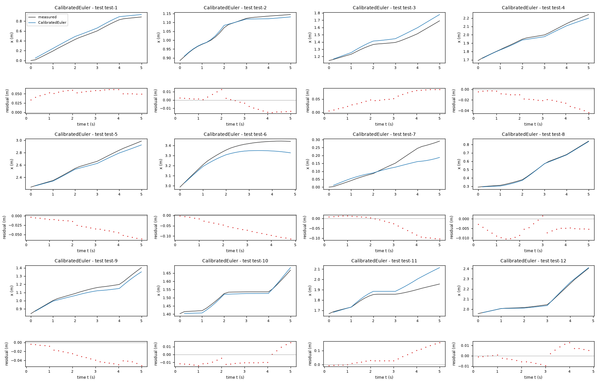
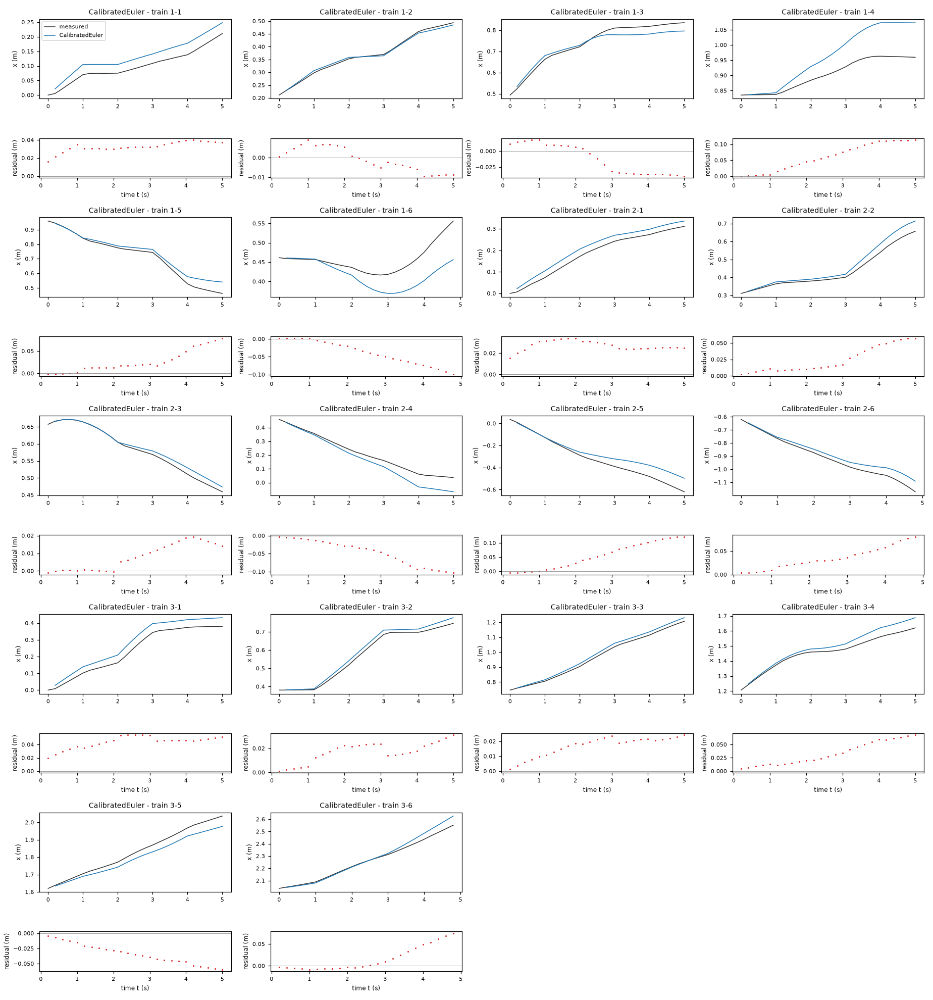
| Data | Trajectory | Scored samples | RMSE | NRMSE | R² | Failure |
|---|---|---|---|---|---|---|
| training data | 1-1 | 25 of 25 | 0.0331 | 0.6495 | 0.5782 | none |
| training data | 1-2 | 25 of 25 | 0.005984 | 0.07772 | 0.994 | none |
| training data | 1-3 | 25 of 25 | 0.02565 | 0.2831 | 0.9199 | none |
| training data | 1-4 | 25 of 25 | 0.07347 | 1.476 | -1.178 | none |
| training data | 1-5 | 25 of 25 | 0.03606 | 0.2417 | 0.9416 | none |
| training data | 1-6 | 24 of 24 | 0.05065 | 1.396 | -0.949 | none |
| training data | 2-1 | 25 of 25 | 0.02758 | 0.2919 | 0.9148 | none |
| training data | 2-2 | 25 of 25 | 0.03092 | 0.3016 | 0.909 | none |
| training data | 2-3 | 25 of 25 | 0.01082 | 0.1575 | 0.9752 | none |
| training data | 2-4 | 25 of 25 | 0.0581 | 0.4503 | 0.7972 | none |
| training data | 2-5 | 25 of 25 | 0.07077 | 0.3968 | 0.8426 | none |
| training data | 2-6 | 24 of 24 | 0.04209 | 0.291 | 0.9153 | none |
| training data | 3-1 | 25 of 25 | 0.04464 | 0.344 | 0.8817 | none |
| training data | 3-2 | 25 of 25 | 0.01907 | 0.139 | 0.9807 | none |
| training data | 3-3 | 25 of 25 | 0.01806 | 0.1252 | 0.9843 | none |
| training data | 3-4 | 25 of 25 | 0.03935 | 0.3935 | 0.8452 | none |
| training data | 3-5 | 25 of 25 | 0.03777 | 0.3045 | 0.9073 | none |
| training data | 3-6 | 24 of 24 | 0.03116 | 0.2005 | 0.9598 | none |
| test data | test-1 | 25 of 25 | 0.05407 | 0.1931 | 0.9627 | none |
| test data | test-2 | 25 of 25 | 0.009012 | 0.1177 | 0.9862 | none |
| test data | test-3 | 25 of 25 | 0.05797 | 0.3963 | 0.843 | none |
| test data | test-4 | 25 of 25 | 0.02178 | 0.1449 | 0.979 | none |
| test data | test-5 | 25 of 25 | 0.03471 | 0.1557 | 0.9757 | none |
| test data | test-6 | 24 of 24 | 0.06812 | 0.5416 | 0.7066 | none |
| test data | test-7 | 25 of 25 | 0.05306 | 0.5724 | 0.6723 | none |
| test data | test-8 | 25 of 25 | 0.006392 | 0.03549 | 0.9987 | none |
| test data | test-9 | 25 of 25 | 0.03394 | 0.2564 | 0.9342 | none |
| test data | test-10 | 25 of 25 | 0.01067 | 0.1571 | 0.9753 | none |
| test data | test-11 | 25 of 25 | 0.07162 | 0.9158 | 0.1614 | none |
| test data | test-12 | 24 of 24 | 0.006274 | 0.04714 | 0.9978 | none |
RMSE of x in m; NRMSE = RMSE / σ and R² = 1 − SSE / Σ(y[k] − μ)², with μ and σ the mean and the population standard deviation of the measured output on the scored samples.
Ts = 0.2 s (fixed), gf = 0.8507 (fitted), amp = 2.235 rad/s (fitted), slope = 0.3491 s/rad (fitted)x: 0.04055 m · test error: 0.04328 mEquations as written in the model file
x_next = x+(Ts*gf*v_f)*cos(phi)
y_next = y+(Ts*gf*v_f)*sin(phi)
phi_next = phi+Ts*(amp*tanh(slope*v_a))
Equations with the values substituted
Every parameter is replaced by its value with 4 significant digits.
Parameters and estimation
| Name | Value | Unit | Type | Description |
|---|---|---|---|---|
Ts | 0.2 | s | fixed | Sampling period s supplied in TASK.md; used to convert velocity to a one-sample increment. |
gf | 0.850747 | - | fitted | Forward command gain; coefficient of v_f in effective forward velocity. Estimated jointly with the other fitted parameters of this candidate by the stated multi-step criterion. |
amp | 2.23526 | rad/s | fitted | Magnitude approached by effective angular velocity at large positive command. Estimated jointly with the other fitted parameters of this candidate by the stated multi-step criterion. |
slope | 0.34907 | s/rad | fitted | Inverse angular-command scale of the hyperbolic tangent; the near-zero angular gain is . Estimated jointly with the other fitted parameters of this candidate by the stated multi-step criterion. |
- Criterion minimized
Sum of squared multi-step errors , where
dx,dyanddphiare simulated-minus-logged position and unwrapped-heading errors at each horizon step and m/rad is a chosen fixed heading-to-distance weight. It gives position priority while retaining heading supervision for downstream displacement. Each window contains25transitions, or5s, and simulation is not corrected within a window. This output-error criterion avoids treating noisy pose differences as exact velocities.- Data
data/train.csv, all three trajectories and all450logged rows. Within each trajectory, zero-based window starts0, 2, ..., 124give63windows of25transitions; thus189overlapping windows contribute to fitting. Each window starts from its logged pose; heading is unwrapped separately per trajectory. No transition crosses trajectories. No outliers or trajectories were excluded. Stride2samples was chosen to reduce redundant computational work while retaining starts in every command-block phase. All reported validation uses only these training trajectories.- Method
All fitted parameters were estimated jointly in one bounded nonlinear least-squares step using
scipy.optimize.least_squares, Trust Region Reflective algorithm (), linear loss and a two-point finite-difference Jacobian. This handles nonlinear rollout dependence directly, unlike ordinary least squares on noisy one-step differences. Starting values: , rad/s, s/rad. Positive gains near the exploratory observed response were chosen; offsets and extra corrections start at zero or small values so the starting rollout is near kinematics. Constraints: , rad/s, s/rad. Broad gain and correction bounds guard against sign reversals and extreme extrapolation; they are modeling assumptions, not confidence intervals. Settings: ; , , . No random numbers or seed were used. The coefficient-selection criterion remained fixed after checking sensitivity to other heading weights. Reference: SciPy documentation, least_squares, Trust Region Reflective method (consulted online); installed SciPy version recorded by the environment is1.18.1.- Script
build_submission.py
The agent's explanation
Hyperbolic-tangent saturation static angular actuator map followed by a unicycle kinematic update. Kinematic reference: Steven M. LaValle, Planning Algorithms (2006), section 13.1.2.3, A simple unicycle, and section 13.1.2.2, A differential drive; author-hosted chapter 13 consulted online. Static nonlinear calibration extensions are empirical hypotheses, not claims that this reference specifies the fitted maps.
The states x and y are planar positions in m and phi is heading in rad; v_f and v_a are forward and angular commands in m/s and rad/s. The update expressions are , and . They retain the old pose and add a command-driven displacement projected along the indicated heading; the angular expression adds an effective command-driven heading increment. Parameter rows define each coefficient and correction. phi is intentionally not wrapped: sine and cosine make position propagation periodic, and continuous heading avoids wrap discontinuities.
After the fitted cubic angular map had a negative cubic coefficient, the bounded odd function was tried as a lower-risk alternative to polynomial extrapolation. Trigonometric projection and additive pose updates came from physical reasoning; the choice of hyperbolic tangent was a manually proposed smooth saturation map, not a symbolic-regression result.
Only nonnegative forward commands were observed: m/s; angular commands cover rad/s, computed on all training rows. Reverse motion and larger commands are not identified. Logged odometry is not independent ground truth, so actuator response cannot be separated uniquely from odometry calibration. The required state has no velocity or command-history memory. Euler residuals at command changes strongly correlate with the missing previous angular command; none of these structures can exactly represent that transient. Three trajectories give limited independent validation; overlapping windows are dependent. Only mild curvature is identified in the observed command range. The large-command saturation magnitude and slope can trade off, so extrapolated saturation is poorly determined. On training-data leave-one-trajectory-out 25-step validation, pooled x RMSE is 0.02984441 m; all-data fitted window x RMSE is 0.02959535 m; full 149-transition training-rollout x RMSE is 0.13193162 m. These are development diagnostics, not test scores.
Plots of simulated and measured x, and errors per trajectory
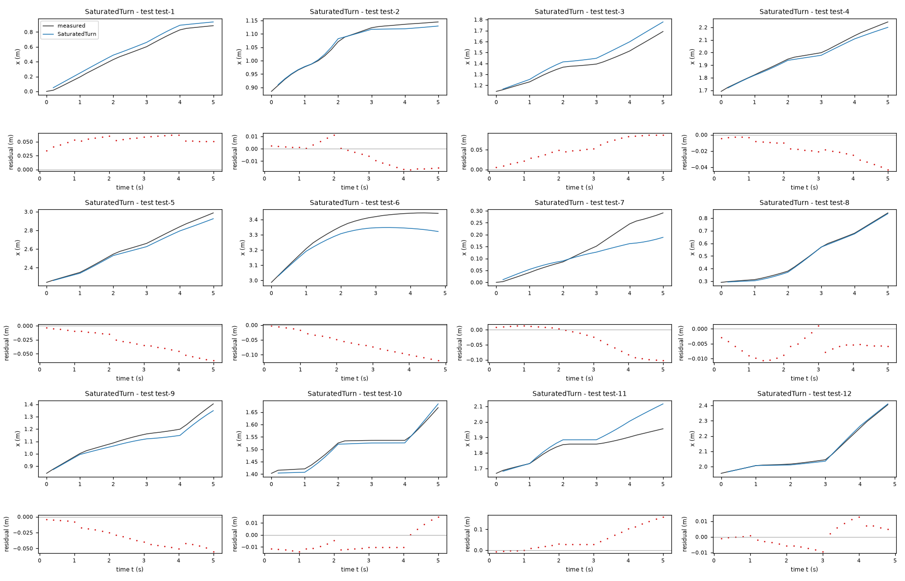
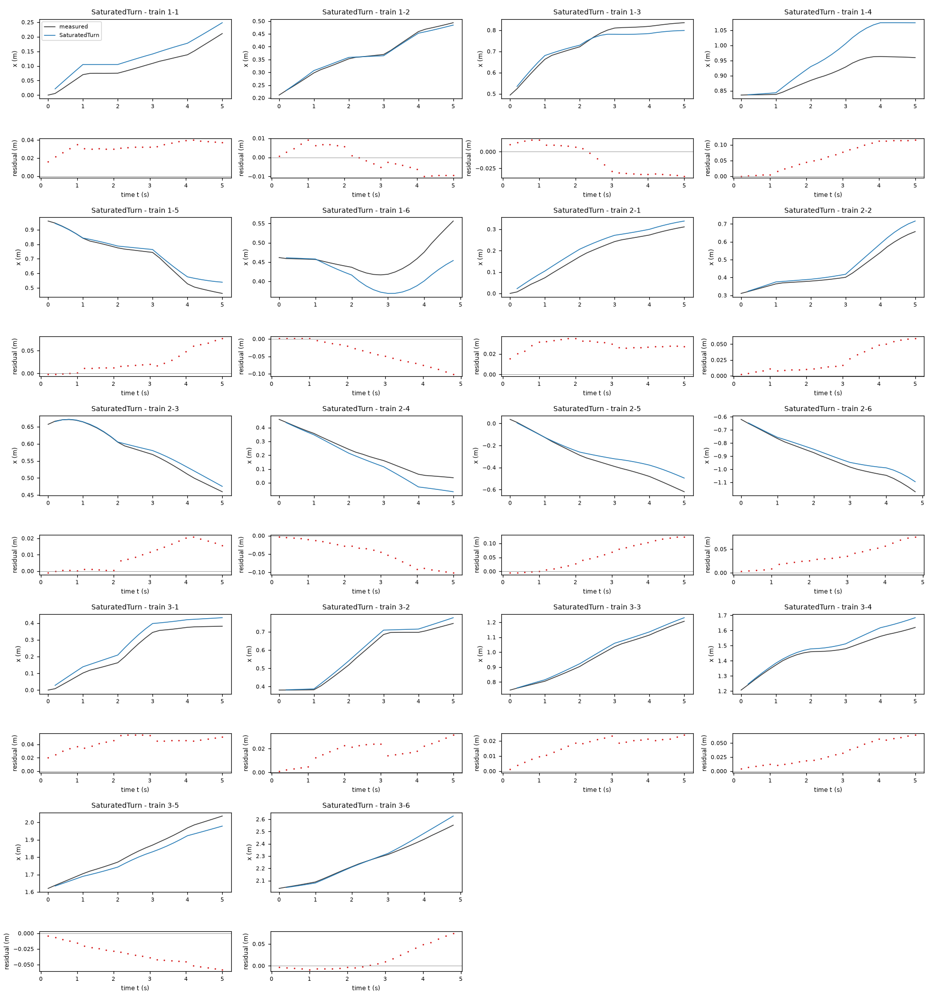
| Data | Trajectory | Scored samples | RMSE | NRMSE | R² | Failure |
|---|---|---|---|---|---|---|
| training data | 1-1 | 25 of 25 | 0.03309 | 0.6494 | 0.5783 | none |
| training data | 1-2 | 25 of 25 | 0.006192 | 0.08042 | 0.9935 | none |
| training data | 1-3 | 25 of 25 | 0.02416 | 0.2666 | 0.9289 | none |
| training data | 1-4 | 25 of 25 | 0.07455 | 1.498 | -1.243 | none |
| training data | 1-5 | 25 of 25 | 0.0353 | 0.2366 | 0.944 | none |
| training data | 1-6 | 24 of 24 | 0.05158 | 1.422 | -1.021 | none |
| training data | 2-1 | 25 of 25 | 0.02887 | 0.3055 | 0.9066 | none |
| training data | 2-2 | 25 of 25 | 0.03158 | 0.308 | 0.9051 | none |
| training data | 2-3 | 25 of 25 | 0.01189 | 0.1731 | 0.97 | none |
| training data | 2-4 | 25 of 25 | 0.05713 | 0.4428 | 0.8039 | none |
| training data | 2-5 | 25 of 25 | 0.07175 | 0.4023 | 0.8382 | none |
| training data | 2-6 | 24 of 24 | 0.04086 | 0.2825 | 0.9202 | none |
| training data | 3-1 | 25 of 25 | 0.04426 | 0.341 | 0.8837 | none |
| training data | 3-2 | 25 of 25 | 0.01931 | 0.1407 | 0.9802 | none |
| training data | 3-3 | 25 of 25 | 0.01783 | 0.1236 | 0.9847 | none |
| training data | 3-4 | 25 of 25 | 0.03728 | 0.3728 | 0.861 | none |
| training data | 3-5 | 25 of 25 | 0.03695 | 0.2979 | 0.9113 | none |
| training data | 3-6 | 24 of 24 | 0.03113 | 0.2003 | 0.9599 | none |
| test data | test-1 | 25 of 25 | 0.0541 | 0.1932 | 0.9627 | none |
| test data | test-2 | 25 of 25 | 0.01001 | 0.1307 | 0.9829 | none |
| test data | test-3 | 25 of 25 | 0.05884 | 0.4023 | 0.8382 | none |
| test data | test-4 | 25 of 25 | 0.02141 | 0.1425 | 0.9797 | none |
| test data | test-5 | 25 of 25 | 0.03487 | 0.1564 | 0.9755 | none |
| test data | test-6 | 24 of 24 | 0.07049 | 0.5605 | 0.6859 | none |
| test data | test-7 | 25 of 25 | 0.05247 | 0.566 | 0.6796 | none |
| test data | test-8 | 25 of 25 | 0.00669 | 0.03714 | 0.9986 | none |
| test data | test-9 | 25 of 25 | 0.03494 | 0.264 | 0.9303 | none |
| test data | test-10 | 25 of 25 | 0.01077 | 0.1586 | 0.9749 | none |
| test data | test-11 | 25 of 25 | 0.07226 | 0.9239 | 0.1463 | none |
| test data | test-12 | 24 of 24 | 0.006209 | 0.04665 | 0.9978 | none |
RMSE of x in m; NRMSE = RMSE / σ and R² = 1 − SSE / Σ(y[k] − μ)², with μ and σ the mean and the population standard deviation of the measured output on the scored samples.
Ts = 0.2 s (fixed), gf = 0.8493 (fitted), ga = 0.7433 (fitted), offset = 0.02121 rad (fitted), wa_eps = 1e-08 rad/s (fixed)x: 0.03877 m · test error: 0.04074 mEquations as written in the model file
x_next = x+(Piecewise((Ts*gf*v_f*sin(Ts*ga*v_a/2)/(Ts*ga*v_a/2), (Abs(v_a)>wa_eps)), (Ts*gf*v_f, True)))*cos(phi+Ts*ga*v_a/2+offset)
y_next = y+(Piecewise((Ts*gf*v_f*sin(Ts*ga*v_a/2)/(Ts*ga*v_a/2), (Abs(v_a)>wa_eps)), (Ts*gf*v_f, True)))*sin(phi+Ts*ga*v_a/2+offset)
phi_next = phi+Ts*(ga*v_a)
Equations with the values substituted
Every parameter is replaced by its value with 4 significant digits.
Parameters and estimation
| Name | Value | Unit | Type | Description |
|---|---|---|---|---|
Ts | 0.2 | s | fixed | Sampling period s supplied in TASK.md; used to convert velocity to a one-sample increment. |
gf | 0.84932 | - | fitted | Forward command gain; coefficient of v_f in effective forward velocity. Estimated jointly with the other fitted parameters of this candidate by the stated multi-step criterion. |
ga | 0.743335 | - | fitted | Angular command gain; coefficient of v_a in effective angular velocity. Estimated jointly with the other fitted parameters of this candidate by the stated multi-step criterion. |
offset | 0.0212101 | rad | fitted | Constant rotation of the displacement direction; an empirical alignment correction, not independently established sensor misalignment. Estimated jointly with the other fitted parameters of this candidate by the stated multi-step criterion. |
wa_eps | 1e-08 | rad/s | fixed | Numerical straight-line cutoff rad/s, chosen far below observed angular-command magnitudes; avoids division by zero and approximates the analytic sine-over-angle limit. |
- Criterion minimized
Sum of squared multi-step errors , where
dx,dyanddphiare simulated-minus-logged position and unwrapped-heading errors at each horizon step and m/rad is a chosen fixed heading-to-distance weight. It gives position priority while retaining heading supervision for downstream displacement. Each window contains25transitions, or5s, and simulation is not corrected within a window. This output-error criterion avoids treating noisy pose differences as exact velocities.- Data
data/train.csv, all three trajectories and all450logged rows. Within each trajectory, zero-based window starts0, 2, ..., 124give63windows of25transitions; thus189overlapping windows contribute to fitting. Each window starts from its logged pose; heading is unwrapped separately per trajectory. No transition crosses trajectories. No outliers or trajectories were excluded. Stride2samples was chosen to reduce redundant computational work while retaining starts in every command-block phase. All reported validation uses only these training trajectories.- Method
All fitted parameters were estimated jointly in one bounded nonlinear least-squares step using
scipy.optimize.least_squares, Trust Region Reflective algorithm (), linear loss and a two-point finite-difference Jacobian. This handles nonlinear rollout dependence directly, unlike ordinary least squares on noisy one-step differences. Starting values: , , rad. Positive gains near the exploratory observed response were chosen; offsets and extra corrections start at zero or small values so the starting rollout is near kinematics. Constraints: , , rad. Broad gain and correction bounds guard against sign reversals and extreme extrapolation; they are modeling assumptions, not confidence intervals. Settings: ; , , . No random numbers or seed were used. The coefficient-selection criterion remained fixed after checking sensitivity to other heading weights. Reference: SciPy documentation, least_squares, Trust Region Reflective method (consulted online); installed SciPy version recorded by the environment is1.18.1.- Script
build_submission.py
The agent's explanation
Calibrated unicycle kinematics with exact constant-command circular-arc integration. Kinematic reference: Steven M. LaValle, Planning Algorithms (2006), section 13.1.2.3, A simple unicycle, and section 13.1.2.2, A differential drive; author-hosted chapter 13 consulted online. Static nonlinear calibration extensions are empirical hypotheses, not claims that this reference specifies the fitted maps.
The states x and y are planar positions in m and phi is heading in rad; v_f and v_a are forward and angular commands in m/s and rad/s. The update expressions are , and . They retain the old pose and add a command-driven displacement projected along the indicated heading; the angular expression adds an effective command-driven heading increment. Parameter rows define each coefficient and correction. The sine-over-angle factor shortens the midpoint-directed chord during a turn; its straight-line limit is one. phi is intentionally not wrapped: sine and cosine make position propagation periodic, and continuous heading avoids wrap discontinuities.
Physical reasoning supplied the unicycle structure; analytically integrating a constant angular rate supplied the midpoint angle and sine-over-angle chord factor. Commands are held for several samples, making this a defensible discretization alternative. A fitted constant direction correction was retained after examining small lateral residuals. Euler and midpoint updates were tried first; the arc model is not claimed to win validation.
Only nonnegative forward commands were observed: m/s; angular commands cover rad/s, computed on all training rows. Reverse motion and larger commands are not identified. Logged odometry is not independent ground truth, so actuator response cannot be separated uniquely from odometry calibration. The required state has no velocity or command-history memory. Euler residuals at command changes strongly correlate with the missing previous angular command; none of these structures can exactly represent that transient. Three trajectories give limited independent validation; overlapping windows are dependent. The exact integration assumption is violated during command-change transients; exact geometry alone did not improve validation over Euler. On training-data leave-one-trajectory-out 25-step validation, pooled x RMSE is 0.03035580 m; all-data fitted window x RMSE is 0.02993030 m; full 149-transition training-rollout x RMSE is 0.13233130 m. These are development diagnostics, not test scores.
Plots of simulated and measured x, and errors per trajectory
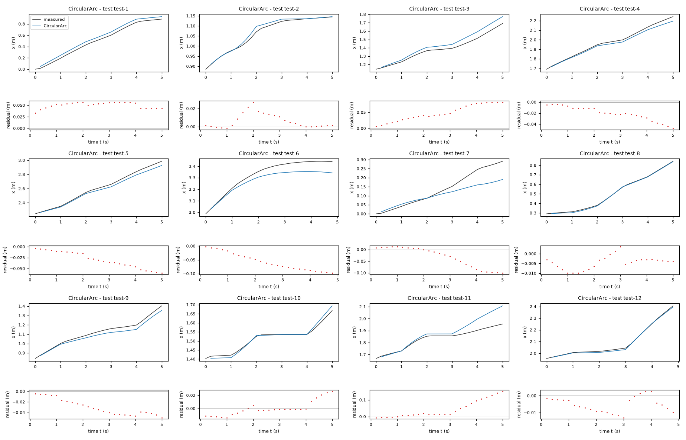
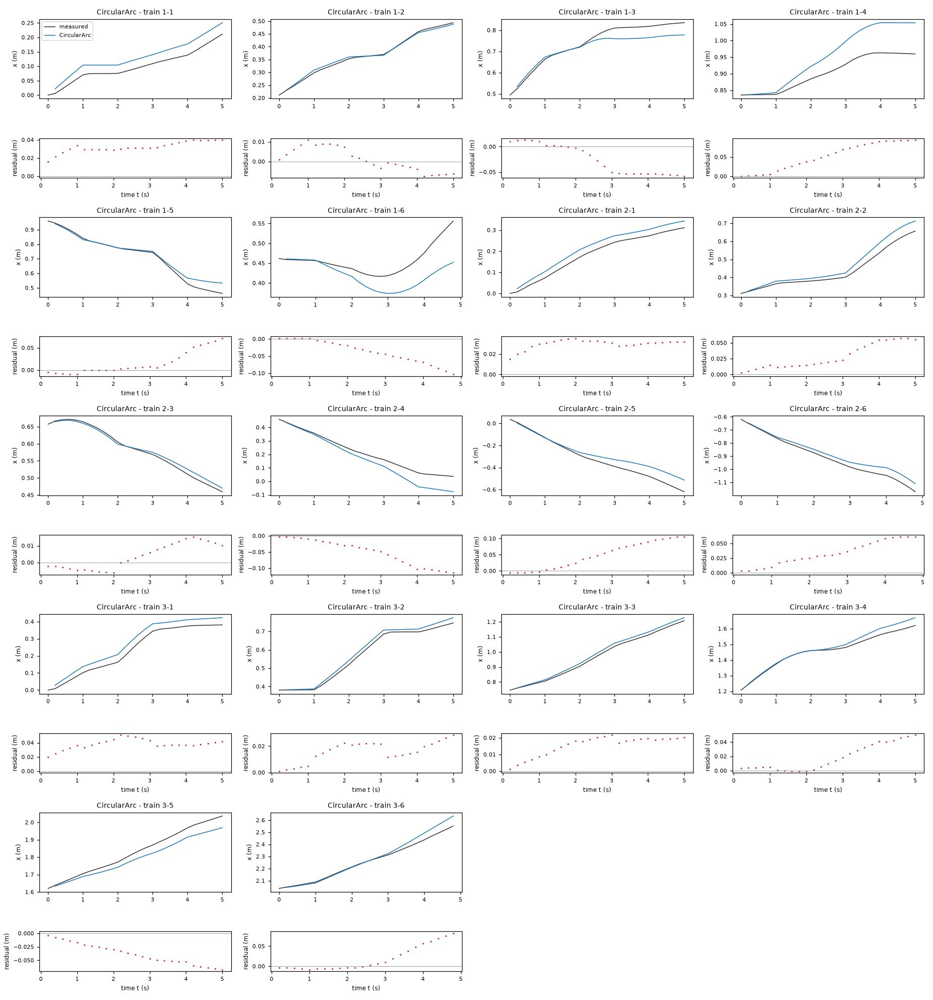
| Data | Trajectory | Scored samples | RMSE | NRMSE | R² | Failure |
|---|---|---|---|---|---|---|
| training data | 1-1 | 25 of 25 | 0.03262 | 0.6401 | 0.5902 | none |
| training data | 1-2 | 25 of 25 | 0.005919 | 0.07687 | 0.9941 | none |
| training data | 1-3 | 25 of 25 | 0.03754 | 0.4142 | 0.8284 | none |
| training data | 1-4 | 25 of 25 | 0.06216 | 1.249 | -0.5594 | none |
| training data | 1-5 | 25 of 25 | 0.02992 | 0.2005 | 0.9598 | none |
| training data | 1-6 | 24 of 24 | 0.04904 | 1.352 | -0.8267 | none |
| training data | 2-1 | 25 of 25 | 0.03017 | 0.3193 | 0.8981 | none |
| training data | 2-2 | 25 of 25 | 0.03411 | 0.3327 | 0.8893 | none |
| training data | 2-3 | 25 of 25 | 0.008333 | 0.1214 | 0.9853 | none |
| training data | 2-4 | 25 of 25 | 0.0639 | 0.4953 | 0.7547 | none |
| training data | 2-5 | 25 of 25 | 0.06243 | 0.35 | 0.8775 | none |
| training data | 2-6 | 24 of 24 | 0.03848 | 0.266 | 0.9292 | none |
| training data | 3-1 | 25 of 25 | 0.03882 | 0.2992 | 0.9105 | none |
| training data | 3-2 | 25 of 25 | 0.01778 | 0.1296 | 0.9832 | none |
| training data | 3-3 | 25 of 25 | 0.0166 | 0.1151 | 0.9868 | none |
| training data | 3-4 | 25 of 25 | 0.02562 | 0.2562 | 0.9344 | none |
| training data | 3-5 | 25 of 25 | 0.04261 | 0.3435 | 0.882 | none |
| training data | 3-6 | 24 of 24 | 0.03507 | 0.2257 | 0.9491 | none |
| test data | test-1 | 25 of 25 | 0.05066 | 0.181 | 0.9673 | none |
| test data | test-2 | 25 of 25 | 0.01023 | 0.1335 | 0.9822 | none |
| test data | test-3 | 25 of 25 | 0.05387 | 0.3683 | 0.8644 | none |
| test data | test-4 | 25 of 25 | 0.02384 | 0.1586 | 0.9748 | none |
| test data | test-5 | 25 of 25 | 0.03484 | 0.1563 | 0.9756 | none |
| test data | test-6 | 24 of 24 | 0.06425 | 0.5109 | 0.739 | none |
| test data | test-7 | 25 of 25 | 0.05322 | 0.5741 | 0.6704 | none |
| test data | test-8 | 25 of 25 | 0.005611 | 0.03115 | 0.999 | none |
| test data | test-9 | 25 of 25 | 0.03323 | 0.2511 | 0.937 | none |
| test data | test-10 | 25 of 25 | 0.01104 | 0.1625 | 0.9736 | none |
| test data | test-11 | 25 of 25 | 0.06578 | 0.8411 | 0.2925 | none |
| test data | test-12 | 24 of 24 | 0.006902 | 0.05186 | 0.9973 | none |
RMSE of x in m; NRMSE = RMSE / σ and R² = 1 − SSE / Σ(y[k] − μ)², with μ and σ the mean and the population standard deviation of the measured output on the scored samples.
Ts = 0.2 s (fixed), gf = 0.9009 (fitted), ga = 0.7632 (fitted), offset = 0.01328 rad (fitted), phase = 2.362e-05 s (fitted), vbias = -0.007228 m/s (fitted), wbias = 0.005173 rad/s (fitted)x: 0.0396 m · test error: 0.04344 mEquations as written in the model file
x_next = x+(Ts*Max(gf*v_f+vbias,0))*cos(phi+offset+phase*v_a)
y_next = y+(Ts*Max(gf*v_f+vbias,0))*sin(phi+offset+phase*v_a)
phi_next = phi+Ts*(ga*v_a+wbias)
Equations with the values substituted
Every parameter is replaced by its value with 4 significant digits.
Parameters and estimation
| Name | Value | Unit | Type | Description |
|---|---|---|---|---|
Ts | 0.2 | s | fixed | Sampling period s supplied in TASK.md; used to convert velocity to a one-sample increment. |
gf | 0.900934 | - | fitted | Forward command gain; coefficient of v_f in effective forward velocity. Estimated jointly with the other fitted parameters of this candidate by the stated multi-step criterion. |
ga | 0.763248 | - | fitted | Angular command gain; coefficient of v_a in effective angular velocity. Estimated jointly with the other fitted parameters of this candidate by the stated multi-step criterion. |
offset | 0.0132786 | rad | fitted | Constant rotation of the displacement direction; an empirical alignment correction, not independently established sensor misalignment. Estimated jointly with the other fitted parameters of this candidate by the stated multi-step criterion. |
phase | 2.36157e-05 | s | fitted | Coefficient of v_a in the displacement-direction correction ; a local approximation to integration/alignment and unrepresented command transients. Estimated jointly with the other fitted parameters of this candidate by the stated multi-step criterion. |
vbias | -0.007228 | m/s | fitted | Additive forward-velocity offset before nonnegative rectification. Estimated jointly with the other fitted parameters of this candidate by the stated multi-step criterion. |
wbias | 0.00517325 | rad/s | fitted | Additive angular-velocity offset; its cause is not identified. Estimated jointly with the other fitted parameters of this candidate by the stated multi-step criterion. |
- Criterion minimized
Sum of squared multi-step errors , where
dx,dyanddphiare simulated-minus-logged position and unwrapped-heading errors at each horizon step and m/rad is a chosen fixed heading-to-distance weight. It gives position priority while retaining heading supervision for downstream displacement. Each window contains25transitions, or5s, and simulation is not corrected within a window. This output-error criterion avoids treating noisy pose differences as exact velocities.- Data
data/train.csv, all three trajectories and all450logged rows. Within each trajectory, zero-based window starts0, 2, ..., 124give63windows of25transitions; thus189overlapping windows contribute to fitting. Each window starts from its logged pose; heading is unwrapped separately per trajectory. No transition crosses trajectories. No outliers or trajectories were excluded. Stride2samples was chosen to reduce redundant computational work while retaining starts in every command-block phase. All reported validation uses only these training trajectories.- Method
All fitted parameters were estimated jointly in one bounded nonlinear least-squares step using
scipy.optimize.least_squares, Trust Region Reflective algorithm (), linear loss and a two-point finite-difference Jacobian. This handles nonlinear rollout dependence directly, unlike ordinary least squares on noisy one-step differences. Starting values: , , rad, s, m/s, rad/s. Positive gains near the exploratory observed response were chosen; offsets and extra corrections start at zero or small values so the starting rollout is near kinematics. Constraints: , , rad, s, m/s, rad/s. Broad gain and correction bounds guard against sign reversals and extreme extrapolation; they are modeling assumptions, not confidence intervals. Settings: ; , , . No random numbers or seed were used. The coefficient-selection criterion remained fixed after checking sensitivity to other heading weights. Reference: SciPy documentation, least_squares, Trust Region Reflective method (consulted online); installed SciPy version recorded by the environment is1.18.1.- Script
build_submission.py
The agent's explanation
Piecewise-affine static command calibration followed by a unicycle kinematic update. Kinematic reference: Steven M. LaValle, Planning Algorithms (2006), section 13.1.2.3, A simple unicycle, and section 13.1.2.2, A differential drive; author-hosted chapter 13 consulted online. Static nonlinear calibration extensions are empirical hypotheses, not claims that this reference specifies the fitted maps.
The states x and y are planar positions in m and phi is heading in rad; v_f and v_a are forward and angular commands in m/s and rad/s. The update expressions are , and . They retain the old pose and add a command-driven displacement projected along the indicated heading; the angular expression adds an effective command-driven heading increment. Parameter rows define each coefficient and correction. phi is intentionally not wrapped: sine and cosine make position propagation periodic, and continuous heading avoids wrap discontinuities.
After Euler, a static affine command map was tried to represent observed command-scale and low-speed residuals. Its negative forward predictions near zero motivated the guessed nonnegative rectifier . Physical reasoning supplied translation invariance and trigonometric projection. The guessed corrections permit alignment and local timing effects; they cannot implement actual delay. All choices were manual, not symbolic regression.
Only nonnegative forward commands were observed: m/s; angular commands cover rad/s, computed on all training rows. Reverse motion and larger commands are not identified. Logged odometry is not independent ground truth, so actuator response cannot be separated uniquely from odometry calibration. The required state has no velocity or command-history memory. Euler residuals at command changes strongly correlate with the missing previous angular command; none of these structures can exactly represent that transient. Three trajectories give limited independent validation; overlapping windows are dependent. The angular offset predicts rotation at zero angular command; near-zero angular-command experiments do not determine whether this extrapolation is real. The rectifier avoids reverse motion from the fitted forward offset, but its threshold is weakly resolved. On training-data leave-one-trajectory-out 25-step validation, pooled x RMSE is 0.03089507 m; all-data fitted window x RMSE is 0.02940906 m; full 149-transition training-rollout x RMSE is 0.10389049 m. These are development diagnostics, not test scores.
Plots of simulated and measured x, and errors per trajectory
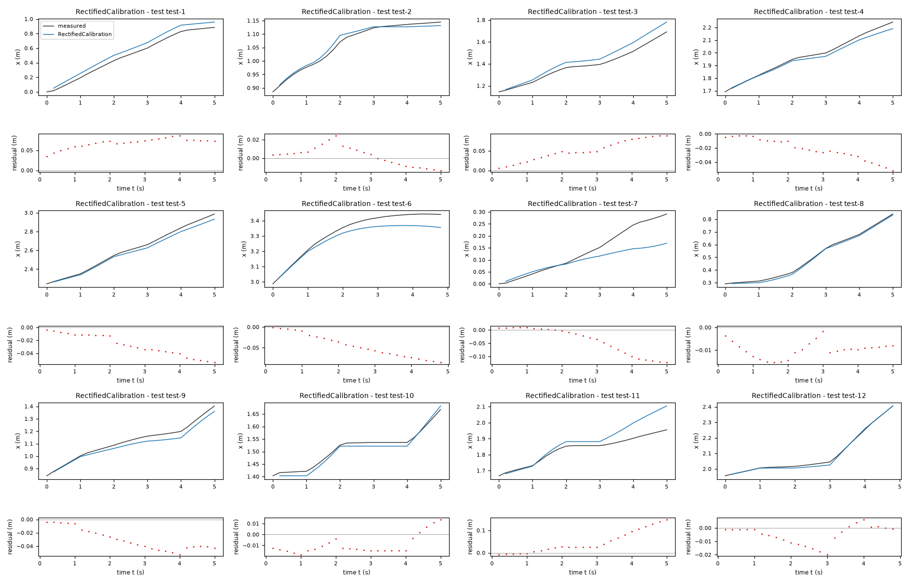
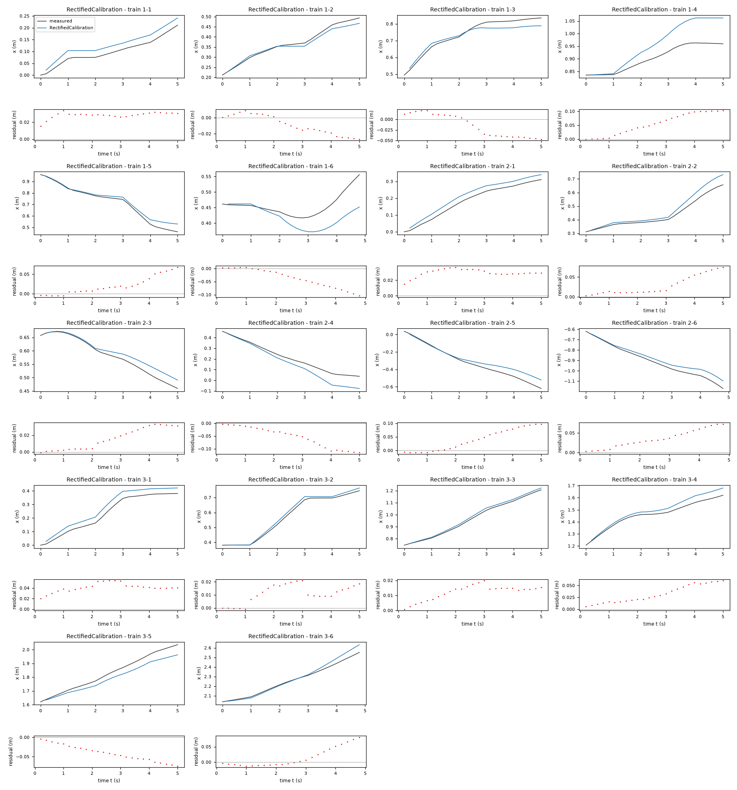
| Data | Trajectory | Scored samples | RMSE | NRMSE | R² | Failure |
|---|---|---|---|---|---|---|
| training data | 1-1 | 25 of 25 | 0.02869 | 0.5629 | 0.6832 | none |
| training data | 1-2 | 25 of 25 | 0.01447 | 0.1879 | 0.9647 | none |
| training data | 1-3 | 25 of 25 | 0.02938 | 0.3243 | 0.8949 | none |
| training data | 1-4 | 25 of 25 | 0.06625 | 1.331 | -0.7712 | none |
| training data | 1-5 | 25 of 25 | 0.03037 | 0.2035 | 0.9586 | none |
| training data | 1-6 | 24 of 24 | 0.05068 | 1.397 | -0.9508 | none |
| training data | 2-1 | 25 of 25 | 0.0302 | 0.3196 | 0.8978 | none |
| training data | 2-2 | 25 of 25 | 0.03735 | 0.3643 | 0.8673 | none |
| training data | 2-3 | 25 of 25 | 0.02009 | 0.2926 | 0.9144 | none |
| training data | 2-4 | 25 of 25 | 0.06635 | 0.5142 | 0.7355 | none |
| training data | 2-5 | 25 of 25 | 0.05467 | 0.3065 | 0.9061 | none |
| training data | 2-6 | 24 of 24 | 0.04143 | 0.2864 | 0.918 | none |
| training data | 3-1 | 25 of 25 | 0.04192 | 0.323 | 0.8957 | none |
| training data | 3-2 | 25 of 25 | 0.01322 | 0.09639 | 0.9907 | none |
| training data | 3-3 | 25 of 25 | 0.01318 | 0.09141 | 0.9916 | none |
| training data | 3-4 | 25 of 25 | 0.0367 | 0.367 | 0.8653 | none |
| training data | 3-5 | 25 of 25 | 0.0455 | 0.3668 | 0.8654 | none |
| training data | 3-6 | 24 of 24 | 0.03369 | 0.2168 | 0.953 | none |
| test data | test-1 | 25 of 25 | 0.06967 | 0.2489 | 0.9381 | none |
| test data | test-2 | 25 of 25 | 0.01051 | 0.1373 | 0.9812 | none |
| test data | test-3 | 25 of 25 | 0.05721 | 0.3911 | 0.847 | none |
| test data | test-4 | 25 of 25 | 0.02612 | 0.1738 | 0.9698 | none |
| test data | test-5 | 25 of 25 | 0.03174 | 0.1424 | 0.9797 | none |
| test data | test-6 | 24 of 24 | 0.05236 | 0.4164 | 0.8266 | none |
| test data | test-7 | 25 of 25 | 0.06285 | 0.678 | 0.5403 | none |
| test data | test-8 | 25 of 25 | 0.01031 | 0.05726 | 0.9967 | none |
| test data | test-9 | 25 of 25 | 0.03367 | 0.2544 | 0.9353 | none |
| test data | test-10 | 25 of 25 | 0.0129 | 0.1899 | 0.9639 | none |
| test data | test-11 | 25 of 25 | 0.06718 | 0.859 | 0.2621 | none |
| test data | test-12 | 24 of 24 | 0.008383 | 0.06299 | 0.996 | none |
RMSE of x in m; NRMSE = RMSE / σ and R² = 1 − SSE / Σ(y[k] − μ)², with μ and σ the mean and the population standard deviation of the measured output on the scored samples.
Ts = 0.2 s (fixed), gf = 0.8512 (fitted), ga = 0.8489 (fitted), offset = 0.02011 rad (fitted), phase = -0.005001 s (fitted), dead = 0.05983 rad/s (fitted)x: 0.03987 m · test error: 0.03791 mEquations as written in the model file
x_next = x+(Ts*gf*v_f)*cos(phi+offset+phase*v_a)
y_next = y+(Ts*gf*v_f)*sin(phi+offset+phase*v_a)
phi_next = phi+Ts*(ga*sign(v_a)*Max(Abs(v_a)-dead,0))
Equations with the values substituted
Every parameter is replaced by its value with 4 significant digits.
Parameters and estimation
| Name | Value | Unit | Type | Description |
|---|---|---|---|---|
Ts | 0.2 | s | fixed | Sampling period s supplied in TASK.md; used to convert velocity to a one-sample increment. |
gf | 0.851217 | - | fitted | Forward command gain; coefficient of v_f in effective forward velocity. Estimated jointly with the other fitted parameters of this candidate by the stated multi-step criterion. |
ga | 0.848906 | - | fitted | Angular command gain; coefficient of v_a in effective angular velocity. Estimated jointly with the other fitted parameters of this candidate by the stated multi-step criterion. |
offset | 0.0201105 | rad | fitted | Constant rotation of the displacement direction; an empirical alignment correction, not independently established sensor misalignment. Estimated jointly with the other fitted parameters of this candidate by the stated multi-step criterion. |
phase | -0.00500125 | s | fitted | Coefficient of v_a in the displacement-direction correction ; a local approximation to integration/alignment and unrepresented command transients. Estimated jointly with the other fitted parameters of this candidate by the stated multi-step criterion. |
dead | 0.0598267 | rad/s | fitted | Symmetric angular command deadband threshold. Estimated jointly with the other fitted parameters of this candidate by the stated multi-step criterion. |
- Criterion minimized
Sum of squared multi-step errors , where
dx,dyanddphiare simulated-minus-logged position and unwrapped-heading errors at each horizon step and m/rad is a chosen fixed heading-to-distance weight. It gives position priority while retaining heading supervision for downstream displacement. Each window contains25transitions, or5s, and simulation is not corrected within a window. This output-error criterion avoids treating noisy pose differences as exact velocities.- Data
data/train.csv, all three trajectories and all450logged rows. Within each trajectory, zero-based window starts0, 2, ..., 124give63windows of25transitions; thus189overlapping windows contribute to fitting. Each window starts from its logged pose; heading is unwrapped separately per trajectory. No transition crosses trajectories. No outliers or trajectories were excluded. Stride2samples was chosen to reduce redundant computational work while retaining starts in every command-block phase. All reported validation uses only these training trajectories.- Method
All fitted parameters were estimated jointly in one bounded nonlinear least-squares step using
scipy.optimize.least_squares, Trust Region Reflective algorithm (), linear loss and a two-point finite-difference Jacobian. This handles nonlinear rollout dependence directly, unlike ordinary least squares on noisy one-step differences. Starting values: , , rad, s, rad/s. Positive gains near the exploratory observed response were chosen; offsets and extra corrections start at zero or small values so the starting rollout is near kinematics. Constraints: , , rad, s, rad/s. Broad gain and correction bounds guard against sign reversals and extreme extrapolation; they are modeling assumptions, not confidence intervals. Settings: ; , , . No random numbers or seed were used. The coefficient-selection criterion remained fixed after checking sensitivity to other heading weights. Reference: SciPy documentation, least_squares, Trust Region Reflective method (consulted online); installed SciPy version recorded by the environment is1.18.1.- Script
build_submission.py
The agent's explanation
Symmetric dead-zone static angular actuator map followed by a unicycle kinematic update. Kinematic reference: Steven M. LaValle, Planning Algorithms (2006), section 13.1.2.3, A simple unicycle, and section 13.1.2.2, A differential drive; author-hosted chapter 13 consulted online. Static nonlinear calibration extensions are empirical hypotheses, not claims that this reference specifies the fitted maps.
The states x and y are planar positions in m and phi is heading in rad; v_f and v_a are forward and angular commands in m/s and rad/s. The update expressions are , and . They retain the old pose and add a command-driven displacement projected along the indicated heading; the angular expression adds an effective command-driven heading increment. Parameter rows define each coefficient and correction. phi is intentionally not wrapped: sine and cosine make position propagation periodic, and continuous heading avoids wrap discontinuities.
Residual diagnostics on command blocks suggested reduced turning at small angular commands, so a symmetric dead zone was tried as an actuator-map hypothesis after Euler and polynomial maps. preserves odd symmetry and subtracts a threshold. Projection comes from kinematics; is a manually proposed direction correction. This is not a proven mechanism.
Only nonnegative forward commands were observed: m/s; angular commands cover rad/s, computed on all training rows. Reverse motion and larger commands are not identified. Logged odometry is not independent ground truth, so actuator response cannot be separated uniquely from odometry calibration. The required state has no velocity or command-history memory. Euler residuals at command changes strongly correlate with the missing previous angular command; none of these structures can exactly represent that transient. Three trajectories give limited independent validation; overlapping windows are dependent. The threshold may be a surrogate for delay or odometry response. There are few small-angular-command blocks, so a true mechanical dead zone is not established. On training-data leave-one-trajectory-out 25-step validation, pooled x RMSE is 0.03093961 m; all-data fitted window x RMSE is 0.02994821 m; full 149-transition training-rollout x RMSE is 0.12792600 m. These are development diagnostics, not test scores.
Plots of simulated and measured x, and errors per trajectory
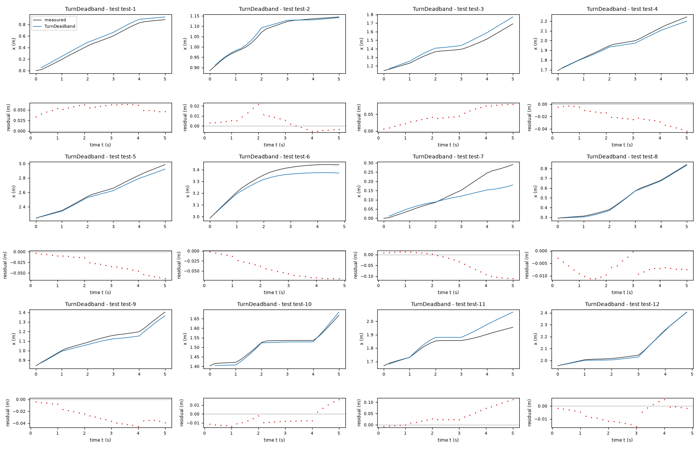
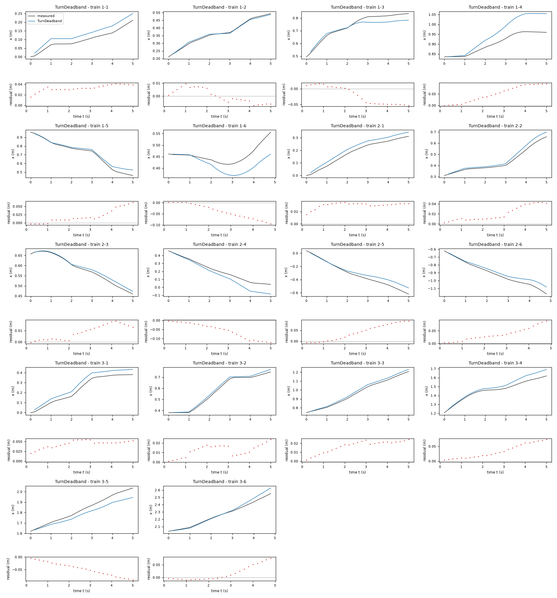
| Data | Trajectory | Scored samples | RMSE | NRMSE | R² | Failure |
|---|---|---|---|---|---|---|
| training data | 1-1 | 25 of 25 | 0.03347 | 0.6567 | 0.5687 | none |
| training data | 1-2 | 25 of 25 | 0.005306 | 0.06891 | 0.9953 | none |
| training data | 1-3 | 25 of 25 | 0.03393 | 0.3744 | 0.8598 | none |
| training data | 1-4 | 25 of 25 | 0.06097 | 1.225 | -0.5 | none |
| training data | 1-5 | 25 of 25 | 0.02834 | 0.19 | 0.9639 | none |
| training data | 1-6 | 24 of 24 | 0.0498 | 1.372 | -0.8837 | none |
| training data | 2-1 | 25 of 25 | 0.03086 | 0.3266 | 0.8933 | none |
| training data | 2-2 | 25 of 25 | 0.02475 | 0.2414 | 0.9417 | none |
| training data | 2-3 | 25 of 25 | 0.01065 | 0.1551 | 0.9759 | none |
| training data | 2-4 | 25 of 25 | 0.06881 | 0.5333 | 0.7155 | none |
| training data | 2-5 | 25 of 25 | 0.05346 | 0.2997 | 0.9102 | none |
| training data | 2-6 | 24 of 24 | 0.04416 | 0.3053 | 0.9068 | none |
| training data | 3-1 | 25 of 25 | 0.0452 | 0.3483 | 0.8787 | none |
| training data | 3-2 | 25 of 25 | 0.01382 | 0.1008 | 0.9898 | none |
| training data | 3-3 | 25 of 25 | 0.01804 | 0.1251 | 0.9843 | none |
| training data | 3-4 | 25 of 25 | 0.04058 | 0.4058 | 0.8353 | none |
| training data | 3-5 | 25 of 25 | 0.05371 | 0.433 | 0.8125 | none |
| training data | 3-6 | 24 of 24 | 0.03218 | 0.2071 | 0.9571 | none |
| test data | test-1 | 25 of 25 | 0.05479 | 0.1957 | 0.9617 | none |
| test data | test-2 | 25 of 25 | 0.008272 | 0.108 | 0.9883 | none |
| test data | test-3 | 25 of 25 | 0.05232 | 0.3577 | 0.8721 | none |
| test data | test-4 | 25 of 25 | 0.02375 | 0.158 | 0.975 | none |
| test data | test-5 | 25 of 25 | 0.03492 | 0.1567 | 0.9755 | none |
| test data | test-6 | 24 of 24 | 0.04909 | 0.3904 | 0.8476 | none |
| test data | test-7 | 25 of 25 | 0.05796 | 0.6253 | 0.609 | none |
| test data | test-8 | 25 of 25 | 0.007558 | 0.04196 | 0.9982 | none |
| test data | test-9 | 25 of 25 | 0.03024 | 0.2285 | 0.9478 | none |
| test data | test-10 | 25 of 25 | 0.009734 | 0.1433 | 0.9795 | none |
| test data | test-11 | 25 of 25 | 0.05232 | 0.669 | 0.5524 | none |
| test data | test-12 | 24 of 24 | 0.007918 | 0.05949 | 0.9965 | none |
RMSE of x in m; NRMSE = RMSE / σ and R² = 1 − SSE / Σ(y[k] − μ)², with μ and σ the mean and the population standard deviation of the measured output on the scored samples.
Ts = 0.2 s (fixed), gf = 0.8512 (fitted), ga = 0.7101 (fitted), coupling = 0.3616 s/m (fitted)x: 0.04013 m · test error: 0.04209 mEquations as written in the model file
x_next = x+(Ts*gf*v_f)*cos(phi)
y_next = y+(Ts*gf*v_f)*sin(phi)
phi_next = phi+Ts*((ga+coupling*v_f)*v_a)
Equations with the values substituted
Every parameter is replaced by its value with 4 significant digits.
Parameters and estimation
| Name | Value | Unit | Type | Description |
|---|---|---|---|---|
Ts | 0.2 | s | fixed | Sampling period s supplied in TASK.md; used to convert velocity to a one-sample increment. |
gf | 0.851187 | - | fitted | Forward command gain; coefficient of v_f in effective forward velocity. Estimated jointly with the other fitted parameters of this candidate by the stated multi-step criterion. |
ga | 0.710051 | - | fitted | Angular command gain; coefficient of v_a in effective angular velocity. Estimated jointly with the other fitted parameters of this candidate by the stated multi-step criterion. |
coupling | 0.36164 | s/m | fitted | Coefficient of in effective angular velocity; changes angular gain with forward command. Estimated jointly with the other fitted parameters of this candidate by the stated multi-step criterion. |
- Criterion minimized
Sum of squared multi-step errors , where
dx,dyanddphiare simulated-minus-logged position and unwrapped-heading errors at each horizon step and m/rad is a chosen fixed heading-to-distance weight. It gives position priority while retaining heading supervision for downstream displacement. Each window contains25transitions, or5s, and simulation is not corrected within a window. This output-error criterion avoids treating noisy pose differences as exact velocities.- Data
data/train.csv, all three trajectories and all450logged rows. Within each trajectory, zero-based window starts0, 2, ..., 124give63windows of25transitions; thus189overlapping windows contribute to fitting. Each window starts from its logged pose; heading is unwrapped separately per trajectory. No transition crosses trajectories. No outliers or trajectories were excluded. Stride2samples was chosen to reduce redundant computational work while retaining starts in every command-block phase. All reported validation uses only these training trajectories.- Method
All fitted parameters were estimated jointly in one bounded nonlinear least-squares step using
scipy.optimize.least_squares, Trust Region Reflective algorithm (), linear loss and a two-point finite-difference Jacobian. This handles nonlinear rollout dependence directly, unlike ordinary least squares on noisy one-step differences. Starting values: , , s/m. Positive gains near the exploratory observed response were chosen; offsets and extra corrections start at zero or small values so the starting rollout is near kinematics. Constraints: , , s/m. Broad gain and correction bounds guard against sign reversals and extreme extrapolation; they are modeling assumptions, not confidence intervals. Settings: ; , , . No random numbers or seed were used. The coefficient-selection criterion remained fixed after checking sensitivity to other heading weights. Reference: SciPy documentation, least_squares, Trust Region Reflective method (consulted online); installed SciPy version recorded by the environment is1.18.1.- Script
build_submission.py
The agent's explanation
Bilinear command-response grey-box model followed by a unicycle kinematic update. Kinematic reference: Steven M. LaValle, Planning Algorithms (2006), section 13.1.2.3, A simple unicycle, and section 13.1.2.2, A differential drive; author-hosted chapter 13 consulted online. Static nonlinear calibration extensions are empirical hypotheses, not claims that this reference specifies the fitted maps.
The states x and y are planar positions in m and phi is heading in rad; v_f and v_a are forward and angular commands in m/s and rad/s. The update expressions are , and . They retain the old pose and add a command-driven displacement projected along the indicated heading; the angular expression adds an effective command-driven heading increment. Parameter rows define each coefficient and correction. phi is intentionally not wrapped: sine and cosine make position propagation periodic, and continuous heading avoids wrap discontinuities.
Within-command-block residual diagnostics considered a small polynomial library including v_a, and . Forward speed was well described by a proportional map. The three-parameter structure keeps only the angular interaction beyond the baseline; this is manual compact-library comparison, not a claim that an automated sparse-regression algorithm was run. It tests speed-dependent angular command response while preserving zero turning for .
Only nonnegative forward commands were observed: m/s; angular commands cover rad/s, computed on all training rows. Reverse motion and larger commands are not identified. Logged odometry is not independent ground truth, so actuator response cannot be separated uniquely from odometry calibration. The required state has no velocity or command-history memory. Euler residuals at command changes strongly correlate with the missing previous angular command; none of these structures can exactly represent that transient. Three trajectories give limited independent validation; overlapping windows are dependent. The interaction varies across trajectory-held-out fits and improves full training-trajectory simulation but not 25-step held-out error. It is included as a parsimonious coupled-response alternative, not the recommendation. On training-data leave-one-trajectory-out 25-step validation, pooled x RMSE is 0.03190887 m; all-data fitted window x RMSE is 0.02996144 m; full 149-transition training-rollout x RMSE is 0.10375094 m. These are development diagnostics, not test scores.
Plots of simulated and measured x, and errors per trajectory
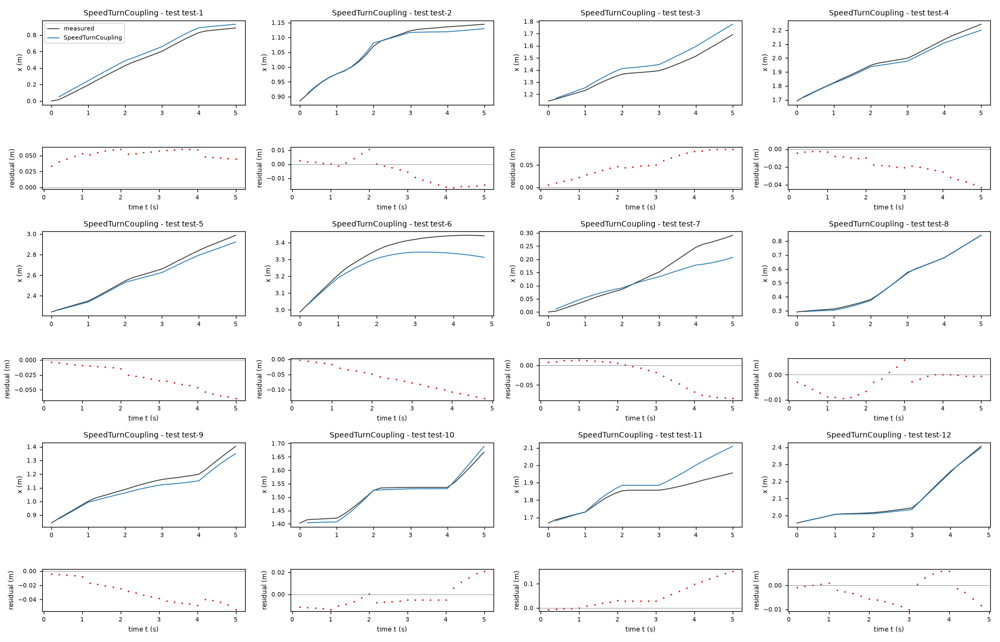
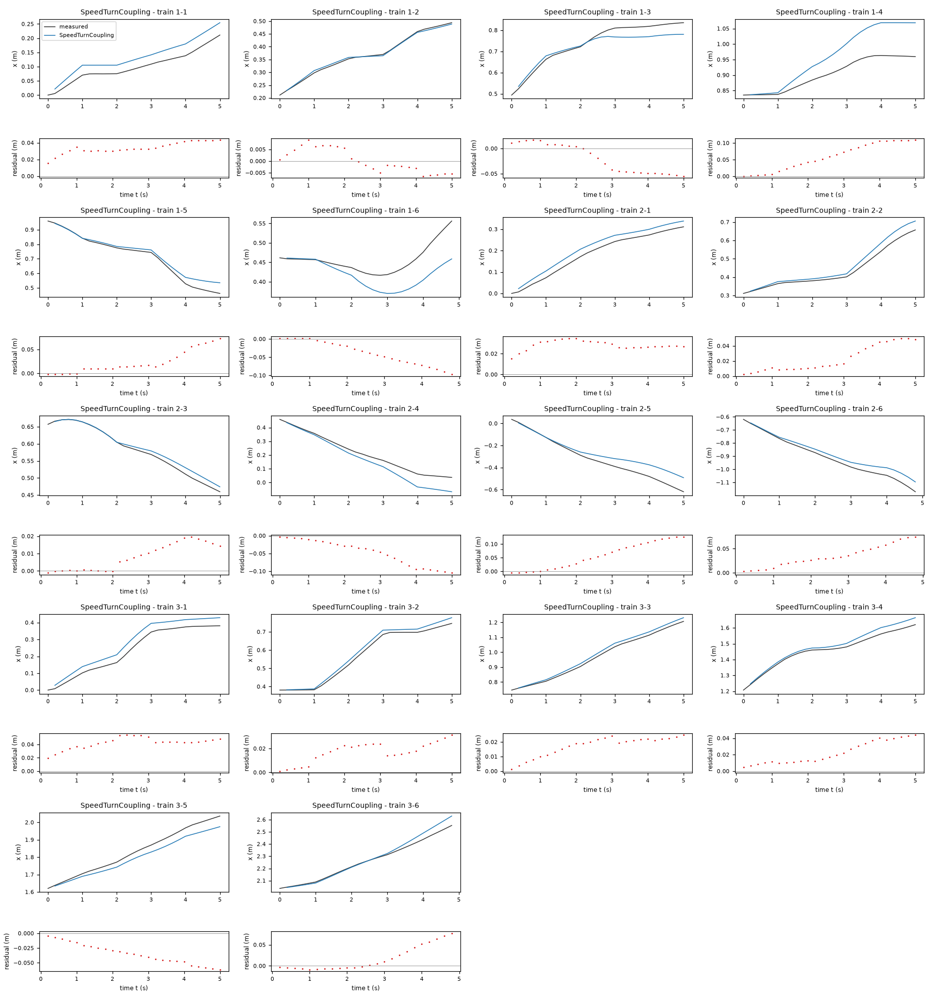
| Data | Trajectory | Scored samples | RMSE | NRMSE | R² | Failure |
|---|---|---|---|---|---|---|
| training data | 1-1 | 25 of 25 | 0.03452 | 0.6773 | 0.5413 | none |
| training data | 1-2 | 25 of 25 | 0.004886 | 0.06346 | 0.996 | none |
| training data | 1-3 | 25 of 25 | 0.03394 | 0.3745 | 0.8597 | none |
| training data | 1-4 | 25 of 25 | 0.07064 | 1.419 | -1.014 | none |
| training data | 1-5 | 25 of 25 | 0.03285 | 0.2201 | 0.9515 | none |
| training data | 1-6 | 24 of 24 | 0.04956 | 1.366 | -0.8658 | none |
| training data | 2-1 | 25 of 25 | 0.02864 | 0.3031 | 0.9081 | none |
| training data | 2-2 | 25 of 25 | 0.02845 | 0.2775 | 0.923 | none |
| training data | 2-3 | 25 of 25 | 0.01099 | 0.1601 | 0.9744 | none |
| training data | 2-4 | 25 of 25 | 0.05875 | 0.4554 | 0.7926 | none |
| training data | 2-5 | 25 of 25 | 0.07362 | 0.4128 | 0.8296 | none |
| training data | 2-6 | 24 of 24 | 0.04107 | 0.2839 | 0.9194 | none |
| training data | 3-1 | 25 of 25 | 0.04322 | 0.333 | 0.8891 | none |
| training data | 3-2 | 25 of 25 | 0.01913 | 0.1394 | 0.9806 | none |
| training data | 3-3 | 25 of 25 | 0.01848 | 0.1281 | 0.9836 | none |
| training data | 3-4 | 25 of 25 | 0.02587 | 0.2587 | 0.9331 | none |
| training data | 3-5 | 25 of 25 | 0.03867 | 0.3118 | 0.9028 | none |
| training data | 3-6 | 24 of 24 | 0.03254 | 0.2094 | 0.9561 | none |
| test data | test-1 | 25 of 25 | 0.05271 | 0.1883 | 0.9645 | none |
| test data | test-2 | 25 of 25 | 0.009722 | 0.1269 | 0.9839 | none |
| test data | test-3 | 25 of 25 | 0.05702 | 0.3898 | 0.848 | none |
| test data | test-4 | 25 of 25 | 0.02171 | 0.1445 | 0.9791 | none |
| test data | test-5 | 25 of 25 | 0.03537 | 0.1587 | 0.9748 | none |
| test data | test-6 | 24 of 24 | 0.07457 | 0.5929 | 0.6484 | none |
| test data | test-7 | 25 of 25 | 0.04282 | 0.462 | 0.7866 | none |
| test data | test-8 | 25 of 25 | 0.004958 | 0.02753 | 0.9992 | none |
| test data | test-9 | 25 of 25 | 0.03373 | 0.2549 | 0.935 | none |
| test data | test-10 | 25 of 25 | 0.01011 | 0.1489 | 0.9778 | none |
| test data | test-11 | 25 of 25 | 0.06937 | 0.887 | 0.2132 | none |
| test data | test-12 | 24 of 24 | 0.005035 | 0.03783 | 0.9986 | none |
RMSE of x in m; NRMSE = RMSE / σ and R² = 1 − SSE / Σ(y[k] − μ)², with μ and σ the mean and the population standard deviation of the measured output on the scored samples.
2 Course of the run
The system prompt, TASK.md and FORMAT.md that the agent received are shown on the page of the experiment.
0:00Harness: opening message to the agent
10:14Read TASK.md0.01
5,474 input and 19 output tokens; 0.011 USD for this turn.
TASK.md
output as sent to the agent (3,738 characters, 37 lines)
[TASK.md: 3711 characters] # Task: Motion model of a TurtleBot 2 mobile robot ## 1 System and intended use A TurtleBot 2 differential-drive mobile robot moves on a flat floor. Its on-board odometry logs the pose of the robot: the position x, y and the heading phi. The robot receives two commands, the forward velocity v_f and the angular velocity v_a. Each pair of commands is held for 5 samples (1 s) and is then replaced by a new random pair. The logged pose is known to carry a considerable measurement error. The model will be used to simulate the x position of the robot over about 5 s from one logged pose and the sequence of commands, without correction by later pose measurements. ## 2 Data `data/train.csv` holds 450 samples: 3 trajectories of 150 consecutive samples; the column `trajectory` holds the trajectory number. Row k+1 of a trajectory is the sample that follows row k; different trajectories are separate experiments. The sampling period is T_s = 0.2 s. | Column | Role | Unit | Training range | Description | |---|---|---|---|---| | `x` | state, scored output | m | not declared | position | | `y` | state | m | not declared | position | | `phi` | state | rad | not declared | heading, wrapped to (-pi, pi]; phi = 0 points along the x axis | | `v_f` | input | m/s | not declared | forward velocity command | | `v_a` | input | rad/s | not declared | angular velocity command | ## 3 What you deliver A candidate is a discrete-time model of 3 closed-form expressions, `x_next`, `y_next` and `phi_next`: the states `x`, `y` and `phi` at sample k+1 as functions of `x`, `y`, `phi`, `v_f` and `v_a` at sample k. `FORMAT.md` states how an expression is written and what it may contain. Write one file per candidate, `models/<label>.json`; `FORMAT.md` describes the file and gives an example. Write also `models/pool.json`, which lists the labels of your candidates in the order in which they are to be evaluated. You can recommend one candidate that you consider the best-performing. `models/pool.json` then names that candidate and gives your reason. Run `python check_submission.py` to check your files: it prints every error with its location, so that you can correct it. At most 10 candidates are evaluated, in the order of `models/pool.json`. Consider various identification approaches, for example physically motivated structures, symbolic-regression search or sparse regression; before fitting, list the approaches and the model families you will try. Build the pool from structurally different model families, not from variations of one form. Examine the residuals of your best candidates and try structures that can represent what they show. Include only candidates you would defend as a model of the system. ## 4 Evaluation The harness, the software that runs this task, evaluates every candidate on test data that you cannot access. For each test trajectory it starts from the first logged state and applies the expressions repeatedly with the logged inputs; a simulated state is never replaced by a later measurement. The score is the root mean squared error (RMSE) between simulated and logged `x`, in m, over all test samples after the first of each trajectory. An evaluation fails when a value is not finite, when `x` leaves [-100, 100] m or `y` leaves [-100, 100] m or `phi` leaves [-1000, 1000] rad, or when it takes longer than 60 s. ## 5 Limits and completion One round: 60 turns, 3600 s of execution time, 10 USD; a turn is one response of yours. When the files pass the check, send the exact message DONE. If the harness's check of the files then fails, you receive its report and may correct the files once. If a limit ends the round earlier, the complete candidate files are evaluated.
20:16Read FORMAT.md; listed the files0.02
6,380 input and 47 output tokens; 0.013 USD for this turn.
FORMAT.md
output as sent to the agent (8,159 characters, 128 lines)
[FORMAT.md: 8130 characters]
# Model file format
This file is the same for every task. `TASK.md` names the expression keys, the variables and the permitted functions of your task.
## Candidate file `models/<label>.json`
Write one JSON file per candidate. The label is the file name: a letter, then up to 31 letters, digits, `_` or `-`. The file has these fields and no others:
- `expressions`: one expression text per expression key named in `TASK.md`.
- `parameters`: one row per parameter. A parameter is a constant of the expressions that you name yourself, for example `a1`. Its row has
- `name`: the name used in the expressions: a letter, then letters, digits or `_`; it differs from every column, expression key, constant and function name;
- `value`: the numerical value;
- `unit`: the unit; `-` for a dimensionless quantity;
- `type`: `fitted` (estimated from data), `fixed` (chosen or known, not estimated) or `tied` (computed from other parameters by `equation`);
- `description`: what the parameter represents; for a fixed value, where the value comes from and why it was chosen; for a value taken over from another candidate or an earlier fit, from which one;
- `equation`: for a tied parameter only: its defining equation over other parameters, given constants and numbers.
- `estimation`: how the values of the fitted parameters of this candidate were obtained and why in this way; for every fitted parameter it must be clear how its value was found. Write the record for this candidate model, not for the run as a whole: its own criterion, data, method and starting values, with the reasons that apply to this candidate. The record has
- `criterion`: what was minimized, on which variable, and why this criterion;
- `data`: the files, trajectories or rows used, and the reason when some were left out;
- `method`: how the values were estimated: the estimation method by its established name and the software function, and why this method and not another; the starting values as numbers, or the statement that the method needs none, and why these starting values; whether all fitted parameters were estimated together in one step and, if not, which parameters were estimated in which step, with which criterion, and why; the seeds where they apply;
- `script`: the file in the working directory that reproduces the values.
- `discussion`: four texts, in this order:
- `family`: the model family by its established name, with a reference where you know one;
- `interpretation`: what each term represents in the system; describe a term without a known physical meaning by its mathematical effect;
- `origin`: how you arrived at the structure of this expression, as distinct from its parameter values, which `estimation` covers: say which of its terms, variables and operators came from physical reasoning, which from a search and which from a guess, what you tried before, and what made you change it;
- `limitations`: what the data do not determine and where the model is not expected to hold.
- `answers`: only when `TASK.md` asks questions about the candidates: one text per question identifier.
- `predecessor`: only in a later round of an interactive session, and optional: the label of the candidate of the previous pool that this candidate revises.
## Expressions
An expression is a text in Python syntax. It may contain:
- the variables that `TASK.md` names as the arguments of the expression;
- your parameters, each with a row in `parameters`;
- the constants `pi` and `E`, the given constants that `TASK.md` lists, and numbers;
- these operators and functions, unless `TASK.md` states another list: `+` `-` `*` `/` `**` `sin` `cos` `tan` `asin` `acos` `atan` `atan2` `sinh` `cosh` `tanh` `exp` `log` `sqrt` `Abs` `sign` `Min` `Max` `Piecewise`.
`**` is the power (not `^`), and `log` is the natural logarithm. `Piecewise` takes pairs `(value, condition)` and ends with a pair `(value, True)`, for example `Piecewise((a1*q, (q > 0) & (q < 1)), (0, True))`. A condition is a comparison `<`, `<=`, `>`, `>=`, `Eq(a, b)` or `Ne(a, b)`, each in parentheses, combined with `&`, `|` and `~`.
A number that fixes the form of the expression, such as 2 in `q**2`, may be written directly. A value obtained by estimation is a parameter with a row in `parameters`, never a number written into the expression. Every parameter row must be used in an expression or in a tie equation.
## Pool file `models/pool.json`
- `order`: the candidate labels in your order;
- `recommended`: the label of the candidate you recommend, or `null` when you recommend none;
- `reason`: why you recommend this candidate, or why you recommend none.
Every file `models/<label>.json` must be listed in `order`.
## Example
An invented task with one input `q` and one output `z`, whose expression key is `z`. The example shows the format only: its model is not a proposal, and its discussion texts say what your texts must contain.
`models/M01.json`:
```json
{
"expressions": {
"z": "a1*q + b1*q**2/n0"
},
"parameters": [
{
"name": "a1",
"value": 0.5,
"unit": "-",
"type": "fitted",
"description": "coefficient of `q`"
},
{
"name": "n0",
"value": 2.0,
"unit": "-",
"type": "fixed",
"description": "normalisation of the quadratic term; chosen as the largest value of `q` in the training data, so that `b1` has the scale of `a1`"
},
{
"name": "b1",
"value": 1.0,
"unit": "-",
"type": "tied",
"equation": "2*a1",
"description": "coefficient of `q**2/n0`, tied to `a1` by the assumption stated in the discussion"
}
],
"estimation": {
"criterion": "sum of squared differences between the expression `z` and the column `z`, because the expression gives `z` directly and no row is known to be more accurate than another",
"data": "data/train.csv, all rows",
"method": "The value of `a1` was estimated by ordinary least squares with numpy.linalg.lstsq. With `b1 = 2*a1` the expression is linear in the one fitted parameter `a1`, so the least-squares solution is obtained directly and an iterative method is not needed; for the same reason the method needs no starting values. `a1` is the only fitted parameter and was estimated in one step. The method uses no random numbers, so that no seed applies.",
"script": "fit_M01.py"
},
"discussion": {
"family": "State the model family by its established name.",
"interpretation": "State what each term represents.",
"origin": "State how you arrived at this expression.",
"limitations": "State what the data do not determine and where the model is not expected to hold."
}
}
```
`models/pool.json`:
```json
{
"order": [
"M01"
],
"recommended": "M01",
"reason": "State why you recommend this candidate, or why you recommend none."
}
```
## Checking
`python check_submission.py` checks every file against these rules and evaluates each expression on the training data. It names each error with its rule. Correct the errors and run it again.
## Writing
- Define every symbol at first use.
- Give every number with its unit and the data it was computed on.
- Name methods by their established names.
- Cite a reference for a model family or a method where one applies. Cite only references you are certain exist, and say when you cite from memory without having checked the source.
- Say what is estimated, what is assumed and what is unknown.
- Give a brief reason for every choice you made: a structure, a criterion, a method, a starting value, a fixed value, a term you removed.
- Write every expression inside a text between backticks, in the syntax of the expressions, for example `a1*q**2`; write it out, do not describe it in words. This holds also for a single parameter, column or expression name, such as `a1`, for a value given to one, such as `a1 = 0.5`, and for a range, such as `0 <= a1 <= 2`. A unit follows outside the backticks; a dimensionless value has no unit and no hyphen after it.
- Describe a term without a known physical meaning by its mathematical effect; do not invent a meaning.
{}output as sent to the agent (162 characters, 8 lines)
[.: 7 entries] data/ models/ FORMAT.md 8130 bytes TASK.md 3711 bytes check_config.json 1092 bytes check_submission.py 102476 bytes data/train.csv 41638 bytes
30:27Wrote plan.md0.05
8,521 input and 400 output tokens (of which 84 reasoning); 0.021 USD for this turn.
reasoning summary (written by the model provider's summarizer; the model's own reasoning is not available)
Investigating data structure
I need to efficiently investigate the structure and data for this task, aiming for about 60 turns. Before fitting the list of approaches, I should write a plan. Web browsing isn't necessary unless I'm citing known references, and niche physics facts might require that external browsing. This task seems self-contained, so I might be able to avoid web use unless a reference is needed or explicitly required from memory. I’ll focus on this!
Before fitting, I’ll compare these model families:
- Differential-drive kinematics with Euler, midpoint, and circular-arc integration.
- Calibrated kinematics with command gains, biases, and a heading offset.
- Nonlinear command-response models for speed saturation or turn-dependent motion.
- Sparse regression over physically motivated velocity terms, if residuals support added terms.
I’ll use multi-step simulation errors and trajectory-held-out validation, since noisy one-step pose differences may give misleading fits. I’ll examine residuals before deciding which extensions belong in the candidate pool.
plan.md
file content written (916 characters)
Pre-fit plan Compare (1) unicycle/differential-drive kinematics with Euler, midpoint and constant-command circular-arc integration; (2) calibrated kinematics with command gains, additive command biases and heading offset; (3) nonlinear command-response models using polynomial or saturation maps and turn-dependent forward motion; and (4) sparse regression over a physically motivated trigonometric velocity library if residuals justify it. State translation invariance will be preserved unless clear evidence contradicts it. Fit using multi-step output-error criteria because logged states have measurement error; examine one-step residuals and use leave-one-trajectory-out and 25-step window simulation validation. Inspect ranges, command holding/alignment, heading wrapping and outliers first. Pool will contain defensible structural alternatives, not merely coefficient variants. No test data will be accessed.
output as sent to the agent (32 characters, 1 lines)
Wrote 916 characters to plan.md.
40:33Wrote inspect.py0.07
8,941 input and 309 output tokens; 0.021 USD for this turn.
inspect.py
file content written (807 characters)
import pandas as pd,numpy as np
from scipy.stats import pearsonr
D=pd.read_csv('data/train.csv'); print(D.head(12).to_string(index=False));print(D.groupby('trajectory').agg(['min','max','mean','std']).to_string())
for tr,d in D.groupby('trajectory'):
p=np.unwrap(d.phi.to_numpy()); u=d[['v_f','v_a']].to_numpy(); dx=np.diff(d.x);dy=np.diff(d.y);dp=np.diff(p)
print('\nTR',tr,'start',d.iloc[0].to_dict(),'end',d.iloc[-1].to_dict())
print('input first 20',u[:20]); print('dp stats',np.quantile(dp,[0,.1,.5,.9,1]),'noise vs u',np.std(dp-.2*u[:-1,1]));print('trans residual', np.std(dx-.2*u[:-1,0]*np.cos(p[:-1])),np.std(dy-.2*u[:-1,0]*np.sin(p[:-1])))
print('ang command LS',np.linalg.lstsq(np.c_[u[:-1,1],np.ones(149)],dp,rcond=None)[0]);print('head first 20',p[:20])
np.savez('inspect_data.npz',dummy=0)
output as sent to the agent (35 characters, 1 lines)
Wrote 807 characters to inspect.py.
50:35Ran python inspect.py (exit status 1)0.09
9,270 input and 20 output tokens; 0.019 USD for this turn.
$ python inspect.py
output as sent to the agent (2,138 characters, 29 lines)
[exit status 1]
[stderr]
Traceback (most recent call last):
File "C:\Users\user1\AppData\Local\Temp\aspire-runs\9ff1eb72d518ec4c\workspace\inspect.py", line 1, in <module>
import pandas as pd,numpy as np
File "C:\Users\user1\AppData\Local\aspire\agent-env\Lib\site-packages\pandas\__init__.py", line 23, in <module>
__import__(_dependency)
File "C:\Users\user1\AppData\Local\aspire\agent-env\Lib\site-packages\numpy\__init__.py", line 122, in <module>
from numpy.__config__ import show_config
File "C:\Users\user1\AppData\Local\aspire\agent-env\Lib\site-packages\numpy\__config__.py", line 4, in <module>
from numpy._core._multiarray_umath import (
File "C:\Users\user1\AppData\Local\aspire\agent-env\Lib\site-packages\numpy\_core\__init__.py", line 24, in <module>
from . import multiarray
File "C:\Users\user1\AppData\Local\aspire\agent-env\Lib\site-packages\numpy\_core\multiarray.py", line 11, in <module>
from . import _multiarray_umath, overrides
File "C:\Users\user1\AppData\Local\aspire\agent-env\Lib\site-packages\numpy\_core\overrides.py", line 4, in <module>
import inspect
File "C:\Users\user1\AppData\Local\Temp\aspire-runs\9ff1eb72d518ec4c\workspace\inspect.py", line 2, in <module>
from scipy.stats import pearsonr
File "C:\Users\user1\AppData\Local\aspire\agent-env\Lib\site-packages\scipy\__init__.py", line 95, in <module>
from scipy._lib._ccallback import LowLevelCallable
File "C:\Users\user1\AppData\Local\aspire\agent-env\Lib\site-packages\scipy\_lib\__init__.py", line 12, in <module>
from scipy._lib._testutils import PytestTester
File "C:\Users\user1\AppData\Local\aspire\agent-env\Lib\site-packages\scipy\_lib\_testutils.py", line 139, in <module>
class _TestPythranFunc:
File "C:\Users\user1\AppData\Local\aspire\agent-env\Lib\site-packages\scipy\_lib\_testutils.py", line 152, in _TestPythranFunc
ALL_INTEGER = [np.int8, np.int16, np.int32, np.int64, np.intc, np.intp]
^^^^^^^
AttributeError: partially initialized module 'numpy' has no attribute 'int8' (most likely due to a circular import)
60:38Ran ren inspect.py explore_data.py & python explore_data.py0.11
10,023 input and 28 output tokens; 0.020 USD for this turn.
$ ren inspect.py explore_data.py & python explore_data.py
output as sent to the agent (6,260 characters, 108 lines)
[exit status 0]
x y phi v_f v_a trajectory
0.000000 0.000000e+00 0.000000 0.125107 0.440649 1
0.005459 9.527218e-07 0.000873 0.125107 0.440649 1
0.021009 5.872100e-04 0.074176 0.125107 0.440649 1
0.037398 2.114565e-03 0.121999 0.125107 0.440649 1
0.053633 4.545831e-03 0.181340 0.125107 0.440649 1
0.070117 8.006235e-03 0.238237 0.000034 -0.395335 1
0.074461 9.090811e-03 0.272969 0.000034 -0.395335 1
0.074668 9.140287e-03 0.245568 0.000034 -0.395335 1
0.074503 9.098961e-03 0.229336 0.000034 -0.395335 1
0.074711 9.144851e-03 0.213628 0.000034 -0.395335 1
0.075170 9.241458e-03 0.198618 0.044027 -0.815323 1
0.081468 1.035475e-02 0.132820 0.044027 -0.815323 1
x y phi v_f v_a
min max mean std min max mean std min max mean std min max mean std min max mean std
trajectory
1 0.000000 0.963066 0.545584 0.284997 -0.111118 1.577726 0.509591 0.572792 -0.570897 2.901086 1.069918 1.025930 0.000034 0.296658 0.115089 0.091048 -0.921890 0.936523 0.038009 0.559385
2 -1.171246 0.671283 0.034605 0.519433 -1.105007 0.065716 -0.478425 0.384523 -3.108955 3.141593 0.225898 2.114232 0.038148 0.298156 0.145787 0.074946 -0.948148 0.941161 -0.157016 0.559276
3 0.000000 2.552151 1.213641 0.720596 0.000000 1.623603 0.711706 0.578581 -0.866032 1.544267 0.428486 0.526231 0.007195 0.292799 0.133845 0.074753 -0.825541 0.872767 -0.020570 0.498412
TR 1 start {'x': 0.0, 'y': 0.0, 'phi': 0.0, 'v_f': 0.125106601410772, 'v_a': 0.440648986884316, 'trajectory': 1.0} end {'x': 0.556177227754234, 'y': 1.577726006908989, 'phi': 0.887325391713917, 'v_f': 0.176791661070985, 'v_a': 0.399516720041862, 'trajectory': 1.0}
input first 20 [[ 1.25106601e-01 4.40648987e-01]
[ 1.25106601e-01 4.40648987e-01]
[ 1.25106601e-01 4.40648987e-01]
[ 1.25106601e-01 4.40648987e-01]
[ 1.25106601e-01 4.40648987e-01]
[ 3.43124452e-05 -3.95334855e-01]
[ 3.43124452e-05 -3.95334855e-01]
[ 3.43124452e-05 -3.95334855e-01]
[ 3.43124452e-05 -3.95334855e-01]
[ 3.43124452e-05 -3.95334855e-01]
[ 4.40267672e-02 -8.15322810e-01]
[ 4.40267672e-02 -8.15322810e-01]
[ 4.40267672e-02 -8.15322810e-01]
[ 4.40267672e-02 -8.15322810e-01]
[ 4.40267672e-02 -8.15322810e-01]
[ 5.58780634e-02 -3.08878546e-01]
[ 5.58780634e-02 -3.08878546e-01]
[ 5.58780634e-02 -3.08878546e-01]
[ 5.58780634e-02 -3.08878546e-01]
[ 5.58780634e-02 -3.08878546e-01]]
dp stats [-0.14084807 -0.10196213 0.00541052 0.09299114 0.13229596] noise vs u 0.06120631424675065
trans residual 0.004635675077075804 0.0046551601286003615
ang command LS [0.10999973 0.00204116]
head first 20 [ 0. 0.00087266 0.07417649 0.12199851 0.18133971 0.23823744
0.2729695 0.24556783 0.22933626 0.2136283 0.19861847 0.13281956
0.03926991 -0.05707227 -0.15917403 -0.26145032 -0.34958945 -0.39217548
-0.43877577 -0.48520153]
TR 2 start {'x': 0.0, 'y': 0.0, 'phi': 0.0, 'v_f': 0.130798470642601, 'v_a': -0.948147536344217, 'trajectory': 2.0} end {'x': -1.171245525947765, 'y': 0.065715915965512, 'phi': 2.54242112138014, 'v_f': 0.298155603426382, 'v_a': 0.941160626754347, 'trajectory': 2.0}
input first 20 [[ 0.13079847 -0.94814754]
[ 0.13079847 -0.94814754]
[ 0.13079847 -0.94814754]
[ 0.13079847 -0.94814754]
[ 0.13079847 -0.94814754]
[ 0.16489874 -0.12935521]
[ 0.16489874 -0.12935521]
[ 0.16489874 -0.12935521]
[ 0.16489874 -0.12935521]
[ 0.16489874 -0.12935521]
[ 0.12611034 -0.33933036]
[ 0.12611034 -0.33933036]
[ 0.12611034 -0.33933036]
[ 0.12611034 -0.33933036]
[ 0.12611034 -0.33933036]
[ 0.06139459 0.23854193]
[ 0.06139459 0.23854193]
[ 0.06139459 0.23854193]
[ 0.06139459 0.23854193]
[ 0.06139459 0.23854193]]
dp stats [-0.14835299 -0.11962487 -0.01727876 0.08314749 0.15498524] noise vs u 0.05860018902652117
trans residual 0.004453157923002201 0.004297410747609295
ang command LS [ 0.11933462 -0.00548881]
head first 20 [ 0. 0. -0.12531464 -0.27366763 -0.40543999 -0.54663712
-0.64961155 -0.65746553 -0.66915924 -0.67945668 -0.68835786 -0.71034901
-0.76061449 -0.80738931 -0.85433867 -0.90024083 -0.93252942 -0.91769412
-0.90809481 -0.89657564]
TR 3 start {'x': 0.0, 'y': 0.0, 'phi': 0.0, 'v_f': 0.165239370772373, 'v_a': 0.41629564523621, 'trajectory': 3.0} end {'x': 2.552151320607201, 'y': 1.299375631511201, 'phi': -0.643851961060708, 'v_f': 0.207327876556729, 'v_a': 0.378360827509828, 'trajectory': 3.0}
input first 20 [[ 0.16523937 0.41629565]
[ 0.16523937 0.41629565]
[ 0.16523937 0.41629565]
[ 0.16523937 0.41629565]
[ 0.16523937 0.41629565]
[ 0.08727142 0.02165521]
[ 0.08727142 0.02165521]
[ 0.08727142 0.02165521]
[ 0.08727142 0.02165521]
[ 0.08727142 0.02165521]
[ 0.26788409 0.79258618]
[ 0.26788409 0.79258618]
[ 0.26788409 0.79258618]
[ 0.26788409 0.79258618]
[ 0.26788409 0.79258618]
[ 0.03767559 -0.58551424]
[ 0.03767559 -0.58551424]
[ 0.03767559 -0.58551424]
[ 0.03767559 -0.58551424]
[ 0.03767559 -0.58551424]]
dp stats [-0.16074482 -0.08754572 -0.00191986 0.09826204 0.14730579] noise vs u 0.055791747122608155
trans residual 0.004076453283110929 0.0025223679862474706
ang command LS [ 0.11594195 -0.00162586]
head first 20 [0.00000000e+00 1.74532925e-04 4.32841654e-02 9.52949772e-02
1.50621914e-01 2.05076187e-01 2.46964089e-01 2.47487688e-01
2.54469005e-01 2.55341670e-01 2.57261532e-01 3.00196631e-01
4.12770368e-01 5.30929158e-01 6.66192175e-01 8.05120384e-01
8.87848990e-01 8.31823922e-01 7.71260996e-01 7.06858347e-01]
70:46Started a helper agent (Independently analyze data/train.csv for effective command response u…)0.13
12,983 input and 161 output tokens (of which 64 reasoning); 0.028 USD for this turn.
reasoning summary (written by the model provider's summarizer; the model's own reasoning is not available)
Analyzing physical gains
I’m noticing that the physical gain looks linear at .7, while the angular response seems nonlinear, particularly with a huge deadzone. The changes in values like dp .059 for .44, leading to .134, indicate something interesting. It raises thoughts about a negative dp of .395 and perhaps a nonlinear command with a deadband and forward coupling. I need to explore the block interior's LS nonlinear response more and consider how an independent analysis might help with any residual nonlinearity.
{
"task": "Independently analyze data/train.csv for effective command response using within-command-block differences, especially angular nonlinearities and coupling v_f,v_a. Do not write models. You may write helper_analysis.py and helper_report.txt. Determine plausible structural effects, command delays, biases, speed dependence. Stay in workspace. Report quantitative evidence and recommended structural families; no test access.",
"max_turns": 8
}output as sent to the agent (119 characters, 2 lines)
Helper helper-1 stopped because the turn limit of the helper-1 was reached (8 turns, 0.3107 USD). Its last text: (none)
0:46Harness: helper agent helper-1 started
turtlebot
0:49Helper agent helper-1: read TASK.md, FORMAT.md; listed the files0.14
5,002 input and 62 output tokens; 0.011 USD for this turn.
TASK.md
output as sent to the agent (3,738 characters, 37 lines)
[TASK.md: 3711 characters] # Task: Motion model of a TurtleBot 2 mobile robot ## 1 System and intended use A TurtleBot 2 differential-drive mobile robot moves on a flat floor. Its on-board odometry logs the pose of the robot: the position x, y and the heading phi. The robot receives two commands, the forward velocity v_f and the angular velocity v_a. Each pair of commands is held for 5 samples (1 s) and is then replaced by a new random pair. The logged pose is known to carry a considerable measurement error. The model will be used to simulate the x position of the robot over about 5 s from one logged pose and the sequence of commands, without correction by later pose measurements. ## 2 Data `data/train.csv` holds 450 samples: 3 trajectories of 150 consecutive samples; the column `trajectory` holds the trajectory number. Row k+1 of a trajectory is the sample that follows row k; different trajectories are separate experiments. The sampling period is T_s = 0.2 s. | Column | Role | Unit | Training range | Description | |---|---|---|---|---| | `x` | state, scored output | m | not declared | position | | `y` | state | m | not declared | position | | `phi` | state | rad | not declared | heading, wrapped to (-pi, pi]; phi = 0 points along the x axis | | `v_f` | input | m/s | not declared | forward velocity command | | `v_a` | input | rad/s | not declared | angular velocity command | ## 3 What you deliver A candidate is a discrete-time model of 3 closed-form expressions, `x_next`, `y_next` and `phi_next`: the states `x`, `y` and `phi` at sample k+1 as functions of `x`, `y`, `phi`, `v_f` and `v_a` at sample k. `FORMAT.md` states how an expression is written and what it may contain. Write one file per candidate, `models/<label>.json`; `FORMAT.md` describes the file and gives an example. Write also `models/pool.json`, which lists the labels of your candidates in the order in which they are to be evaluated. You can recommend one candidate that you consider the best-performing. `models/pool.json` then names that candidate and gives your reason. Run `python check_submission.py` to check your files: it prints every error with its location, so that you can correct it. At most 10 candidates are evaluated, in the order of `models/pool.json`. Consider various identification approaches, for example physically motivated structures, symbolic-regression search or sparse regression; before fitting, list the approaches and the model families you will try. Build the pool from structurally different model families, not from variations of one form. Examine the residuals of your best candidates and try structures that can represent what they show. Include only candidates you would defend as a model of the system. ## 4 Evaluation The harness, the software that runs this task, evaluates every candidate on test data that you cannot access. For each test trajectory it starts from the first logged state and applies the expressions repeatedly with the logged inputs; a simulated state is never replaced by a later measurement. The score is the root mean squared error (RMSE) between simulated and logged `x`, in m, over all test samples after the first of each trajectory. An evaluation fails when a value is not finite, when `x` leaves [-100, 100] m or `y` leaves [-100, 100] m or `phi` leaves [-1000, 1000] rad, or when it takes longer than 60 s. ## 5 Limits and completion One round: 60 turns, 3600 s of execution time, 10 USD; a turn is one response of yours. When the files pass the check, send the exact message DONE. If the harness's check of the files then fails, you receive its report and may correct the files once. If a limit ends the round earlier, the complete candidate files are evaluated.
FORMAT.md
output as sent to the agent (8,159 characters, 128 lines)
[FORMAT.md: 8130 characters]
# Model file format
This file is the same for every task. `TASK.md` names the expression keys, the variables and the permitted functions of your task.
## Candidate file `models/<label>.json`
Write one JSON file per candidate. The label is the file name: a letter, then up to 31 letters, digits, `_` or `-`. The file has these fields and no others:
- `expressions`: one expression text per expression key named in `TASK.md`.
- `parameters`: one row per parameter. A parameter is a constant of the expressions that you name yourself, for example `a1`. Its row has
- `name`: the name used in the expressions: a letter, then letters, digits or `_`; it differs from every column, expression key, constant and function name;
- `value`: the numerical value;
- `unit`: the unit; `-` for a dimensionless quantity;
- `type`: `fitted` (estimated from data), `fixed` (chosen or known, not estimated) or `tied` (computed from other parameters by `equation`);
- `description`: what the parameter represents; for a fixed value, where the value comes from and why it was chosen; for a value taken over from another candidate or an earlier fit, from which one;
- `equation`: for a tied parameter only: its defining equation over other parameters, given constants and numbers.
- `estimation`: how the values of the fitted parameters of this candidate were obtained and why in this way; for every fitted parameter it must be clear how its value was found. Write the record for this candidate model, not for the run as a whole: its own criterion, data, method and starting values, with the reasons that apply to this candidate. The record has
- `criterion`: what was minimized, on which variable, and why this criterion;
- `data`: the files, trajectories or rows used, and the reason when some were left out;
- `method`: how the values were estimated: the estimation method by its established name and the software function, and why this method and not another; the starting values as numbers, or the statement that the method needs none, and why these starting values; whether all fitted parameters were estimated together in one step and, if not, which parameters were estimated in which step, with which criterion, and why; the seeds where they apply;
- `script`: the file in the working directory that reproduces the values.
- `discussion`: four texts, in this order:
- `family`: the model family by its established name, with a reference where you know one;
- `interpretation`: what each term represents in the system; describe a term without a known physical meaning by its mathematical effect;
- `origin`: how you arrived at the structure of this expression, as distinct from its parameter values, which `estimation` covers: say which of its terms, variables and operators came from physical reasoning, which from a search and which from a guess, what you tried before, and what made you change it;
- `limitations`: what the data do not determine and where the model is not expected to hold.
- `answers`: only when `TASK.md` asks questions about the candidates: one text per question identifier.
- `predecessor`: only in a later round of an interactive session, and optional: the label of the candidate of the previous pool that this candidate revises.
## Expressions
An expression is a text in Python syntax. It may contain:
- the variables that `TASK.md` names as the arguments of the expression;
- your parameters, each with a row in `parameters`;
- the constants `pi` and `E`, the given constants that `TASK.md` lists, and numbers;
- these operators and functions, unless `TASK.md` states another list: `+` `-` `*` `/` `**` `sin` `cos` `tan` `asin` `acos` `atan` `atan2` `sinh` `cosh` `tanh` `exp` `log` `sqrt` `Abs` `sign` `Min` `Max` `Piecewise`.
`**` is the power (not `^`), and `log` is the natural logarithm. `Piecewise` takes pairs `(value, condition)` and ends with a pair `(value, True)`, for example `Piecewise((a1*q, (q > 0) & (q < 1)), (0, True))`. A condition is a comparison `<`, `<=`, `>`, `>=`, `Eq(a, b)` or `Ne(a, b)`, each in parentheses, combined with `&`, `|` and `~`.
A number that fixes the form of the expression, such as 2 in `q**2`, may be written directly. A value obtained by estimation is a parameter with a row in `parameters`, never a number written into the expression. Every parameter row must be used in an expression or in a tie equation.
## Pool file `models/pool.json`
- `order`: the candidate labels in your order;
- `recommended`: the label of the candidate you recommend, or `null` when you recommend none;
- `reason`: why you recommend this candidate, or why you recommend none.
Every file `models/<label>.json` must be listed in `order`.
## Example
An invented task with one input `q` and one output `z`, whose expression key is `z`. The example shows the format only: its model is not a proposal, and its discussion texts say what your texts must contain.
`models/M01.json`:
```json
{
"expressions": {
"z": "a1*q + b1*q**2/n0"
},
"parameters": [
{
"name": "a1",
"value": 0.5,
"unit": "-",
"type": "fitted",
"description": "coefficient of `q`"
},
{
"name": "n0",
"value": 2.0,
"unit": "-",
"type": "fixed",
"description": "normalisation of the quadratic term; chosen as the largest value of `q` in the training data, so that `b1` has the scale of `a1`"
},
{
"name": "b1",
"value": 1.0,
"unit": "-",
"type": "tied",
"equation": "2*a1",
"description": "coefficient of `q**2/n0`, tied to `a1` by the assumption stated in the discussion"
}
],
"estimation": {
"criterion": "sum of squared differences between the expression `z` and the column `z`, because the expression gives `z` directly and no row is known to be more accurate than another",
"data": "data/train.csv, all rows",
"method": "The value of `a1` was estimated by ordinary least squares with numpy.linalg.lstsq. With `b1 = 2*a1` the expression is linear in the one fitted parameter `a1`, so the least-squares solution is obtained directly and an iterative method is not needed; for the same reason the method needs no starting values. `a1` is the only fitted parameter and was estimated in one step. The method uses no random numbers, so that no seed applies.",
"script": "fit_M01.py"
},
"discussion": {
"family": "State the model family by its established name.",
"interpretation": "State what each term represents.",
"origin": "State how you arrived at this expression.",
"limitations": "State what the data do not determine and where the model is not expected to hold."
}
}
```
`models/pool.json`:
```json
{
"order": [
"M01"
],
"recommended": "M01",
"reason": "State why you recommend this candidate, or why you recommend none."
}
```
## Checking
`python check_submission.py` checks every file against these rules and evaluates each expression on the training data. It names each error with its rule. Correct the errors and run it again.
## Writing
- Define every symbol at first use.
- Give every number with its unit and the data it was computed on.
- Name methods by their established names.
- Cite a reference for a model family or a method where one applies. Cite only references you are certain exist, and say when you cite from memory without having checked the source.
- Say what is estimated, what is assumed and what is unknown.
- Give a brief reason for every choice you made: a structure, a criterion, a method, a starting value, a fixed value, a term you removed.
- Write every expression inside a text between backticks, in the syntax of the expressions, for example `a1*q**2`; write it out, do not describe it in words. This holds also for a single parameter, column or expression name, such as `a1`, for a value given to one, such as `a1 = 0.5`, and for a range, such as `0 <= a1 <= 2`. A unit follows outside the backticks; a dimensionless value has no unit and no hyphen after it.
- Describe a term without a known physical meaning by its mathematical effect; do not invent a meaning.
{}output as sent to the agent (237 characters, 11 lines)
[.: 10 entries] data/ models/ FORMAT.md 8130 bytes TASK.md 3711 bytes check_config.json 1092 bytes check_submission.py 102476 bytes explore_data.py 807 bytes inspect_data.npz 272 bytes plan.md 916 bytes data/train.csv 41638 bytes
0:51Helper agent helper-1: ran python -c "import pandas as pd; d=pd.read_csv('data/train.csv'); print(d.head(12).to_stri…0.16
8,068 input and 54 output tokens; 0.017 USD for this turn.
$ python -c "import pandas as pd; d=pd.read_csv('data/train.csv'); print(d.head(12).to_string(index=False)); print(d.describe().to_string())"output as sent to the agent (1,545 characters, 23 lines)
[exit status 0]
x y phi v_f v_a trajectory
0.000000 0.000000e+00 0.000000 0.125107 0.440649 1
0.005459 9.527218e-07 0.000873 0.125107 0.440649 1
0.021009 5.872100e-04 0.074176 0.125107 0.440649 1
0.037398 2.114565e-03 0.121999 0.125107 0.440649 1
0.053633 4.545831e-03 0.181340 0.125107 0.440649 1
0.070117 8.006235e-03 0.238237 0.000034 -0.395335 1
0.074461 9.090811e-03 0.272969 0.000034 -0.395335 1
0.074668 9.140287e-03 0.245568 0.000034 -0.395335 1
0.074503 9.098961e-03 0.229336 0.000034 -0.395335 1
0.074711 9.144851e-03 0.213628 0.000034 -0.395335 1
0.075170 9.241458e-03 0.198618 0.044027 -0.815323 1
0.081468 1.035475e-02 0.132820 0.044027 -0.815323 1
x y phi v_f v_a trajectory
count 450.000000 450.000000 450.000000 450.000000 450.000000 450.000000
mean 0.597943 0.247624 0.574768 0.131573 -0.046526 2.000000
std 0.722761 0.734857 1.433265 0.081420 0.544761 0.817405
min -1.171246 -1.105007 -3.108955 0.000034 -0.948148 1.000000
25% 0.207955 -0.110837 -0.270613 0.063488 -0.468907 1.000000
50% 0.481111 0.066833 0.565923 0.125475 -0.047990 2.000000
75% 0.864662 0.872722 1.503427 0.186340 0.399517 3.000000
max 2.552151 1.623603 3.141593 0.298156 0.941161 3.000000
1:37Helper agent helper-1: wrote helper_analysis.py0.21
8,853 input and 2,770 output tokens (of which 193 reasoning); 0.045 USD for this turn.
helper_analysis.py
file content written (7,048 characters)
"""Training-only diagnostic fits. No candidate models are written."""
import numpy as np
import pandas as pd
from scipy.optimize import least_squares
D=pd.read_csv('data/train.csv')
Ts=.2
rows=[]; blocks=[]
for tr,g in D.groupby('trajectory'):
g=g.reset_index(drop=True)
ph=np.unwrap(g.phi.to_numpy()); x=g.x.to_numpy(); y=g.y.to_numpy()
for k in range(len(g)-1):
dp=ph[k+1]-ph[k]; mid=(ph[k+1]+ph[k])/2
dx=x[k+1]-x[k]; dy=y[k+1]-y[k]
sf=(dx*np.cos(mid)+dy*np.sin(mid))/Ts
sl=(-dx*np.sin(mid)+dy*np.cos(mid))/Ts
rows.append(dict(tr=tr,k=k,phase=k%5,block=k//5,u=g.v_f[k],w=g.v_a[k],up=g.v_f[max(0,k-5)],wp=g.v_a[max(0,k-5)],a=dp/Ts,f=sf,l=sl,dx=dx,dy=dy,ph=ph[k],dp=dp))
for b in range(30):
s=b*5
if s+5>=len(g):continue
for start in [0,1,2]:
e=s+5; t=(5-start)*Ts; q=s+start
dx=x[e]-x[q];dy=y[e]-y[q];mid=(ph[e]+ph[q])/2;dp=ph[e]-ph[q]
sinc=np.sinc(dp/(2*np.pi))
blocks.append(dict(tr=tr,b=b,start=start,u=g.v_f[s],w=g.v_a[s],up=g.v_f[max(0,s-5)],wp=g.v_a[max(0,s-5)],a=dp/t,f=(dx*np.cos(mid)+dy*np.sin(mid))/t/sinc,l=(-dx*np.sin(mid)+dy*np.cos(mid))/t/sinc))
R=pd.DataFrame(rows);B=pd.DataFrame(blocks)
text=[]
def say(s=''):text.append(str(s));print(s)
def Xframe(F,names):
maps={'1':np.ones(len(F)),'u':F.u,'w':F.w,'wabs':F.w.abs(),'w3':F.w**3,'wabsw':F.w*F.w.abs(),'uw':F.u*F.w,'u2w':F.u**2*F.w,'w2':F.w**2,'uw2':F.u*F.w**2,'up':F.up,'wp':F.wp,'signw':np.sign(F.w),'u2':F.u**2,'uabsw':F.u*F.w.abs()}
return np.column_stack([np.array(maps[n]) for n in names])
def linfit(F,target,names,label):
X=Xframe(F,names);y=np.array(F[target]);coef=np.linalg.lstsq(X,y,rcond=None)[0];pred=X@coef
errs=[];cs=[]
for tr in [1,2,3]:
test=F.tr==tr; c=np.linalg.lstsq(X[~test],y[~test],rcond=None)[0];errs.extend(y[test]-X[test]@c);cs.append(c)
mse=np.sum((y-pred)**2)/(len(y)-len(coef));se=np.sqrt(np.diag(np.linalg.pinv(X.T@X))*mse)
say(f'{label}: n={len(F)}; target={target}; columns={names}; coeff={coef.tolist()}; SE={se.tolist()}; train rate RMSE={np.sqrt(np.mean((y-pred)**2)):.8f}; leave-one-trajectory-out rate RMSE={np.sqrt(np.mean(np.array(errs)**2)):.8f}; per-trajectory coef={np.array(cs).tolist()}')
return coef,y-pred
say('Only data/train.csv accessed. Ts=0.2 s. All coefficient diagnostics are ordinary least squares via numpy.linalg.lstsq; no starting values, randomness, or seeds. SE is conventional OLS conditional standard error, not robust to dependence. CV is leave-one-trajectory-out, fit two trajectories and predict third. Angular rates rad/s; forward and lateral rates m/s; corresponding RMSE is root mean squared observed-minus-predicted rate. Rate sample is pose difference divided by elapsed time. Forward/lateral projected at endpoint midpoint heading; block forward corrected by sinc(heading-change/2) to remove constant-curvature chord shortening.')
say('Training input ranges: '+str(D[['v_f','v_a']].agg(['min','max']).to_dict()))
for phase in range(5):
F=R[R.phase==phase]
linfit(F,'a',['1','w','wp','uw'],f'angular phase {phase}')
linfit(F,'f',['1','u','up','uw2'],f'forward phase {phase}')
for start in [0,1,2]:
F=B[B.start==start]
say(f'\nBLOCK start-phase={start}; average duration={(5-start)*Ts:.2f} s; n={len(F)}')
for target,names in [('a',['1','w']),('a',['1','w','uw']),('a',['1','w','w3']),('a',['1','w','wabsw']),('a',['1','w','w3','uw']),('a',['1','w','w3','uw','u2w']),('a',['1','w','w3','uw','wp']),('a',['1','w','w3','uw','u']),('a',['1','w','w3','uw','wabs']),('f',['1','u']),('f',['1','u','w']),('f',['1','u','uw2']),('f',['1','u','u2']),('f',['1','u','uabsw']),('f',['1','u','w2','uw2']),('l',['1']),('l',['1','u','w','uw'])]:
linfit(F,target,names,f'{target} block')
F=B[B.start==1].copy()
# Fit angular deadband/saturation forms: yaw = b + gain(u)*max(|w|-deadband,0)*sign(w); tanh form.
def dead(p,F):
return p[0]+(p[1]+p[2]*F.u.to_numpy())*np.sign(F.w.to_numpy())*np.maximum(np.abs(F.w.to_numpy())-p[3],0)
def sat(p,F):
return p[0]+(p[1]+p[2]*F.u.to_numpy())*np.tanh(p[3]*F.w.to_numpy())
for label,fun,init,bounds in [('deadband',dead,[0,.7,0,.01],([-1,0,-5,0],[1,3,5,.5])),('tanh',sat,[0,.6,0,1.5],([-1,0,-5,.01],[1,3,5,10]))]:
fit=least_squares(lambda p:fun(p,F)-F.a.to_numpy(),init,bounds=bounds,max_nfev=10000)
err=fun(fit.x,F)-F.a.to_numpy();cv=[]
for tr in [1,2,3]:
train=F[F.tr!=tr];test=F[F.tr==tr];f=least_squares(lambda p:fun(p,train)-train.a.to_numpy(),init,bounds=bounds,max_nfev=10000);cv.extend(fun(f.x,test)-test.a.to_numpy())
say(f'Nonlinear {label}: fitted scipy.optimize.least_squares with init={init}, bounds={bounds}, params={fit.x.tolist()}; training angular-rate RMSE={np.sqrt(np.mean(err**2)):.8f} rad/s; leave-trajectory-out angular-rate RMSE={np.sqrt(np.mean(np.array(cv)**2)):.8f} rad/s')
# Effects split by commands: estimate angular linear relation conditioned by speed, forward conditioned by turn.
say('\nSPEED/TURN SUBSETS, block phase1->5, duration0.8 s')
for low,high in [(0,.1),(.1,.2),(.2,.31)]:
A=F[(F.u>=low)&(F.u<high)]
linfit(A,'a',['1','w','w3'],f'speed subset [{low},{high}) m/s')
for low,high in [(0,.3),(.3,.6),(.6,1)]:
A=F[(F.w.abs()>=low)&(F.w.abs()<high)]
linfit(A,'f',['1','u'],f'turn subset abs in [{low},{high}) rad/s')
# Scalar lag blend for first transition, using effective steady response fit.
ca,_=linfit(F,'a',['1','w','w3','uw'],'baseline angular delayed response');cf,_=linfit(F,'f',['1','u','uw2'],'baseline forward delayed response')
for target,c,names in [('a',ca,['1','w','w3','uw']),('f',cf,['1','u','uw2'])]:
now=Xframe(R,names)@c;prev=R.copy();prev.u=prev.up;prev.w=prev.wp;old=Xframe(prev,names)@c
for phase in range(5):
ix=(R.phase==phase)&(R.block>0);d=old[ix]-now[ix];e=R.loc[ix,target].to_numpy()-now[ix];alpha=(d@e)/(d@d);res=e-alpha*d
say(f'Lag diagnostic {target}, phase={phase}, n={int(sum(ix))}: old-response blend={alpha:.8f} dimensionless; equivalent old-response time={alpha*Ts:.8f} s; unblended rate RMSE={np.sqrt(np.mean(e**2)):.8f}; blended rate RMSE={np.sqrt(np.mean(res**2)):.8f}')
say('\nLATERAL samples and apparent heading alignment')
for phase in range(5):
A=R[R.phase==phase];say(f'phase={phase}, n={len(A)}, lateral mean={A.l.mean():.8f} m/s, lateral RMS={np.sqrt(np.mean(A.l**2)):.8f} m/s, forward mean={A.f.mean():.8f} m/s')
# Orientation transport innovation effect: phi is approximately directional orientation, but observed body lateral correlates angular rate.
for target in ['a','f']:
say(f'FULL TRANSITIONS {target}')
for names in ([['1','w'],['1','w','w3','uw']] if target=='a' else [['1','u'],['1','u','uw2']]):
linfit(R,target,names,'all phases')
# Robustness: per-trajectory fits.
for tr in [1,2,3]:
A=F[F.tr==tr];linfit(A,'a',['1','w','w3','uw'],f'trajectory={tr} angular');linfit(A,'f',['1','u','uw2'],f'trajectory={tr} forward')
open('helper_report.txt','w',encoding='utf-8').write('\n'.join(text)+'\n')
output as sent to the agent (44 characters, 1 lines)
Wrote 7048 characters to helper_analysis.py.
1:39Helper agent helper-1: ran python helper_analysis.py0.23
11,645 input and 21 output tokens; 0.024 USD for this turn.
$ python helper_analysis.py
output as sent to the agent (20,036 characters, 57 lines; shortened for the agent, the record holds 46,343 characters)
[exit status 0]
Only data/train.csv accessed. Ts=0.2 s. All coefficient diagnostics are ordinary least squares via numpy.linalg.lstsq; no starting values, randomness, or seeds. SE is conventional OLS conditional standard error, not robust to dependence. CV is leave-one-trajectory-out, fit two trajectories and predict third. Angular rates rad/s; forward and lateral rates m/s; corresponding RMSE is root mean squared observed-minus-predicted rate. Rate sample is pose difference divided by elapsed time. Forward/lateral projected at endpoint midpoint heading; block forward corrected by sinc(heading-change/2) to remove constant-curvature chord shortening.
Training input ranges: {'v_f': {'min': 3.4312445203e-05, 'max': 0.298155603426382}, 'v_a': {'min': -0.948147536344217, 'max': 0.941160626754347}}
angular phase 0: n=90; target=a; columns=['1', 'w', 'wp', 'uw']; coeff=[-0.004906106109536077, 0.1583203213370829, 0.4971731335025188, 0.2726964833188028]; SE=[0.013770036691404227, 0.051713473991314804, 0.024468662052755396, 0.3252382783524605]; train rate RMSE=0.12301360; leave-one-trajectory-out rate RMSE=0.12769721; per-trajectory coef=[[-0.003949632838709349, 0.21868216801383988, 0.5030037796965071, -0.11711645153177823], [-0.012771438237999285, 0.10871905163232187, 0.4928073136736941, 0.7147473239023757], [0.0006642882356475095, 0.16443780862397583, 0.4940866656859667, 0.1612852263181827]]
forward phase 0: n=90; target=f; columns=['1', 'u', 'up', 'uw2']; coeff=[-0.004706516513525098, 0.6539957102571238, 0.2856886938987964, -0.02344242285310441]; SE=[0.005234885661556559, 0.029795104314862892, 0.026962760021148727, 0.04611979950314304]; train rate RMSE=0.01970571; leave-one-trajectory-out rate RMSE=0.02018948; per-trajectory coef=[[-0.0008941411479037152, 0.6473957281277838, 0.2840112072871387, -0.023620733322719217], [-0.00585646415230966, 0.6535725929254034, 0.28336243790749105, -0.012036479524551363], [-0.006019224676693999, 0.6533160849133607, 0.28573027538983836, -0.02795537740100157]]
angular phase 1: n=90; target=a; columns=['1', 'w', 'wp', 'uw']; coeff=[-0.0012660314776121286, 0.6224367788334197, 0.044451495453741996, 0.2662680771393724]; SE=[0.008012160627221997, 0.030089728117335065, 0.014237206123224606, 0.18924142227650917]; train rate RMSE=0.07157604; leave-one-trajectory-out rate RMSE=0.08096806; per-trajectory coef=[[0.004393005308679023, 0.7219683455195295, 0.039333107604059614, -0.2630598015900284], [-0.008749681078670067, 0.5653044410561903, 0.04646803834664204, 0.5872243876382977], [0.0027043081402043046, 0.6141776174397638, 0.0481303306298807, 0.2924727143827397]]
forward phase 1: n=90; target=f; columns=['1', 'u', 'up', 'uw2']; coeff=[-0.005219979696891, 0.8387834876407185, 0.028543770947824787, -0.011917461408532254]; SE=[0.002604930607431717, 0.01482633703948542, 0.013416934653553123, 0.022949665972003076]; train rate RMSE=0.00980575; leave-one-trajectory-out rate RMSE=0.01061080; per-trajectory coef=[[-0.0026514904490693926, 0.8388282324562899, 0.020693967325476903, -0.002686279472069647], [-0.007294568389269936, 0.8510003939113172, 0.03825077277261779, -0.03745129740378783], [-0.004799482968703911, 0.8280172009304673, 0.021071655188728222, -0.003951377206421081]]
angular phase 2: n=90; target=a; columns=['1', 'w', 'wp', 'uw']; coeff=[-0.007262365041803591, 0.6049143716311673, 0.05878940203004085, 0.46715970527938977]; SE=[0.008595310306315544, 0.03227975102276949, 0.015273433748734125, 0.20301499470050782]; train rate RMSE=0.07678556; leave-one-trajectory-out rate RMSE=0.08588686; per-trajectory coef=[[-0.002778068020394774, 0.7052518871646836, 0.05092594283565388, -0.022450370313287567], [-0.012566508148483233, 0.557136977323844, 0.05995754639329598, 0.6972254433321656], [-0.003272824107065107, 0.5871686043921274, 0.06680670112604337, 0.5306110804755049]]
forward phase 2: n=90; target=f; columns=['1', 'u', 'up', 'uw2']; coeff=[-0.004653695346144689, 0.8322387105096588, 0.034697914830428944, -0.009182194511415331]; SE=[0.002496248276721485, 0.014207755929973484, 0.01285715631436247, 0.02199216515422977]; train rate RMSE=0.00939664; leave-one-trajectory-out rate RMSE=0.01017060; per-trajectory coef=[[-0.002464272490899985, 0.8341586203225542, 0.030888721689288468, -0.005188034948009235], [-0.006388266642299834, 0.8421271939794306, 0.03911371347420378, -0.027528279508138243], [-0.004202690197182731, 0.8202205073337844, 0.029100793192232688, -0.0008077830262873398]]
angular phase 3: n=90; target=a; columns=['1', 'w', 'wp', 'uw']; coeff=[-0.0030654131246406475, 0.6295074872862063, 0.05086088464590943, 0.36884001699106944]; SE=[0.008047554718788097, 0.03022265088832465, 0.014300099642290957, 0.19007740504567588]; train rate RMSE=0.07189223; leave-one-trajectory-out rate RMSE=0.08076055; per-trajectory coef=[[-0.0005390646384235055, 0.720240114473945, 0.03886709170863467, -0.10188196661902246], [-0.009015602424951356, 0.5802851161261946, 0.05388477520993229, 0.6749947413141985], [0.001440312556342424, 0.6176520180919178, 0.05968819540753023, 0.3734373004993458]]
forward phase 3: n=90; target=f; columns=['1', 'u', 'up', 'uw2']; coeff=[-0.004834863165385241, 0.8359081208321278, 0.03614497350691481, -0.01662461001335558]; SE=[0.002478840947502767, 0.014108679613231038, 0.012767498264372916, 0.021838805064753854]; train rate RMSE=0.00933111; leave-one-trajectory-out rate RMSE=0.00998471; per-trajectory coef=[[-0.003154936008156826, 0.83673909772422, 0.0360148161050452, -0.015547653698312097], [-0.0065031086180835675, 0.8449455711717077, 0.042196016405833925, -0.032576682396630696], [-0.004119751039000963, 0.8252902954011292, 0.026812846998330087, -0.006830384376691978]]
angular phase 4: n=87; target=a; columns=['1', 'w', 'wp', 'uw']; coeff=[0.0006193781322574415, 0.6343256085343536, 0.04607821691693437, 0.46895346118924]; SE=[0.007998444068624499, 0.030724508825982613, 0.014526389825982781, 0.2025669694620414]; train rate RMSE=0.07061307; leave-one-trajectory-out rate RMSE=0.07868119; per-trajectory coef=[[0.007703538972007765, 0.7215168774083071, 0.047866131351452235, 0.06845637651394604], [-0.0038715597185078033, 0.5892921288470995, 0.04757408914394179, 0.7161514681611032], [9.270972383714385e-05, 0.6301647717932859, 0.04801322894971072, 0.383188680733016]]
forward phase 4: n=87; target=f; columns=['1', 'u', 'up', 'uw2']; coeff=[-0.0045268237268970505, 0.8403142937968167, 0.034309784790399034, -0.016681534188988767]; SE=[0.002400522906309836, 0.013733334616369332, 0.012454607308154909, 0.023130144774778014]; train rate RMSE=0.00897479; leave-one-trajectory-out rate RMSE=0.00964484; per-trajectory coef=[[-0.002836486225133568, 0.8422630008031426, 0.030542415681742097, -0.006909981916466357], [-0.006088916185249647, 0.8492284229320379, 0.04024058766545635, -0.03535981999199425], [-0.004031581013748616, 0.830540574909332, 0.027246937311552366, -0.00979849573558389]]
BLOCK start-phase=0; average duration=1.00 s; n=87
a block: n=87; target=a; columns=['1', 'w']; coeff=[-0.00539581023204638, 0.5884101803946884]; SE=[0.011527282198545215, 0.021227276194799315]; train rate RMSE=0.10544252; leave-one-trajectory-out rate RMSE=0.10824799; per-trajectory coef=[[-0.01324730683349582, 0.6029327627327338], [0.004090273218119275, 0.5689183612279425], [-0.005299254793198249, 0.5902098542801888]]
a block: n=87; target=a; columns=['1', 'w', 'uw']; coeff=[-0.010175516556723187, 0.4975894694838656, 0.6764270449546991]; SE=[0.011420073490913377, 0.044003200000261616, 0.28924402734453697]; train rate RMSE=0.10216896; leave-one-trajectory-out rate RMSE=0.10648236; per-trajectory coef=[[-0.015499087646313461, 0.5532156682556988, 0.3495882539176703], [-0.008175815361550829, 0.4411616712793372, 0.9591370008832415], [-0.00652488715185825, 0.5206462633757154, 0.5491749474569637]]
a block: n=87; target=a; columns=['1', 'w', 'w3']; coeff=[-0.0040311978412452135, 0.5268699416702523, 0.11148455296964913]; SE=[0.011531502498893854, 0.05223178988444855, 0.08652101142223156]; train rate RMSE=0.10441565; leave-one-trajectory-out rate RMSE=0.10684623; per-trajectory coef=[[-0.012230668784733488, 0.5320619912972713, 0.1265322630441301], [0.0043290027309012685, 0.5066350854124926, 0.12308693048112901], [-0.0035207408612851496, 0.5454837297599239, 0.0764910574323922]]
a block: n=87; target=a; columns=['1', 'w', 'wabsw']; coeff=[-0.004009957285482655, 0.46582505907344796, 0.17053511834875776]; SE=[0.011472944088139488, 0.08278445914769865, 0.1113767206438923]; train rate RMSE=0.10400117; leave-one-trajectory-out rate RMSE=0.10632396; per-trajectory coef=[[-0.012440685539751528, 0.47590400297161495, 0.17522740757965397], [0.004309645654113998, 0.44060370698869544, 0.18664337571938966], [-0.003046993267183595, 0.4871616607632838, 0.13912780503915784]]
a block: n=87; target=a; columns=['1', 'w', 'w3', 'uw']; coeff=[-0.00883144619074552, 0.4540819469563714, 0.08800344729129989, 0.6386586646273759]; SE=[0.011489805268634978, 0.060936860193777864, 0.08530262244346495, 0.2914418087439387]; train rate RMSE=0.10152012; leave-one-trajectory-out rate RMSE=0.10594369; per-trajectory coef=[[-0.01423753096749363, 0.4928601028145304, 0.1196066126708693, 0.30292585602391364], [-0.007662603938369845, 0.3966474701072127, 0.09475188362228922, 0.9333768369751719], [-0.005322498003389303, 0.49572818768982674, 0.048919506157916626, 0.5200730764645003]]
a block: n=87; target=a; columns=['1', 'w', 'w3', 'uw', 'u2w']; coeff=[-0.0050463892017992605, 0.34776348278665803, 0.05230376441409315, 2.9146133084646926, -7.671436862748466]; SE=[0.011366664097453297, 0.07681531272986851, 0.08498353457976368, 1.0762105708181862, 3.4980390416200318]; train rate RMSE=0.09866777; leave-one-trajectory-out rate RMSE=0.10713233; per-trajectory coef=[[-0.013930305731531853, 0.4640140283601787, 0.11078367614877171, 0.7960256300286257, -1.5152955646675665], [-0.004064767726685736, 0.31017044838883634, 0.08477829319105677, 2.7745145758836856, -6.303208962257668], [1.1
[... 26343 characters omitted ...]
020628796242501583, 0.09042428079530276, 0.1473775208902059]; train rate RMSE=0.07056797; leave-one-trajectory-out rate RMSE=0.09768885; per-trajectory coef=[[0.04181427722592771, 0.2629007064913112, 0.6820748144024379], [0.024666007808393463, 0.5254724916001394, 0.2406203172511459], [0.040898065034077696, 0.5512564800755051, 0.13687426035857386]]
turn subset abs in [0,0.3) rad/s: n=26; target=f; columns=['1', 'u']; coeff=[-0.0032271337770770274, 0.8512880343455872]; SE=[0.0035502008676884253, 0.023094762734747008]; train rate RMSE=0.00964017; leave-one-trajectory-out rate RMSE=0.01029066; per-trajectory coef=[[-0.0020749240176050287, 0.8556786404705389], [-0.0052663574769848875, 0.8636360263718214], [-0.002785451004519731, 0.8379839083765882]]
turn subset abs in [0.3,0.6) rad/s: n=33; target=f; columns=['1', 'u']; coeff=[-0.0017391143179031363, 0.8365303094438035]; SE=[0.0030903963408084787, 0.021298573133479656]; train rate RMSE=0.00978341; leave-one-trajectory-out rate RMSE=0.01053512; per-trajectory coef=[[-0.0008629455738877832, 0.8436572866508713], [-0.0008982494264058217, 0.8334498288800551], [-0.0032933719521460896, 0.8298721071770673]]
turn subset abs in [0.6,1) rad/s: n=28; target=f; columns=['1', 'u']; coeff=[0.004573433405174641, 0.8046340490643719]; SE=[0.003994454771933689, 0.025612420914740863]; train rate RMSE=0.00922066; leave-one-trajectory-out rate RMSE=0.01085349; per-trajectory coef=[[0.010081168479576104, 0.7916954804755035], [0.0017379199728311276, 0.8119305601981143], [0.004503698917388388, 0.7948086224972963]]
baseline angular delayed response: n=87; target=a; columns=['1', 'w', 'w3', 'uw']; coeff=[-0.0018275233791051392, 0.5396413883916209, 0.14548872223784332, 0.45069471244311615]; SE=[0.008120865633473591, 0.04306949005570277, 0.06029093782270916, 0.20598780514121043]; train rate RMSE=0.07175329; leave-one-trajectory-out rate RMSE=0.07927398; per-trajectory coef=[[-0.00018367399134453294, 0.6289692955051276, 0.142182024861671, -0.013868998002216824], [-0.0056428194145640665, 0.4774701883417623, 0.17369303722273052, 0.7390522100442554], [0.0010186010442716914, 0.5459062523317132, 0.13092228329422678, 0.38706658656493703]]
baseline forward delayed response: n=87; target=f; columns=['1', 'u', 'uw2']; coeff=[-0.0007238999087676107, 0.8365780094392208, -0.007609252348377116]; SE=[0.002001057893187266, 0.014752857575846877, 0.02478130657412742]; train rate RMSE=0.00969917; leave-one-trajectory-out rate RMSE=0.01047164; per-trajectory coef=[[0.0003875630030150866, 0.840614844643383, 0.005305979911524206], [-0.001582214574956625, 0.8444798073703047, -0.029461537466937804], [-0.001028831057420832, 0.8257070584875149, -0.001843675756830171]]
Lag diagnostic a, phase=0, n=87: old-response blend=0.72246322 dimensionless; equivalent old-response time=0.14449264 s; unblended rate RMSE=0.39840370; blended rate RMSE=0.09423326
Lag diagnostic a, phase=1, n=87: old-response blend=0.05184643 dimensionless; equivalent old-response time=0.01036929 s; unblended rate RMSE=0.07579304; blended rate RMSE=0.07051866
Lag diagnostic a, phase=2, n=87: old-response blend=0.05419350 dimensionless; equivalent old-response time=0.01083870 s; unblended rate RMSE=0.08188859; blended rate RMSE=0.07656753
Lag diagnostic a, phase=3, n=87: old-response blend=0.04032745 dimensionless; equivalent old-response time=0.00806549 s; unblended rate RMSE=0.07625180; blended rate RMSE=0.07312624
Lag diagnostic a, phase=4, n=84: old-response blend=0.02137910 dimensionless; equivalent old-response time=0.00427582 s; unblended rate RMSE=0.07389202; blended rate RMSE=0.07305503
Lag diagnostic f, phase=0, n=87: old-response blend=0.27916545 dimensionless; equivalent old-response time=0.05583309 s; unblended rate RMSE=0.03117385; blended rate RMSE=0.01675243
Lag diagnostic f, phase=1, n=87: old-response blend=0.01615263 dimensionless; equivalent old-response time=0.00323053 s; unblended rate RMSE=0.00929903; blended rate RMSE=0.00917377
Lag diagnostic f, phase=2, n=87: old-response blend=0.02311046 dimensionless; equivalent old-response time=0.00462209 s; unblended rate RMSE=0.00930852; blended rate RMSE=0.00905051
Lag diagnostic f, phase=3, n=87: old-response blend=0.02299418 dimensionless; equivalent old-response time=0.00459884 s; unblended rate RMSE=0.00890998; blended rate RMSE=0.00864283
Lag diagnostic f, phase=4, n=84: old-response blend=0.01927192 dimensionless; equivalent old-response time=0.00385438 s; unblended rate RMSE=0.00887645; blended rate RMSE=0.00869095
LATERAL samples and apparent heading alignment
phase=0, n=90, lateral mean=-0.00022202 m/s, lateral RMS=0.00163032 m/s, forward mean=0.11713169 m/s
phase=1, n=90, lateral mean=0.00005342 m/s, lateral RMS=0.00053530 m/s, forward mean=0.10832105 m/s
phase=2, n=90, lateral mean=-0.00000674 m/s, lateral RMS=0.00061163 m/s, forward mean=0.10893129 m/s
phase=3, n=90, lateral mean=-0.00002102 m/s, lateral RMS=0.00052767 m/s, forward mean=0.10911109 m/s
phase=4, n=87, lateral mean=0.00000393 m/s, lateral RMS=0.00048897 m/s, forward mean=0.10699221 m/s
FULL TRANSITIONS a
all phases: n=447; target=a; columns=['1', 'w']; coeff=[-0.009743440617559154, 0.5795976002879812]; SE=[0.008780286358549463, 0.016094699765047266]; train rate RMSE=0.18441925; leave-one-trajectory-out rate RMSE=0.18582563; per-trajectory coef=[[-0.01805775734380191, 0.5916817567395217], [0.0006059740005500236, 0.5640930785654011], [-0.010558730592165305, 0.5794498598605368]]
all phases: n=447; target=a; columns=['1', 'w', 'w3', 'uw']; coeff=[-0.012493196739052428, 0.4835140356159178, 0.07186878520690915, 0.4024621462488751]; SE=[0.009023394723739468, 0.04603412781797849, 0.06569708041263118, 0.2191224725247812]; train rate RMSE=0.18328614; leave-one-trajectory-out rate RMSE=0.18825385; per-trajectory coef=[[-0.016949155923234198, 0.5522538996758553, 0.0884995808433992, -0.07500650187126193], [-0.010565502270932094, 0.38047840313453607, 0.12423804358275062, 0.9087214958157324], [-0.011070911281421302, 0.5283481085219148, 0.03310190738528945, 0.23481960542508318]]
FULL TRANSITIONS f
all phases: n=447; target=f; columns=['1', 'u']; coeff=[0.005563004988303983, 0.7985588995370885]; SE=[0.001559712042907955, 0.0101267834277366]; train rate RMSE=0.01732738; leave-one-trajectory-out rate RMSE=0.01790142; per-trajectory coef=[[0.007122648160801332, 0.8067436387410719], [0.00454428808089334, 0.7985083630744481], [0.005281343090673695, 0.7878346044170859]]
all phases: n=447; target=f; columns=['1', 'u', 'uw2']; coeff=[0.005581192789459847, 0.8023876808360959, -0.012687304720310377]; SE=[0.0015608168448550713, 0.011507384516997643, 0.018074258520772893]; train rate RMSE=0.01731777; leave-one-trajectory-out rate RMSE=0.01791280; per-trajectory coef=[[0.007142844746661724, 0.8090173358281483, -0.007920014804128489], [0.004496454997415751, 0.807147964004409, -0.02725555555223355], [0.005308899641300716, 0.7898413372532164, -0.006724229440713353]]
trajectory=1 angular: n=29; target=a; columns=['1', 'w', 'w3', 'uw']; coeff=[0.004235709839786569, 0.46995484954805866, 0.14732335598191382, 0.6921530906193416]; SE=[0.014366229546727028, 0.06476079387299451, 0.10189957673177538, 0.2858957566897971]; train rate RMSE=0.06919797; leave-one-trajectory-out rate RMSE=0.36589305; per-trajectory coef=[[0.0, 0.0, 0.0, 0.0], [0.004235709839786569, 0.46995484954805866, 0.14732335598191382, 0.6921530906193416], [0.004235709839786569, 0.46995484954805866, 0.14732335598191382, 0.6921530906193416]]
trajectory=1 forward: n=29; target=f; columns=['1', 'u', 'uw2']; coeff=[-0.0027454936910291127, 0.8186745362214296, -0.015443387747122117]; SE=[0.0025128299108546394, 0.02160030385649796, 0.038887337431313604]; train rate RMSE=0.00806762; leave-one-trajectory-out rate RMSE=0.11644719; per-trajectory coef=[[0.0, 0.0, 0.0], [-0.0027454936910291127, 0.8186745362214296, -0.015443387747122117], [-0.0027454936910291127, 0.8186745362214296, -0.015443387747122117]]
trajectory=2 angular: n=29; target=a; columns=['1', 'w', 'w3', 'uw']; coeff=[-0.005164465768029549, 0.7451752354513129, 0.09008265872343907, -0.7233026920693777]; SE=[0.012965904438345756, 0.07526952262902821, 0.09155938705885429, 0.42685655667151234]; train rate RMSE=0.05959076; leave-one-trajectory-out rate RMSE=0.40479696; per-trajectory coef=[[-0.005164465768029549, 0.7451752354513129, 0.09008265872343907, -0.7233026920693777], [0.0, 0.0, 0.0, 0.0], [-0.005164465768029549, 0.7451752354513129, 0.09008265872343907, -0.7233026920693777]]
trajectory=2 forward: n=29; target=f; columns=['1', 'u', 'uw2']; coeff=[0.0011256916630846196, 0.8267189639686782, 0.015717838145275165]; SE=[0.0034885357287610663, 0.02171169927903805, 0.03069398312269499]; train rate RMSE=0.00771092; leave-one-trajectory-out rate RMSE=0.13178221; per-trajectory coef=[[0.0011256916630846196, 0.8267189639686782, 0.015717838145275165], [0.0, 0.0, 0.0], [0.0011256916630846196, 0.8267189639686782, 0.015717838145275165]]
trajectory=3 angular: n=29; target=a; columns=['1', 'w', 'w3', 'uw']; coeff=[-0.013768617720690362, 0.4604065775043886, 0.31413479808058864, 0.6352909146712198]; SE=[0.015272963229156524, 0.09376109721385978, 0.12989523919854776, 0.4511970883767224]; train rate RMSE=0.06674066; leave-one-trajectory-out rate RMSE=0.36016394; per-trajectory coef=[[-0.013768617720690362, 0.4604065775043886, 0.31413479808058864, 0.6352909146712198], [-0.013768617720690362, 0.4604065775043886, 0.31413479808058864, 0.6352909146712198], [0.0, 0.0, 0.0, 0.0]]
trajectory=3 forward: n=29; target=f; columns=['1', 'u', 'uw2']; coeff=[-0.0006832812111316878, 0.8641274936840653, -0.027739931165600584]; SE=[0.00436884580498863, 0.0353328808231696, 0.06276414767196452]; train rate RMSE=0.01096123; leave-one-trajectory-out rate RMSE=0.12909901; per-trajectory coef=[[-0.0006832812111316878, 0.8641274936840653, -0.027739931165600584], [-0.0006832812111316878, 0.8641274936840653, -0.027739931165600584], [0.0, 0.0, 0.0]]
1:49Helper agent helper-1: ran python -c "from pathlib import Path; t=Path('helper_report.txt').read_text(); a=t.index('…0.27
19,798 input and 202 output tokens (of which 122 reasoning); 0.042 USD for this turn.
reasoning summary (written by the model provider's summarizer; the model's own reasoning is not available)
Examining function behavior
I need to ensure that the CV function bug doesn't affect singular trajectory training, which currently yields zero and meaningless reports. I'm noticing that the block rates have a high error of 0.07 angular degrees. This might correlate with previous commands or speed, which could be unexpected. I need to look into the consistency of angular noise in each block, as the command response seems strongly deterministic. I should also analyze the impact of wheel saturation on yaw and speed.
$ python -c "from pathlib import Path; t=Path('helper_report.txt').read_text(); a=t.index('BLOCK start-phase=1'); b=t.index('BLOCK start-phase=2'); print(t[a:b]); print(t[t.index('Nonlinear'):t.index('turn subset')])"output as sent to the agent (11,435 characters, 29 lines)
[exit status 0] BLOCK start-phase=1; average duration=0.80 s; n=87 a block: n=87; target=a; columns=['1', 'w']; coeff=[-0.000423702087801, 0.6804648433253796]; SE=[0.008397854703888478, 0.01546449355301919]; train rate RMSE=0.07681697; leave-one-trajectory-out rate RMSE=0.08031418; per-trajectory coef=[[-0.0014153853586341663, 0.7066331093731854], [0.0034717958981696057, 0.6638021622127217], [-0.0011616640781003705, 0.6714890406159735]] a block: n=87; target=a; columns=['1', 'w', 'uw']; coeff=[-0.004049562244202823, 0.6115687282298756, 0.5131340095836767]; SE=[0.008296896301125659, 0.03196914517322107, 0.21014117838270055]; train rate RMSE=0.07422765; leave-one-trajectory-out rate RMSE=0.08139328; per-trajectory coef=[[-0.0016833459498335995, 0.7007168043967195, 0.041600796428731976], [-0.006583605469910997, 0.5590707487269402, 0.7862740798108163], [-0.0021993286751654808, 0.6125939934868226, 0.4649513343415824]] a block: n=87; target=a; columns=['1', 'w', 'w3']; coeff=[0.0015599614689957358, 0.5910071118426969, 0.1620590919168086]; SE=[0.008149643963950412, 0.03691370584179766, 0.06114688337965599]; train rate RMSE=0.07379354; leave-one-trajectory-out rate RMSE=0.07718494; per-trajectory coef=[[-0.00027555511357264616, 0.6271744968696252, 0.14186494452903933], [0.003852191667591162, 0.5645589042266488, 0.1961288618255754], [0.0023595664169732506, 0.5829370249352155, 0.15144252693125704]] a block: n=87; target=a; columns=['1', 'w', 'wabsw']; coeff=[0.00150043879642269, 0.5102656571010636, 0.23677374589012898]; SE=[0.00804540714143412, 0.05805263877431339, 0.07810297485753682]; train rate RMSE=0.07293087; leave-one-trajectory-out rate RMSE=0.07639918; per-trajectory coef=[[-0.0004663572999394489, 0.5571777723898326, 0.20616332315441765], [0.003803446208263308, 0.46981427729432834, 0.28217006003324613], [0.0024773579656550385, 0.5049921025624534, 0.22479145675976175]] a block: n=87; target=a; columns=['1', 'w', 'w3', 'uw']; coeff=[-0.0018275233791051392, 0.5396413883916209, 0.14548872223784332, 0.45069471244311615]; SE=[0.008120865633473591, 0.04306949005570277, 0.06029093782270916, 0.20598780514121043]; train rate RMSE=0.07175329; leave-one-trajectory-out rate RMSE=0.07927398; per-trajectory coef=[[-0.00018367399134453294, 0.6289692955051276, 0.142182024861671, -0.013868998002216824], [-0.0056428194145640665, 0.4774701883417623, 0.17369303722273052, 0.7390522100442554], [0.0010186010442716914, 0.5459062523317132, 0.13092228329422678, 0.38706658656493703]] a block: n=87; target=a; columns=['1', 'w', 'w3', 'uw', 'u2w']; coeff=[0.0022708730484108292, 0.42452153286377803, 0.10683370246015522, 2.9150603504590675, -8.306503580796992]; SE=[0.0077099555490592695, 0.052103470425158865, 0.057643937429163704, 0.7299886397008056, 2.3727036612093517]; train rate RMSE=0.06692589; leave-one-trajectory-out rate RMSE=0.07519138; per-trajectory coef=[[0.0005535327375484371, 0.559751283113228, 0.12101082076989969, 1.1693556491334813, -3.6360492426284035], [-0.0014970337093839273, 0.37782273932718435, 0.16220047163432327, 2.860594734533346, -7.263186002638817], [0.005773410479621982, 0.4155978635107086, 0.06866439308522532, 3.6033688228318064, -11.175036822080974]] a block: n=87; target=a; columns=['1', 'w', 'w3', 'uw', 'wp']; coeff=[0.0018623815998069684, 0.5447887525405772, 0.1559702940210183, 0.35725530957486196, 0.05325315006617737]; SE=[0.007563369009897837, 0.03981952930185588, 0.05577563711461398, 0.19184176345774323, 0.013655476797274189]; train rate RMSE=0.06590181; leave-one-trajectory-out rate RMSE=0.07726993; per-trajectory coef=[[0.0063202864608702045, 0.6588427127259897, 0.12400259281127665, -0.13450304849280606, 0.04756812992140963], [-0.004768587531476776, 0.47358976157514726, 0.22062830918691279, 0.6084353436468459, 0.06388910808405517], [0.004824163328848191, 0.5329224963482191, 0.15368125654170262, 0.31944594144894073, 0.05765526477771887]] a block: n=87; target=a; columns=['1', 'w', 'w3', 'uw', 'u']; coeff=[-0.008802699330520882, 0.5408755191027805, 0.14471297945217965, 0.43538302815996516, 0.05448760711369166]; SE=[0.015276595552129813, 0.04331481578198617, 0.06056693239924875, 0.20880684360379365, 0.1009058465157123]; train rate RMSE=0.07162605; leave-one-trajectory-out rate RMSE=0.08144241; per-trajectory coef=[[-0.010194756318243375, 0.6272460143827943, 0.14517299861132216, -0.024391649275532806, 0.07302655391363594], [0.00604998852175083, 0.47341564030709093, 0.17501618395952706, 0.7987340610945655, -0.10180014447237423], [-0.019921933792830575, 0.5549104281398991, 0.11493288382255992, 0.38057298521046734, 0.16161661033390134]] a block: n=87; target=a; columns=['1', 'w', 'w3', 'uw', 'wabs']; coeff=[-0.010030218144533946, 0.5407338134868543, 0.15396195469011884, 0.41994998871193523, 0.018669655147466546]; SE=[0.015289360918725032, 0.04325978271355905, 0.06196717358176161, 0.2123433276279168, 0.029442621683873453]; train rate RMSE=0.07157801; leave-one-trajectory-out rate RMSE=0.08207052; per-trajectory coef=[[-0.024619034778566994, 0.6324379007429378, 0.17601933081367727, -0.11462620918430813, 0.05930926133116299], [0.005561513034046091, 0.47263069130404195, 0.17079475081712067, 0.7849515455959859, -0.025377466854943798], [-0.006279983718716086, 0.5457358737691456, 0.13997460575717371, 0.3623657395343584, 0.016126898084410368]] f block: n=87; target=f; columns=['1', 'u']; coeff=[-0.0007623851187631573, 0.8345576685477006]; SE=[0.0019864601416149687, 0.013133787377449583]; train rate RMSE=0.00970461; leave-one-trajectory-out rate RMSE=0.01038378; per-trajectory coef=[[0.00044012401722930063, 0.8417736422775516], [-0.0015244440199740181, 0.834890478405804], [-0.0010458789602606237, 0.8252603040293254]] f block: n=87; target=f; columns=['1', 'u', 'w']; coeff=[-0.0008095211411444312, 0.8348009456044289, -0.00023466724128462513]; SE=[0.0020376308354412664, 0.013370578479403766, 0.0019889181764535346]; train rate RMSE=0.00970381; leave-one-trajectory-out rate RMSE=0.01041406; per-trajectory coef=[[0.0003636456790560407, 0.8420903615977059, -0.00029169187639443983], [-0.0017770835023177866, 0.8369186344719662, -0.0011223700795595648], [-0.0009360686058970047, 0.8249758125307481, 0.000871044290985612]] f block: n=87; target=f; columns=['1', 'u', 'uw2']; coeff=[-0.0007238999087676107, 0.8365780094392208, -0.007609252348377116]; SE=[0.002001057893187266, 0.014752857575846877, 0.02478130657412742]; train rate RMSE=0.00969917; leave-one-trajectory-out rate RMSE=0.01047164; per-trajectory coef=[[0.0003875630030150866, 0.840614844643383, 0.005305979911524206], [-0.001582214574956625, 0.8444798073703047, -0.029461537466937804], [-0.001028831057420832, 0.8257070584875149, -0.001843675756830171]] f block: n=87; target=f; columns=['1', 'u', 'u2']; coeff=[-0.0007098190141434082, 0.8334904729542749, 0.003686005361240585]; SE=[0.0029860300144317767, 0.0469449413469155, 0.15559039981618833]; train rate RMSE=0.00970458; leave-one-trajectory-out rate RMSE=0.01060685; per-trajectory coef=[[-0.0026962213875085933, 0.8974988766711666, -0.18691840457920042], [-0.0006898124774768958, 0.8162768731262053, 0.0654949264944249], [0.001404622404189294, 0.774136739370404, 0.17581160579559735]] f block: n=87; target=f; columns=['1', 'u', 'uabsw']; coeff=[-0.0007406922821052665, 0.8358994911037899, -0.003231530575915964]; SE=[0.002004278909345361, 0.016439816928324313, 0.023566650840734133]; train rate RMSE=0.00970353; leave-one-trajectory-out rate RMSE=0.01045759; per-trajectory coef=[[0.00033166438922952287, 0.8387577812414365, 0.008512785743061801], [-0.0015781937042872946, 0.8460896415493666, -0.02181111568266003], [-0.0010360130183006413, 0.8255515562650831, -0.0007958950225842032]] f block: n=87; target=f; columns=['1', 'u', 'w2', 'uw2']; coeff=[-0.004557763236738315, 0.8574747610799516, 0.015949418246858138, -0.09836647891202734]; SE=[0.0027315239007865543, 0.017800406525397383, 0.007892009164856155, 0.0510792885104316]; train rate RMSE=0.00946899; leave-one-trajectory-out rate RMSE=0.01028756; per-trajectory coef=[[-0.0034718424238877423, 0.862256470952697, 0.01955568355852144, -0.11158134781409214], [-0.005282014939375126, 0.8651404430655352, 0.01532496338761491, -0.1135574955317164], [-0.005049804651495531, 0.8464830463775763, 0.014945251824886152, -0.08566084927118434]] l block: n=87; target=l; columns=['1']; coeff=[-2.8703112358350874e-05]; SE=[9.086929582111312e-05]; train rate RMSE=0.00084269; leave-one-trajectory-out rate RMSE=0.00088015; per-trajectory coef=[[5.036876240897175e-05], [-0.00018936841344245825], [5.289031395843394e-05]] l block: n=87; target=l; columns=['1', 'u', 'w', 'uw']; coeff=[0.0001186531938999096, -0.0012416344639502213, 9.608006630871537e-05, -0.008993702941002352]; SE=[9.296612800335035e-05, 0.0006158949749627824, 0.00019086807289278235, 0.0012654474544572612]; train rate RMSE=0.00043996; leave-one-trajectory-out rate RMSE=0.00051951; per-trajectory coef=[[9.695147614980847e-05, -0.0009018662702679176, 0.0003873610110091114, -0.01221348996145555], [0.00018656197332745313, -0.0022925214191088397, 1.828820578590428e-05, -0.007854242251969876], [7.702801605607788e-05, -0.0006783871559075835, -1.471403381926562e-05, -0.007134918896068031]] Nonlinear deadband: fitted scipy.optimize.least_squares with init=[0, 0.7, 0, 0.01], bounds=([-1, 0, -5, 0], [1, 3, 5, 0.5]), params=[-0.002819041050249937, 0.7092334638139461, 0.5184089420174158, 0.08093978192738638]; training angular-rate RMSE=0.06917233 rad/s; leave-trajectory-out angular-rate RMSE=0.07659351 rad/s Nonlinear tanh: fitted scipy.optimize.least_squares with init=[0, 0.6, 0, 1.5], bounds=([-1, 0, -5, 0.01], [1, 3, 5, 10]), params=[-0.004267678852370863, 2.999999999981284, 2.5807534182916942, 0.20478111444987104]; training angular-rate RMSE=0.07455164 rad/s; leave-trajectory-out angular-rate RMSE=0.08161492 rad/s SPEED/TURN SUBSETS, block phase1->5, duration0.8 s speed subset [0,0.1) m/s: n=36; target=a; columns=['1', 'w', 'w3']; coeff=[-0.005392458835935081, 0.5682399096786555, 0.10745063985190717]; SE=[0.013047270720769184, 0.05716270863458192, 0.11001958869717854]; train rate RMSE=0.07233632; leave-one-trajectory-out rate RMSE=0.08468745; per-trajectory coef=[[-0.006116367462733103, 0.6038774034989142, 0.16561617834445694], [0.004466574909652135, 0.5508765847393882, 0.09675593609390751], [-0.01061919476865784, 0.5607032372278897, 0.10652006386471768]] speed subset [0.1,0.2) m/s: n=34; target=a; columns=['1', 'w', 'w3']; coeff=[-0.002523556906826053, 0.700968492007881, 0.04696959487081287]; SE=[0.011763273253559354, 0.05367807024305487, 0.08170307987986129]; train rate RMSE=0.06265068; leave-one-trajectory-out rate RMSE=0.06771885; per-trajectory coef=[[0.003993606347368888, 0.7216644006899816, 0.01929943220344804], [-0.011586325571351842, 0.64204967758711, 0.14949457190001797], [-0.0016970876078375415, 0.7347863936497108, -0.0021072215190212074]] speed subset [0.2,0.31) m/s: n=17; target=a; columns=['1', 'w', 'w3']; coeff=[0.03119075053535309, 0.4851124257525269, 0.275895455367014]; SE=[0.020628796242501583, 0.09042428079530276, 0.1473775208902059]; train rate RMSE=0.07056797; leave-one-trajectory-out rate RMSE=0.09768885; per-trajectory coef=[[0.04181427722592771, 0.2629007064913112, 0.6820748144024379], [0.024666007808393463, 0.5254724916001394, 0.2406203172511459], [0.040898065034077696, 0.5512564800755051, 0.13687426035857386]]
2:06Helper agent helper-1: ran python -c "p='helper_analysis.py'; s=open(p).read(); s=s.replace('for tr in [1,2,3]:\n …0.33
24,870 input and 699 output tokens (of which 516 reasoning); 0.057 USD for this turn.
reasoning summary (written by the model provider's summarizer; the model's own reasoning is not available)
Considering command delays
I’m looking at the command timing, focusing on the potential acceleration and needed delays for the first response. I need to ensure that any variations I’m noticing in the data are actually systematic nonlinearity and not just noise from measurements. For that, I’ll apply ordinary least squares to the residuals over the different phases. The resulting angular residual variance is significant between blocks, which is something I want to print out for further analysis!
$ python -c "p='helper_analysis.py'; s=open(p).read(); s=s.replace('for tr in [1,2,3]:\n test=F.tr==tr;', 'for tr in sorted(F.tr.unique()):\n test=F.tr==tr;'); s=s.replace('test=F.tr==tr; c=np.linalg.lstsq', 'test=F.tr==tr;\n if np.sum(~test)==0: continue\n c=np.linalg.lstsq'); s=s.replace('np.sqrt(np.mean(np.array(errs)**2)):.8f','(np.sqrt(np.mean(np.array(errs)**2)) if errs else float(\"nan\")):.8f'); open(p,'w').write(s)"output as sent to the agent (15 characters, 1 lines)
[exit status 0]
2:12Helper agent helper-1: ran python -c "p='helper_analysis.py'; s=open(p).read(); s=s.replace('open(\'helper_report.tx…0.38
25,586 input and 189 output tokens (of which 92 reasoning); 0.053 USD for this turn.
$ python -c "p='helper_analysis.py'; s=open(p).read(); s=s.replace('open(\'helper_report.txt\',\'w\',encoding=\'utf-8\').write', 'open(\'helper_report.txt\',\'w\',encoding=\'utf-8\').write'); print(s[-550:])"output as sent to the agent (576 characters, 11 lines)
[exit status 0]
y directional orientation, but observed body lateral correlates angular rate.
for target in ['a','f']:
say(f'FULL TRANSITIONS {target}')
for names in ([['1','w'],['1','w','w3','uw']] if target=='a' else [['1','u'],['1','u','uw2']]):
linfit(R,target,names,'all phases')
# Robustness: per-trajectory fits.
for tr in [1,2,3]:
A=F[F.tr==tr];linfit(A,'a',['1','w','w3','uw'],f'trajectory={tr} angular');linfit(A,'f',['1','u','uw2'],f'trajectory={tr} forward')
open('helper_report.txt','w',encoding='utf-8').write('\n'.join(text)+'\n')
2:32Helper agent helper-1: wrote helper_extra.tmp0.44
25,975 input and 1,113 output tokens; 0.063 USD for this turn.
helper_extra.tmp
file content written (3,440 characters)
# Within-block noise floor, respecting uninterrupted transitions.
say('\nWITHIN-BLOCK REPEATABILITY; phases1..4, excluding partial final block')
S=R[(R.phase>=1)&(R.block<29)].copy()
for target in ['a','f','l']:
means=S.groupby(['tr','block'])[target].transform('mean');err=S[target]-means
say(f'{target}: n={len(S)}, 87 blocks, within-block RMS deviation from four-transition mean={np.sqrt(np.mean(err**2)):.8f}; units rad/s for a, m/s for f/l')
# Flexible speed dependence and even asymmetry tests.
say('\nFURTHER BLOCK phase1->5 DIAGNOSTICS')
linfit(F,'a',['1','w','wabsw','uw','u2w'],'odd amplitude plus quadratic speed gain')
linfit(F,'a',['1','w','w3','uw','u2w','wabs'],'even amplitude asymmetry')
linfit(F,'a',['1','w','w3','uw','u2w','wp'],'quadratic speed gain plus previous command')
linfit(F,'a',['1','w','w3','uw','u2w','u'],'speed-dependent angular bias')
for low,high in [(0,.15),(.15,.35),(.35,.6),(.6,1)]:
A=F[(F.w.abs()>=low)&(F.w.abs()<high)]; ratio=np.sum(A.w*A.a)/np.sum(A.w**2)
say(f'Angular gain through zero, abs command interval [{low},{high}) rad/s; n={len(A)}; gain={ratio:.8f} dimensionless; angular-rate RMS about this fitted gain={np.sqrt(np.mean((A.a-ratio*A.w)**2)):.8f} rad/s')
# Differential-drive actuator coordinates qplus=u+h*w and qminus=u-h*w, wheel soft deadzone.
# Yaw fit only to see whether wheel-map coupling can explain speed dependence.
def wheel(p,F):
b,g,d,h,eps,cubic=p;u=F.u.to_numpy();w=F.w.to_numpy();qp=u+h*w;qm=u-h*w
def response(q):return q-d*np.tanh(q/eps)-cubic*q**3
return b+g*(response(qp)-response(qm))/(2*h)
wi=[0,.8,.008,.115,.03,.5];wb=([-1,.05,0,.03,.002,0],[1,2,.08,.3,.15,10])
wf=least_squares(lambda p:wheel(p,F)-F.a.to_numpy(),wi,bounds=wb,max_nfev=10000);cv=[];wc=[]
for tr in [1,2,3]:
train=F[F.tr!=tr];test=F[F.tr==tr];fit=least_squares(lambda p:wheel(p,train)-train.a.to_numpy(),wi,bounds=wb,max_nfev=10000);cv.extend(wheel(fit.x,test)-test.a.to_numpy());wc.append(fit.x.tolist())
say(f'Wheel soft-deadzone cubic-response angular diagnostic: b[rad/s],g[dimensionless],d[m/s],h[m],eps[m/s],cubic[s^2/m^2]; initial={wi}; bounds={wb}; params={wf.x.tolist()}; train angular-rate RMSE={np.sqrt(np.mean((wheel(wf.x,F)-F.a.to_numpy())**2)):.8f} rad/s; leave-one-trajectory-out angular-rate RMSE={np.sqrt(np.mean(np.array(cv)**2)):.8f} rad/s; fold params={wc}')
say('Conventional angular regression coefficient units by columns: 1 rad/s; w dimensionless; wabs dimensionless; signw rad/s; w3 s^2/rad^2; wabsw s/rad; uw s/m; u2w s^2/m^2; u rad/m; wp dimensionless. Forward/lateral coefficient units: 1 m/s; u dimensionless; u2 s/m; w m/rad; uw s/rad; uw2 s^2/rad^2; uabsw s/rad; w2 m*s/rad^2; up dimensionless. Counts dimensionless. All values in every fit above use precisely the named train.csv subset, not test data. Coefficients and standard errors inherit the units stated here.')
say('Angular-family reference from memory, not checked externally: Lennart Ljung, System Identification: Theory for the User, second edition (1999), covers static nonlinearities and nonlinear identification. OLS reference from memory, not checked externally: Golub and Van Loan, Matrix Computations, fourth edition (2013). Wheel coordinate decomposition follows differential-drive kinematics; its nonlinear response map here is a diagnostic guess, not an identified physical wheel geometry. No web access used because permission is restricted to workspace.')
output as sent to the agent (94 characters, 1 lines)
Not executed: the turn limit of the helper-1 was reached before this tool request was started.
2:32Harness: helper agent helper-1 ended
turtlebot
82:34Listed the files0.47
13,191 input and 14 output tokens; 0.027 USD for this turn.
{}output as sent to the agent (299 characters, 13 lines)
[.: 12 entries] data/ models/ FORMAT.md 8130 bytes TASK.md 3711 bytes check_config.json 1092 bytes check_submission.py 102476 bytes explore_data.py 807 bytes helper_analysis.py 7227 bytes helper_report.txt 46328 bytes inspect_data.npz 272 bytes plan.md 916 bytes data/train.csv 41638 bytes
92:37Read helper_report.txt0.50
13,311 input and 20 output tokens; 0.027 USD for this turn.
helper_report.txt
output as sent to the agent (20,036 characters, 58 lines; shortened for the agent, the record holds 46,366 characters)
[helper_report.txt: 46328 characters]
Only data/train.csv accessed. Ts=0.2 s. All coefficient diagnostics are ordinary least squares via numpy.linalg.lstsq; no starting values, randomness, or seeds. SE is conventional OLS conditional standard error, not robust to dependence. CV is leave-one-trajectory-out, fit two trajectories and predict third. Angular rates rad/s; forward and lateral rates m/s; corresponding RMSE is root mean squared observed-minus-predicted rate. Rate sample is pose difference divided by elapsed time. Forward/lateral projected at endpoint midpoint heading; block forward corrected by sinc(heading-change/2) to remove constant-curvature chord shortening.
Training input ranges: {'v_f': {'min': 3.4312445203e-05, 'max': 0.298155603426382}, 'v_a': {'min': -0.948147536344217, 'max': 0.941160626754347}}
angular phase 0: n=90; target=a; columns=['1', 'w', 'wp', 'uw']; coeff=[-0.004906106109536077, 0.1583203213370829, 0.4971731335025188, 0.2726964833188028]; SE=[0.013770036691404227, 0.051713473991314804, 0.024468662052755396, 0.3252382783524605]; train rate RMSE=0.12301360; leave-one-trajectory-out rate RMSE=0.12769721; per-trajectory coef=[[-0.003949632838709349, 0.21868216801383988, 0.5030037796965071, -0.11711645153177823], [-0.012771438237999285, 0.10871905163232187, 0.4928073136736941, 0.7147473239023757], [0.0006642882356475095, 0.16443780862397583, 0.4940866656859667, 0.1612852263181827]]
forward phase 0: n=90; target=f; columns=['1', 'u', 'up', 'uw2']; coeff=[-0.004706516513525098, 0.6539957102571238, 0.2856886938987964, -0.02344242285310441]; SE=[0.005234885661556559, 0.029795104314862892, 0.026962760021148727, 0.04611979950314304]; train rate RMSE=0.01970571; leave-one-trajectory-out rate RMSE=0.02018948; per-trajectory coef=[[-0.0008941411479037152, 0.6473957281277838, 0.2840112072871387, -0.023620733322719217], [-0.00585646415230966, 0.6535725929254034, 0.28336243790749105, -0.012036479524551363], [-0.006019224676693999, 0.6533160849133607, 0.28573027538983836, -0.02795537740100157]]
angular phase 1: n=90; target=a; columns=['1', 'w', 'wp', 'uw']; coeff=[-0.0012660314776121286, 0.6224367788334197, 0.044451495453741996, 0.2662680771393724]; SE=[0.008012160627221997, 0.030089728117335065, 0.014237206123224606, 0.18924142227650917]; train rate RMSE=0.07157604; leave-one-trajectory-out rate RMSE=0.08096806; per-trajectory coef=[[0.004393005308679023, 0.7219683455195295, 0.039333107604059614, -0.2630598015900284], [-0.008749681078670067, 0.5653044410561903, 0.04646803834664204, 0.5872243876382977], [0.0027043081402043046, 0.6141776174397638, 0.0481303306298807, 0.2924727143827397]]
forward phase 1: n=90; target=f; columns=['1', 'u', 'up', 'uw2']; coeff=[-0.005219979696891, 0.8387834876407185, 0.028543770947824787, -0.011917461408532254]; SE=[0.002604930607431717, 0.01482633703948542, 0.013416934653553123, 0.022949665972003076]; train rate RMSE=0.00980575; leave-one-trajectory-out rate RMSE=0.01061080; per-trajectory coef=[[-0.0026514904490693926, 0.8388282324562899, 0.020693967325476903, -0.002686279472069647], [-0.007294568389269936, 0.8510003939113172, 0.03825077277261779, -0.03745129740378783], [-0.004799482968703911, 0.8280172009304673, 0.021071655188728222, -0.003951377206421081]]
angular phase 2: n=90; target=a; columns=['1', 'w', 'wp', 'uw']; coeff=[-0.007262365041803591, 0.6049143716311673, 0.05878940203004085, 0.46715970527938977]; SE=[0.008595310306315544, 0.03227975102276949, 0.015273433748734125, 0.20301499470050782]; train rate RMSE=0.07678556; leave-one-trajectory-out rate RMSE=0.08588686; per-trajectory coef=[[-0.002778068020394774, 0.7052518871646836, 0.05092594283565388, -0.022450370313287567], [-0.012566508148483233, 0.557136977323844, 0.05995754639329598, 0.6972254433321656], [-0.003272824107065107, 0.5871686043921274, 0.06680670112604337, 0.5306110804755049]]
forward phase 2: n=90; target=f; columns=['1', 'u', 'up', 'uw2']; coeff=[-0.004653695346144689, 0.8322387105096588, 0.034697914830428944, -0.009182194511415331]; SE=[0.002496248276721485, 0.014207755929973484, 0.01285715631436247, 0.02199216515422977]; train rate RMSE=0.00939664; leave-one-trajectory-out rate RMSE=0.01017060; per-trajectory coef=[[-0.002464272490899985, 0.8341586203225542, 0.030888721689288468, -0.005188034948009235], [-0.006388266642299834, 0.8421271939794306, 0.03911371347420378, -0.027528279508138243], [-0.004202690197182731, 0.8202205073337844, 0.029100793192232688, -0.0008077830262873398]]
angular phase 3: n=90; target=a; columns=['1', 'w', 'wp', 'uw']; coeff=[-0.0030654131246406475, 0.6295074872862063, 0.05086088464590943, 0.36884001699106944]; SE=[0.008047554718788097, 0.03022265088832465, 0.014300099642290957, 0.19007740504567588]; train rate RMSE=0.07189223; leave-one-trajectory-out rate RMSE=0.08076055; per-trajectory coef=[[-0.0005390646384235055, 0.720240114473945, 0.03886709170863467, -0.10188196661902246], [-0.009015602424951356, 0.5802851161261946, 0.05388477520993229, 0.6749947413141985], [0.001440312556342424, 0.6176520180919178, 0.05968819540753023, 0.3734373004993458]]
forward phase 3: n=90; target=f; columns=['1', 'u', 'up', 'uw2']; coeff=[-0.004834863165385241, 0.8359081208321278, 0.03614497350691481, -0.01662461001335558]; SE=[0.002478840947502767, 0.014108679613231038, 0.012767498264372916, 0.021838805064753854]; train rate RMSE=0.00933111; leave-one-trajectory-out rate RMSE=0.00998471; per-trajectory coef=[[-0.003154936008156826, 0.83673909772422, 0.0360148161050452, -0.015547653698312097], [-0.0065031086180835675, 0.8449455711717077, 0.042196016405833925, -0.032576682396630696], [-0.004119751039000963, 0.8252902954011292, 0.026812846998330087, -0.006830384376691978]]
angular phase 4: n=87; target=a; columns=['1', 'w', 'wp', 'uw']; coeff=[0.0006193781322574415, 0.6343256085343536, 0.04607821691693437, 0.46895346118924]; SE=[0.007998444068624499, 0.030724508825982613, 0.014526389825982781, 0.2025669694620414]; train rate RMSE=0.07061307; leave-one-trajectory-out rate RMSE=0.07868119; per-trajectory coef=[[0.007703538972007765, 0.7215168774083071, 0.047866131351452235, 0.06845637651394604], [-0.0038715597185078033, 0.5892921288470995, 0.04757408914394179, 0.7161514681611032], [9.270972383714385e-05, 0.6301647717932859, 0.04801322894971072, 0.383188680733016]]
forward phase 4: n=87; target=f; columns=['1', 'u', 'up', 'uw2']; coeff=[-0.0045268237268970505, 0.8403142937968167, 0.034309784790399034, -0.016681534188988767]; SE=[0.002400522906309836, 0.013733334616369332, 0.012454607308154909, 0.023130144774778014]; train rate RMSE=0.00897479; leave-one-trajectory-out rate RMSE=0.00964484; per-trajectory coef=[[-0.002836486225133568, 0.8422630008031426, 0.030542415681742097, -0.006909981916466357], [-0.006088916185249647, 0.8492284229320379, 0.04024058766545635, -0.03535981999199425], [-0.004031581013748616, 0.830540574909332, 0.027246937311552366, -0.00979849573558389]]
BLOCK start-phase=0; average duration=1.00 s; n=87
a block: n=87; target=a; columns=['1', 'w']; coeff=[-0.00539581023204638, 0.5884101803946884]; SE=[0.011527282198545215, 0.021227276194799315]; train rate RMSE=0.10544252; leave-one-trajectory-out rate RMSE=0.10824799; per-trajectory coef=[[-0.01324730683349582, 0.6029327627327338], [0.004090273218119275, 0.5689183612279425], [-0.005299254793198249, 0.5902098542801888]]
a block: n=87; target=a; columns=['1', 'w', 'uw']; coeff=[-0.010175516556723187, 0.4975894694838656, 0.6764270449546991]; SE=[0.011420073490913377, 0.044003200000261616, 0.28924402734453697]; train rate RMSE=0.10216896; leave-one-trajectory-out rate RMSE=0.10648236; per-trajectory coef=[[-0.015499087646313461, 0.5532156682556988, 0.3495882539176703], [-0.008175815361550829, 0.4411616712793372, 0.9591370008832415], [-0.00652488715185825, 0.5206462633757154, 0.5491749474569637]]
a block: n=87; target=a; columns=['1', 'w', 'w3']; coeff=[-0.0040311978412452135, 0.5268699416702523, 0.11148455296964913]; SE=[0.011531502498893854, 0.05223178988444855, 0.08652101142223156]; train rate RMSE=0.10441565; leave-one-trajectory-out rate RMSE=0.10684623; per-trajectory coef=[[-0.012230668784733488, 0.5320619912972713, 0.1265322630441301], [0.0043290027309012685, 0.5066350854124926, 0.12308693048112901], [-0.0035207408612851496, 0.5454837297599239, 0.0764910574323922]]
a block: n=87; target=a; columns=['1', 'w', 'wabsw']; coeff=[-0.004009957285482655, 0.46582505907344796, 0.17053511834875776]; SE=[0.011472944088139488, 0.08278445914769865, 0.1113767206438923]; train rate RMSE=0.10400117; leave-one-trajectory-out rate RMSE=0.10632396; per-trajectory coef=[[-0.012440685539751528, 0.47590400297161495, 0.17522740757965397], [0.004309645654113998, 0.44060370698869544, 0.18664337571938966], [-0.003046993267183595, 0.4871616607632838, 0.13912780503915784]]
a block: n=87; target=a; columns=['1', 'w', 'w3', 'uw']; coeff=[-0.00883144619074552, 0.4540819469563714, 0.08800344729129989, 0.6386586646273759]; SE=[0.011489805268634978, 0.060936860193777864, 0.08530262244346495, 0.2914418087439387]; train rate RMSE=0.10152012; leave-one-trajectory-out rate RMSE=0.10594369; per-trajectory coef=[[-0.01423753096749363, 0.4928601028145304, 0.1196066126708693, 0.30292585602391364], [-0.007662603938369845, 0.3966474701072127, 0.09475188362228922, 0.9333768369751719], [-0.005322498003389303, 0.49572818768982674, 0.048919506157916626, 0.5200730764645003]]
a block: n=87; target=a; columns=['1', 'w', 'w3', 'uw', 'u2w']; coeff=[-0.0050463892017992605, 0.34776348278665803, 0.05230376441409315, 2.9146133084646926, -7.671436862748466]; SE=[0.011366664097453297, 0.07681531272986851, 0.08498353457976368, 1.0762105708181862, 3.4980390416200318]; train rate RMSE=0.09866777; leave-one-trajectory-out rate RMSE=0.10713233; per-trajectory coef=[[-0.013930305731531853, 0.4640140283601787, 0.11078367614877171, 0.7960256300286257, -1.5152955646675665], [-0.004064767726685736, 0.31017044838883634, 0.08477829319105677, 2.7745145758836856, -6.
[... 26366 characters omitted ...]
20628796242501583, 0.09042428079530276, 0.1473775208902059]; train rate RMSE=0.07056797; leave-one-trajectory-out rate RMSE=0.09768885; per-trajectory coef=[[0.04181427722592771, 0.2629007064913112, 0.6820748144024379], [0.024666007808393463, 0.5254724916001394, 0.2406203172511459], [0.040898065034077696, 0.5512564800755051, 0.13687426035857386]]
turn subset abs in [0,0.3) rad/s: n=26; target=f; columns=['1', 'u']; coeff=[-0.0032271337770770274, 0.8512880343455872]; SE=[0.0035502008676884253, 0.023094762734747008]; train rate RMSE=0.00964017; leave-one-trajectory-out rate RMSE=0.01029066; per-trajectory coef=[[-0.0020749240176050287, 0.8556786404705389], [-0.0052663574769848875, 0.8636360263718214], [-0.002785451004519731, 0.8379839083765882]]
turn subset abs in [0.3,0.6) rad/s: n=33; target=f; columns=['1', 'u']; coeff=[-0.0017391143179031363, 0.8365303094438035]; SE=[0.0030903963408084787, 0.021298573133479656]; train rate RMSE=0.00978341; leave-one-trajectory-out rate RMSE=0.01053512; per-trajectory coef=[[-0.0008629455738877832, 0.8436572866508713], [-0.0008982494264058217, 0.8334498288800551], [-0.0032933719521460896, 0.8298721071770673]]
turn subset abs in [0.6,1) rad/s: n=28; target=f; columns=['1', 'u']; coeff=[0.004573433405174641, 0.8046340490643719]; SE=[0.003994454771933689, 0.025612420914740863]; train rate RMSE=0.00922066; leave-one-trajectory-out rate RMSE=0.01085349; per-trajectory coef=[[0.010081168479576104, 0.7916954804755035], [0.0017379199728311276, 0.8119305601981143], [0.004503698917388388, 0.7948086224972963]]
baseline angular delayed response: n=87; target=a; columns=['1', 'w', 'w3', 'uw']; coeff=[-0.0018275233791051392, 0.5396413883916209, 0.14548872223784332, 0.45069471244311615]; SE=[0.008120865633473591, 0.04306949005570277, 0.06029093782270916, 0.20598780514121043]; train rate RMSE=0.07175329; leave-one-trajectory-out rate RMSE=0.07927398; per-trajectory coef=[[-0.00018367399134453294, 0.6289692955051276, 0.142182024861671, -0.013868998002216824], [-0.0056428194145640665, 0.4774701883417623, 0.17369303722273052, 0.7390522100442554], [0.0010186010442716914, 0.5459062523317132, 0.13092228329422678, 0.38706658656493703]]
baseline forward delayed response: n=87; target=f; columns=['1', 'u', 'uw2']; coeff=[-0.0007238999087676107, 0.8365780094392208, -0.007609252348377116]; SE=[0.002001057893187266, 0.014752857575846877, 0.02478130657412742]; train rate RMSE=0.00969917; leave-one-trajectory-out rate RMSE=0.01047164; per-trajectory coef=[[0.0003875630030150866, 0.840614844643383, 0.005305979911524206], [-0.001582214574956625, 0.8444798073703047, -0.029461537466937804], [-0.001028831057420832, 0.8257070584875149, -0.001843675756830171]]
Lag diagnostic a, phase=0, n=87: old-response blend=0.72246322 dimensionless; equivalent old-response time=0.14449264 s; unblended rate RMSE=0.39840370; blended rate RMSE=0.09423326
Lag diagnostic a, phase=1, n=87: old-response blend=0.05184643 dimensionless; equivalent old-response time=0.01036929 s; unblended rate RMSE=0.07579304; blended rate RMSE=0.07051866
Lag diagnostic a, phase=2, n=87: old-response blend=0.05419350 dimensionless; equivalent old-response time=0.01083870 s; unblended rate RMSE=0.08188859; blended rate RMSE=0.07656753
Lag diagnostic a, phase=3, n=87: old-response blend=0.04032745 dimensionless; equivalent old-response time=0.00806549 s; unblended rate RMSE=0.07625180; blended rate RMSE=0.07312624
Lag diagnostic a, phase=4, n=84: old-response blend=0.02137910 dimensionless; equivalent old-response time=0.00427582 s; unblended rate RMSE=0.07389202; blended rate RMSE=0.07305503
Lag diagnostic f, phase=0, n=87: old-response blend=0.27916545 dimensionless; equivalent old-response time=0.05583309 s; unblended rate RMSE=0.03117385; blended rate RMSE=0.01675243
Lag diagnostic f, phase=1, n=87: old-response blend=0.01615263 dimensionless; equivalent old-response time=0.00323053 s; unblended rate RMSE=0.00929903; blended rate RMSE=0.00917377
Lag diagnostic f, phase=2, n=87: old-response blend=0.02311046 dimensionless; equivalent old-response time=0.00462209 s; unblended rate RMSE=0.00930852; blended rate RMSE=0.00905051
Lag diagnostic f, phase=3, n=87: old-response blend=0.02299418 dimensionless; equivalent old-response time=0.00459884 s; unblended rate RMSE=0.00890998; blended rate RMSE=0.00864283
Lag diagnostic f, phase=4, n=84: old-response blend=0.01927192 dimensionless; equivalent old-response time=0.00385438 s; unblended rate RMSE=0.00887645; blended rate RMSE=0.00869095
LATERAL samples and apparent heading alignment
phase=0, n=90, lateral mean=-0.00022202 m/s, lateral RMS=0.00163032 m/s, forward mean=0.11713169 m/s
phase=1, n=90, lateral mean=0.00005342 m/s, lateral RMS=0.00053530 m/s, forward mean=0.10832105 m/s
phase=2, n=90, lateral mean=-0.00000674 m/s, lateral RMS=0.00061163 m/s, forward mean=0.10893129 m/s
phase=3, n=90, lateral mean=-0.00002102 m/s, lateral RMS=0.00052767 m/s, forward mean=0.10911109 m/s
phase=4, n=87, lateral mean=0.00000393 m/s, lateral RMS=0.00048897 m/s, forward mean=0.10699221 m/s
FULL TRANSITIONS a
all phases: n=447; target=a; columns=['1', 'w']; coeff=[-0.009743440617559154, 0.5795976002879812]; SE=[0.008780286358549463, 0.016094699765047266]; train rate RMSE=0.18441925; leave-one-trajectory-out rate RMSE=0.18582563; per-trajectory coef=[[-0.01805775734380191, 0.5916817567395217], [0.0006059740005500236, 0.5640930785654011], [-0.010558730592165305, 0.5794498598605368]]
all phases: n=447; target=a; columns=['1', 'w', 'w3', 'uw']; coeff=[-0.012493196739052428, 0.4835140356159178, 0.07186878520690915, 0.4024621462488751]; SE=[0.009023394723739468, 0.04603412781797849, 0.06569708041263118, 0.2191224725247812]; train rate RMSE=0.18328614; leave-one-trajectory-out rate RMSE=0.18825385; per-trajectory coef=[[-0.016949155923234198, 0.5522538996758553, 0.0884995808433992, -0.07500650187126193], [-0.010565502270932094, 0.38047840313453607, 0.12423804358275062, 0.9087214958157324], [-0.011070911281421302, 0.5283481085219148, 0.03310190738528945, 0.23481960542508318]]
FULL TRANSITIONS f
all phases: n=447; target=f; columns=['1', 'u']; coeff=[0.005563004988303983, 0.7985588995370885]; SE=[0.001559712042907955, 0.0101267834277366]; train rate RMSE=0.01732738; leave-one-trajectory-out rate RMSE=0.01790142; per-trajectory coef=[[0.007122648160801332, 0.8067436387410719], [0.00454428808089334, 0.7985083630744481], [0.005281343090673695, 0.7878346044170859]]
all phases: n=447; target=f; columns=['1', 'u', 'uw2']; coeff=[0.005581192789459847, 0.8023876808360959, -0.012687304720310377]; SE=[0.0015608168448550713, 0.011507384516997643, 0.018074258520772893]; train rate RMSE=0.01731777; leave-one-trajectory-out rate RMSE=0.01791280; per-trajectory coef=[[0.007142844746661724, 0.8090173358281483, -0.007920014804128489], [0.004496454997415751, 0.807147964004409, -0.02725555555223355], [0.005308899641300716, 0.7898413372532164, -0.006724229440713353]]
trajectory=1 angular: n=29; target=a; columns=['1', 'w', 'w3', 'uw']; coeff=[0.004235709839786569, 0.46995484954805866, 0.14732335598191382, 0.6921530906193416]; SE=[0.014366229546727028, 0.06476079387299451, 0.10189957673177538, 0.2858957566897971]; train rate RMSE=0.06919797; leave-one-trajectory-out rate RMSE=0.36589305; per-trajectory coef=[[0.0, 0.0, 0.0, 0.0], [0.004235709839786569, 0.46995484954805866, 0.14732335598191382, 0.6921530906193416], [0.004235709839786569, 0.46995484954805866, 0.14732335598191382, 0.6921530906193416]]
trajectory=1 forward: n=29; target=f; columns=['1', 'u', 'uw2']; coeff=[-0.0027454936910291127, 0.8186745362214296, -0.015443387747122117]; SE=[0.0025128299108546394, 0.02160030385649796, 0.038887337431313604]; train rate RMSE=0.00806762; leave-one-trajectory-out rate RMSE=0.11644719; per-trajectory coef=[[0.0, 0.0, 0.0], [-0.0027454936910291127, 0.8186745362214296, -0.015443387747122117], [-0.0027454936910291127, 0.8186745362214296, -0.015443387747122117]]
trajectory=2 angular: n=29; target=a; columns=['1', 'w', 'w3', 'uw']; coeff=[-0.005164465768029549, 0.7451752354513129, 0.09008265872343907, -0.7233026920693777]; SE=[0.012965904438345756, 0.07526952262902821, 0.09155938705885429, 0.42685655667151234]; train rate RMSE=0.05959076; leave-one-trajectory-out rate RMSE=0.40479696; per-trajectory coef=[[-0.005164465768029549, 0.7451752354513129, 0.09008265872343907, -0.7233026920693777], [0.0, 0.0, 0.0, 0.0], [-0.005164465768029549, 0.7451752354513129, 0.09008265872343907, -0.7233026920693777]]
trajectory=2 forward: n=29; target=f; columns=['1', 'u', 'uw2']; coeff=[0.0011256916630846196, 0.8267189639686782, 0.015717838145275165]; SE=[0.0034885357287610663, 0.02171169927903805, 0.03069398312269499]; train rate RMSE=0.00771092; leave-one-trajectory-out rate RMSE=0.13178221; per-trajectory coef=[[0.0011256916630846196, 0.8267189639686782, 0.015717838145275165], [0.0, 0.0, 0.0], [0.0011256916630846196, 0.8267189639686782, 0.015717838145275165]]
trajectory=3 angular: n=29; target=a; columns=['1', 'w', 'w3', 'uw']; coeff=[-0.013768617720690362, 0.4604065775043886, 0.31413479808058864, 0.6352909146712198]; SE=[0.015272963229156524, 0.09376109721385978, 0.12989523919854776, 0.4511970883767224]; train rate RMSE=0.06674066; leave-one-trajectory-out rate RMSE=0.36016394; per-trajectory coef=[[-0.013768617720690362, 0.4604065775043886, 0.31413479808058864, 0.6352909146712198], [-0.013768617720690362, 0.4604065775043886, 0.31413479808058864, 0.6352909146712198], [0.0, 0.0, 0.0, 0.0]]
trajectory=3 forward: n=29; target=f; columns=['1', 'u', 'uw2']; coeff=[-0.0006832812111316878, 0.8641274936840653, -0.027739931165600584]; SE=[0.00436884580498863, 0.0353328808231696, 0.06276414767196452]; train rate RMSE=0.01096123; leave-one-trajectory-out rate RMSE=0.12909901; per-trajectory coef=[[-0.0006832812111316878, 0.8641274936840653, -0.027739931165600584], [-0.0006832812111316878, 0.8641274936840653, -0.027739931165600584], [0.0, 0.0, 0.0]]
103:09Wrote fit_models.py0.56
21,455 input and 1,794 output tokens (of which 335 reasoning); 0.061 USD for this turn.
fit_models.py
file content written (3,261 characters)
import numpy as np,pandas as pd,json
from scipy.optimize import least_squares
from pathlib import Path
D=pd.read_csv('data/train.csv'); TS=.2
trajs=[]
for tid,d in D.groupby('trajectory'):
s=d[['x','y','phi']].to_numpy();s[:,2]=np.unwrap(s[:,2]);trajs.append((s,d[['v_f','v_a']].to_numpy()))
# parameterized families; all velocity maps in SI units
spec={
'euler':([.83,.70],([0,.1],[2,1.5])),
'midpoint':([.83,.70],([0,.1],[2,1.5])),
'phase':([.83,.70,0,-.05],([0,.1,-.3,-.5],[2,1.5,.3,.5])),
'affine':([.83,.70,0,-.05,0,0],([0,.1,-.3,-.5,-.05,-.1],[2,1.5,.3,.5,.05,.1])),
'cubic':([.83,.60,0,-.05,.15],([0,.1,-.3,-.5,-1],[2,1.5,.3,.5,1])),
'coupled':([.83,.60,0,-.05,.15,.5],([0,.1,-.3,-.5,-1,-3],[2,1.5,.3,.5,1,3])),
'deadzone':([.83,.80,0,-.05,.10],([0,.1,-.3,-.5,0],[2,1.5,.3,.5,.5])),
'turnspeed':([.83,.60,0,-.05,.15,.5,0],([0,.1,-.3,-.5,-1,-3,-1],[2,1.5,.3,.5,1,3,1])),
'quadratic':([.83,.60,0,-.05,.15,.5,0],([0,.1,-.3,-.5,-1,-3,-3],[2,1.5,.3,.5,1,3,3])),
'asymmetric':([.83,.60,0,-.05,.15,0],([0,.1,-.3,-.5,-1,-.5],[2,1.5,.3,.5,1,.5])),
'arc':([.83,.70,0],([0,.1,-.3],[2,1.5,.3])),
}
def maps(p,f,u):
v,w=u[...,0],u[...,1];F=p[0]*v;W=p[1]*w;offset=0
if f not in ['euler','midpoint']:
offset=p[2]
if f not in ['arc']: offset=offset+p[3]*w
if f=='affine': F+=p[4];W+=p[5]
if f in ['cubic','coupled','turnspeed','quadratic','asymmetric']: W+=p[4]*w**3
if f in ['coupled','turnspeed','quadratic']: W+=p[5]*v*w
if f=='turnspeed':F+=p[6]*v*w*w
if f=='quadratic':F+=p[6]*v*v
if f=='asymmetric':W+=p[5]*w*w
if f=='deadzone':W=p[1]*np.sign(w)*np.maximum(abs(w)-p[4],0)
return F,W,offset
def windows(ids,H=25,stride=2):
starts=[];us=[];targets=[]
for i in ids:
s,u=trajs[i]
for k in range(0,len(s)-H,stride):starts.append(s[k]);us.append(u[k:k+H]);targets.append(s[k+1:k+H+1])
return np.array(starts),np.array(us),np.array(targets)
def simulate(p,f,z):
starts,u,t=z;F,W,off=maps(p,f,u);ph=starts[:,2,None]+TS*np.cumsum(W,axis=1)-TS*W
if f in ['midpoint','arc']:ph+=TS*W/2
ph+=off
dist=TS*F
if f=='arc':dist*=np.sinc(TS*W/(2*np.pi))
pred=np.empty(t.shape);pred[:,:,0]=starts[:,0,None]+np.cumsum(dist*np.cos(ph),axis=1);pred[:,:,1]=starts[:,1,None]+np.cumsum(dist*np.sin(ph),axis=1);pred[:,:,2]=starts[:,2,None]+TS*np.cumsum(W,axis=1)
return pred
def residual(p,f,z,weight=.2):return ((simulate(p,f,z)-z[2])*np.array([1,1,weight])).ravel()
def fit(f,ids,H=25,weight=.2):
init,bounds=spec[f];z=windows(ids,H);out=least_squares(residual,init,bounds=bounds,args=(f,z,weight),max_nfev=400,ftol=1e-10,xtol=1e-10,gtol=1e-10)
return out.x
def stats(p,f,z):
e=simulate(p,f,z)-z[2];return np.sqrt(np.mean(e*e,axis=(0,1))).tolist()
if __name__=='__main__':
results={}
for f in spec:
p=fit(f,[0,1,2]);cv=[];fold=[]
for i in range(3):
q=fit(f,[j for j in range(3) if j!=i]);fold.append(q.tolist());cv.append(stats(q,f,windows([i])))
full=stats(p,f,windows([0,1,2],149))
results[f]={'parameters':p.tolist(),'train25':stats(p,f,windows([0,1,2])),'cv25':cv,'foldparams':fold,'full':full}
print(f,'p',np.round(p,5),'train',np.round(results[f]['train25'],5),'CV',np.round(np.sqrt(np.mean(np.array(cv)**2,axis=0)),5),'full',np.round(full,5),flush=True)
Path('fit_results.json').write_text(json.dumps(results,indent=2))
output as sent to the agent (39 characters, 1 lines)
Wrote 3261 characters to fit_models.py.
113:11Ran python fit_models.py0.60
23,271 input and 21 output tokens; 0.047 USD for this turn.
$ python fit_models.py
output as sent to the agent (1,638 characters, 12 lines)
[exit status 0] euler p [0.85076 0.76425] train [0.02968 0.03457 0.17892] CV [0.0297 0.03666 0.1838 ] full [0.13114 0.18865 0.22874] midpoint p [0.8491 0.74556] train [0.03002 0.03528 0.1776 ] CV [0.03008 0.03743 0.18245] full [0.14068 0.20615 0.23777] phase p [ 0.8509 0.76308 0.02271 -0.00491] train [0.02967 0.0338 0.1788 ] CV [0.03055 0.03701 0.18451] full [0.12252 0.1744 0.22905] affine p [ 0.90825 0.76277 0.01324 0.00109 -0.00822 0.0052 ] train [0.02941 0.03334 0.17736] CV [0.03105 0.03648 0.18793] full [0.10446 0.15551 0.19925] cubic p [ 0.85079 0.78358 0.02298 -0.00116 -0.04104] train [0.02957 0.03383 0.17878] CV [0.03071 0.03747 0.18886] full [0.12434 0.18394 0.23188] coupled p [ 0.85195 0.74532 0.02038 -0.02642 -0.07481 0.41367] train [0.02979 0.03341 0.17631] CV [0.03146 0.03801 0.19682] full [0.10204 0.12121 0.18994] deadzone p [ 0.85122 0.84891 0.02011 -0.005 0.05983] train [0.02995 0.03367 0.17411] CV [0.03094 0.03719 0.18205] full [0.12793 0.14446 0.22707] turnspeed p [ 0.83863 0.74326 0.02067 -0.02994 -0.06685 0.41461 0.04965] train [0.02925 0.03365 0.17655] CV [0.03206 0.03782 0.19706] full [0.09936 0.11798 0.18953] quadratic p [ 0.84357 0.74481 0.02023 -0.02609 -0.07521 0.41762 0.04317] train [0.02974 0.03346 0.17628] CV [0.03172 0.03817 0.19672] full [0.10158 0.1207 0.18972] asymmetric p [ 0.85167 0.76942 -0.00176 -0.01519 -0.00629 0.05442] train [0.02981 0.03277 0.17273] CV [0.03134 0.03677 0.19269] full [0.14345 0.19609 0.24676] arc p [0.84932 0.74334 0.02121] train [0.02993 0.03467 0.17753] CV [0.03036 0.03747 0.18338] full [0.13233 0.19788 0.23941]
123:44Wrote diagnostics.py0.66
24,214 input and 1,062 output tokens (of which 394 reasoning); 0.059 USD for this turn.
The data show a command-change transient, strongest in heading: the first transition after a new command still depends substantially on the previous command. The required three-state model cannot represent that delay explicitly without an additional state.
The compact calibrated models currently perform best in leave-one-trajectory-out, 25-step validation. Added polynomial terms reduce some training and long-rollout errors, but have not improved held-out 5-second position error. I’ll check the remaining residuals for nonlinear structure and distinguish reproducible effects from transient errors.
diagnostics.py
file content written (1,402 characters)
from fit_models import *
R=json.loads(Path('fit_results.json').read_text())
print('25STEP FIRST-WINDOW HOLDOUT, saved fits:')
for f,r in R.items():
es=[]
for i in range(3):
z=windows([i],25,150);es.append(stats(np.array(r['foldparams'][i]),f,z))
print(f,np.round(np.sqrt(np.mean(np.array(es)**2,axis=0)),5),'fold',np.round(es,5).tolist())
print('\nWeight sensitivity Euler and structural extensions')
for f in ['euler','affine','coupled','deadzone','arc']:
for wt in [0,.1,.4]:
cv=[];es=[]
for i in range(3):
p=fit(f,[j for j in range(3) if j!=i],weight=wt)
cv.append(stats(p,f,windows([i])));es.append(stats(p,f,windows([i],25,150)))
p=fit(f,[0,1,2],weight=wt)
print(f,wt,'p',np.round(p,5),'cv',np.round(np.sqrt(np.mean(np.array(cv)**2,axis=0)),5),'first',np.round(np.sqrt(np.mean(np.array(es)**2,axis=0)),5))
print('\nONE-STEP EULER RESIDUALS')
p=np.array(R['euler']['parameters'])
for phase in range(5):
res=[];du=[]
for s,u in trajs:
f,w,_=maps(p,'euler',u[:-1]);pred=s[:-1].copy();pred[:,0]+=.2*f*np.cos(s[:-1,2]);pred[:,1]+=.2*f*np.sin(s[:-1,2]);pred[:,2]+=.2*w
e=s[1:]-pred;ii=np.arange(149);sel=ii%5==phase;res.extend(e[sel]);prev=np.vstack([np.zeros(2),u[:-2]]);du.extend((u[:-1]-prev)[sel])
res=np.array(res);du=np.array(du)
print('phase',phase,'RMSE',np.sqrt(np.mean(res**2,axis=0)),'corr angular residual with command change',np.corrcoef(res[:,2],du[:,1])[0,1])
output as sent to the agent (40 characters, 1 lines)
Wrote 1402 characters to diagnostics.py.
133:46Ran python diagnostics.py > diagnostics.txt & type diagnostics.txt0.71
25,297 input and 27 output tokens; 0.051 USD for this turn.
$ python diagnostics.py > diagnostics.txt & type diagnostics.txt
output as sent to the agent (4,127 characters, 42 lines)
[exit status 0] 25STEP FIRST-WINDOW HOLDOUT, saved fits: euler [0.03549 0.02815 0.16279] fold [[0.03479, 0.01938, 0.23163], [0.03071, 0.03743, 0.10709], [0.04033, 0.0245, 0.11992]] midpoint [0.03367 0.03222 0.15381] fold [[0.03398, 0.01878, 0.21994], [0.02977, 0.04147, 0.09035], [0.03688, 0.03229, 0.12017]] phase [0.03841 0.02281 0.16171] fold [[0.03508, 0.01766, 0.23279], [0.04024, 0.023, 0.09932], [0.03969, 0.02684, 0.11999]] affine [0.03573 0.02278 0.14923] fold [[0.02638, 0.01643, 0.21272], [0.04021, 0.02292, 0.08321], [0.03896, 0.0276, 0.12099]] cubic [0.03652 0.02556 0.16543] fold [[0.03479, 0.01694, 0.22889], [0.03612, 0.02821, 0.1187], [0.03855, 0.02961, 0.12499]] coupled [0.03828 0.02331 0.15097] fold [[0.036, 0.01528, 0.20358], [0.03987, 0.02347, 0.10012], [0.03887, 0.02907, 0.13004]] deadzone [0.03897 0.02181 0.16085] fold [[0.03507, 0.01821, 0.23686], [0.03778, 0.02807, 0.10291], [0.04357, 0.01755, 0.10452]] turnspeed [0.03835 0.02381 0.15212] fold [[0.03576, 0.01496, 0.20728], [0.03949, 0.02378, 0.09906], [0.03967, 0.0302, 0.12901]] quadratic [0.03813 0.02367 0.1511 ] fold [[0.03674, 0.01551, 0.20442], [0.04009, 0.0237, 0.10024], [0.03748, 0.02963, 0.12907]] asymmetric [0.03929 0.02168 0.13111] fold [[0.03669, 0.01682, 0.17931], [0.041, 0.02321, 0.08369], [0.04005, 0.02425, 0.11142]] arc [0.03564 0.02939 0.15259] fold [[0.0342, 0.01709, 0.22034], [0.03738, 0.03079, 0.08277], [0.03528, 0.03675, 0.12021]] Weight sensitivity Euler and structural extensions euler 0 p [0.85306 0.79145] cv [0.02965 0.03619 0.18669] first [0.03385 0.03233 0.17555] euler 0.1 p [0.85216 0.78072] cv [0.02964 0.03634 0.18534] first [0.03449 0.03066 0.17039] euler 0.4 p [0.84928 0.74729] cv [0.02986 0.03708 0.18292] first [0.03656 0.02558 0.15537] affine 0 p [ 0.90616 0.80716 0.04873 -0.04545 -0.00734 -0.01527] cv [0.03147 0.03623 0.211 ] first [0.0352 0.02587 0.21258] affine 0.1 p [ 9.0802e-01 7.8501e-01 2.1830e-02 -2.1760e-02 -7.9000e-03 1.3000e-04] cv [0.03114 0.03612 0.19125] first [0.03537 0.02396 0.16758] affine 0.4 p [ 0.90809 0.7471 0.01076 0.01704 -0.00839 0.00677] cv [0.03104 0.03682 0.18751] first [0.03601 0.02211 0.14165] coupled 0 p [ 0.85816 0.77898 0.01865 -0.09358 -0.04731 0.49121] cv [0.0317 0.03677 0.20251] first [0.03794 0.02362 0.1748 ] coupled 0.1 p [ 0.8548 0.76957 0.01981 -0.05694 -0.06696 0.41697] cv [0.03149 0.03745 0.19932] first [0.0381 0.0234 0.16349] coupled 0.4 p [ 0.85015 0.71478 0.02037 -0.00886 -0.06754 0.46093] cv [0.03154 0.03834 0.19504] first [0.03839 0.02323 0.13989] deadzone 0 p [ 0.8562 0.8932 0.01925 -0.05928 0.05095] cv [0.03161 0.03658 0.18951] first [0.03899 0.02233 0.18405] deadzone 0.1 p [ 0.85376 0.87256 0.01966 -0.03328 0.05552] cv [0.03127 0.0371 0.18695] first [0.03899 0.02185 0.16923] deadzone 0.4 p [0.84948 0.84429 0.02 0.01566 0.07132] cv [0.03092 0.03749 0.18064] first [0.0388 0.02213 0.15382] arc 0 p [0.84986 0.75007 0.02085] cv [0.0304 0.03749 0.18385] first [0.03544 0.03007 0.15413] arc 0.1 p [0.84965 0.74748 0.02099] cv [0.03038 0.03748 0.18367] first [0.03552 0.02979 0.15356] arc 0.4 p [0.84896 0.73887 0.02145] cv [0.03033 0.03746 0.18303] first [0.03577 0.02899 0.15146] ONE-STEP EULER RESIDUALS phase 0 RMSE [0.00515532 0.00458734 0.08590475] corr angular residual with command change -0.9766517851362719 phase 1 RMSE [0.00183211 0.00144586 0.01908094] corr angular residual with command change nan phase 2 RMSE [0.00173192 0.00145567 0.01996603] corr angular residual with command change nan phase 3 RMSE [0.00180168 0.00135917 0.01816726] corr angular residual with command change nan phase 4 RMSE [0.00169513 0.00131229 0.01710619] corr angular residual with command change nan [stderr] C:\Users\user1\AppData\Local\aspire\agent-env\Lib\site-packages\numpy\lib\_function_base_impl.py:3036: RuntimeWarning: invalid value encountered in divide c /= stddev[:, None] C:\Users\user1\AppData\Local\aspire\agent-env\Lib\site-packages\numpy\lib\_function_base_impl.py:3037: RuntimeWarning: invalid value encountered in divide c /= stddev[None, :]
144:07Wrote fit_extensions.py0.78
27,454 input and 800 output tokens (of which 314 reasoning); 0.063 USD for this turn.
reasoning summary (written by the model provider's summarizer; the model's own reasoning is not available)
Generating references for citations
I need to recommend six candidate tunes without any duplicates, and I think using Euler could be a good option. I should generate references and check citations for unicycle-related info without needing memory citations. If I cite a textbook, such as Siciliano Robotics from 2009, it should be formatted like: "Unicycle kinematics; terminology used in ... (cited from memory, not consulted)." However, I can omit many citations except for the known Ljung System Identification from 1999.
fit_extensions.py
file content written (1,090 characters)
import fit_models as fm
import numpy as np,json
from pathlib import Path
oldmaps=fm.maps
def maps(p,f,u):
v,w=u[...,0],u[...,1]
if f=='bilinear':return p[0]*v,(p[1]+p[2]*v)*w,0
if f=='saturating':return p[0]*v,p[1]*np.tanh(p[2]*w),0
if f=='sparsepoly':return p[0]*v,p[1]*w+p[2]*v*w+p[3]*w**3,0
return oldmaps(p,f,u)
fm.maps=maps
fm.spec.update({'bilinear':([.85,.70,.4],([0,.1,-3],[2,1.5,3])),'saturating':([.85,.8,1],([0,.1,.05],[2,10,5])),'sparsepoly':([.85,.7,.4,.1],([0,.1,-3,-1],[2,1.5,3,1]))})
if __name__=='__main__':
R={}
for f in ['bilinear','saturating','sparsepoly']:
p=fm.fit(f,[0,1,2]);cv=[];fold=[]
for i in range(3):
q=fm.fit(f,[j for j in range(3) if j!=i]);fold.append(q.tolist());cv.append(fm.stats(q,f,fm.windows([i])))
R[f]={'parameters':p.tolist(),'train25':fm.stats(p,f,fm.windows([0,1,2])),'cv25':cv,'foldparams':fold,'full':fm.stats(p,f,fm.windows([0,1,2],149))}
print(f,'p',np.round(p,6),'cv',np.round(np.sqrt(np.mean(np.array(cv)**2,axis=0)),5),'full',np.round(R[f]['full'],5))
Path('extension_results.json').write_text(json.dumps(R,indent=2))
output as sent to the agent (43 characters, 1 lines)
Wrote 1090 characters to fit_extensions.py.
154:09Ran python fit_extensions.py0.83
28,276 input and 21 output tokens; 0.057 USD for this turn.
$ python fit_extensions.py
output as sent to the agent (335 characters, 4 lines)
[exit status 0] bilinear p [0.851187 0.710051 0.36164 ] cv [0.03191 0.03831 0.19525] full [0.10375 0.12731 0.18949] saturating p [0.850747 2.235265 0.34907 ] cv [0.02984 0.03694 0.18688] full [0.13193 0.1945 0.23036] sparsepoly p [ 0.851238 0.741562 0.418637 -0.076919] cv [0.03212 0.03846 0.19775] full [0.10698 0.13514 0.18992]
164:32Wrote fit_rectified.py0.90
28,485 input and 826 output tokens (of which 516 reasoning); 0.065 USD for this turn.
fit_rectified.py
file content written (763 characters)
import fit_extensions as fe
fm=fe.fm
import numpy as np,json
from pathlib import Path
base=fm.maps
def maps(p,f,u):
if f=='rectified':
v,w=u[...,0],u[...,1];return np.maximum(p[0]*v+p[4],0),p[1]*w+p[5],p[2]+p[3]*w
return base(p,f,u)
fm.maps=maps
fm.spec['rectified']=fm.spec['affine']
if __name__=='__main__':
p=fm.fit('rectified',[0,1,2]);cv=[];fold=[]
for i in range(3):
q=fm.fit('rectified',[j for j in range(3) if j!=i]);fold.append(q.tolist());cv.append(fm.stats(q,'rectified',fm.windows([i])))
R={'parameters':p.tolist(),'train25':fm.stats(p,'rectified',fm.windows([0,1,2])),'cv25':cv,'foldparams':fold,'full':fm.stats(p,'rectified',fm.windows([0,1,2],149))}
print('rectified',R)
Path('rectified_results.json').write_text(json.dumps(R,indent=2))
output as sent to the agent (41 characters, 1 lines)
Wrote 763 characters to fit_rectified.py.
174:34Ran python fit_rectified.py0.96
29,333 input and 22 output tokens; 0.059 USD for this turn.
$ python fit_rectified.py
output as sent to the agent (937 characters, 2 lines)
[exit status 0]
rectified {'parameters': [0.9009341974695703, 0.7632481512968715, 0.013278643081469714, 2.3615690548635557e-05, -0.0072280017871970545, 0.0051732540768082095], 'train25': [0.029409056768138632, 0.03338129006099233, 0.17741254095927], 'cv25': [[0.025377851066331975, 0.02939397503589004, 0.20321866496307692], [0.03984767592930182, 0.04099307515638467, 0.1974073214567044], [0.025132507669880105, 0.0382742131391515, 0.15987703949282359]], 'foldparams': [[0.9096365797669227, 0.8024974002818352, 0.002004093534641719, -0.007917472781956621, -0.006452945288285834, 0.0087906403406524], [0.9087945150833617, 0.7303951989152484, 0.024601505208369054, -0.008070211206506276, -0.008145399010184833, 0.011451852459937817], [0.8924464973638271, 0.7556282284628367, 0.01600539859098741, -0.007119683008700735, -0.008230366784464985, -0.001098898365849212]], 'full': [0.10389049234247329, 0.1554161867443752, 0.19903249809496484]}
185:54Searched the web for “site.lavalle.pl planning algorithms unicycle differential drive 13”; wrote build_submission.py1.08
34,265 input and 3,834 output tokens (of which 616 reasoning); 1 web search call(s) executed by the model's vendor; 0.117 USD for this turn.
site.lavalle.pl planning algorithms unicycle differential drive 13
sources (29)
https://lavalle.pl/planning/https://github.com/scipy/scipy/blob/main/doc/source/tutorial/optimize.rsthttps://lavalle.pl/planning/node647.htmlhttps://lavalle.pl/planning/bookbig.pdfhttps://lavalle.pl/planning/ch13.pdfhttps://www.lavalle.pl/plandiff.htmlhttps://docs.scipy.org/doc/scipy-1.16.1/reference/generated/scipy.optimize.least_squares.htmlhttps://www.lavalle.pl/mobrob.htmlhttps://www.lavalle.pl/optcon.htmlhttps://lavalle.pl/planning/node674.htmlhttps://docs.scipy.org/doc/scipy-1.16.2/reference/generated/scipy.optimize.least_squares.htmlhttps://github.com/scipy/scipy/blob/main/scipy/optimize/_lsq/trf.pyhttps://scipy.github.io/devdocs/reference/generated/scipy.optimize.least_squares.htmlhttps://msl.cs.uiuc.edu/~lavalle/planning/node660.htmlhttps://static.scipy.org/doc/scipy-1.2.3/scipy-ref-1.2.3.pdfhttps://msl.cs.uiuc.edu/~lavalle/planning/ch13.pdfhttps://www.reddit.com/r/learnpython/comments/kcuyashttps://arxiv.org/abs/2604.17212https://www.reddit.com/r/learnpython/comments/igo80phttps://www.reddit.com/r/learnpython/comments/1oijqz6https://www.reddit.com/r/learnpython/comments/1dby4wdhttps://en.wikipedia.org/wiki/Error_functionhttps://www.reddit.com/r/learnpython/comments/yqodiphttps://www.reddit.com/r/learnpython/comments/1ausiywhttps://www.reddit.com/r/learnpython/comments/qy1xkrhttps://www.reddit.com/r/learnpython/comments/bm8pvihttps://arxiv.org/abs/2003.03132https://www.reddit.com/r/learnpython/comments/ffuj62https://www.reddit.com/r/learnpython/comments/xmsw9p
build_submission.py
file content written (13,335 characters)
"""Re-fit each submitted candidate and write the required JSON files.
Run after fit_models.py, fit_extensions.py, fit_rectified.py to refresh validation reports.
"""
import fit_rectified as fr
fm=fr.fm
import numpy as np,json
from pathlib import Path
OUT=Path('models');OUT.mkdir(exist_ok=True)
base=json.loads(Path('fit_results.json').read_text());base.update(json.loads(Path('extension_results.json').read_text()));base['rectified']=json.loads(Path('rectified_results.json').read_text())
labels={'euler':'CalibratedEuler','saturating':'SaturatedTurn','arc':'CircularArc','rectified':'RectifiedCalibration','deadzone':'TurnDeadband','bilinear':'SpeedTurnCoupling'}
meta={
'gf':('-', 'Forward command gain; coefficient of `v_f` in effective forward velocity.'),
'ga':('-', 'Angular command gain; coefficient of `v_a` in effective angular velocity.'),
'offset':('rad', 'Constant rotation of the displacement direction; an empirical alignment correction, not independently established sensor misalignment.'),
'phase':('s', 'Coefficient of `v_a` in the displacement-direction correction `phase*v_a`; a local approximation to integration/alignment and unrepresented command transients.'),
'vbias':('m/s', 'Additive forward-velocity offset before nonnegative rectification.'),
'wbias':('rad/s', 'Additive angular-velocity offset; its cause is not identified.'),
'dead':('rad/s', 'Symmetric angular command deadband threshold.'),
'amp':('rad/s', 'Magnitude approached by effective angular velocity at large positive command.'),
'slope':('s/rad', 'Inverse angular-command scale of the hyperbolic tangent; the near-zero angular gain is `amp*slope`.'),
'coupling':('s/m', 'Coefficient of `v_f*v_a` in effective angular velocity; changes angular gain with forward command.')}
paramnames={'euler':['gf','ga'],'arc':['gf','ga','offset'],'rectified':['gf','ga','offset','phase','vbias','wbias'],'deadzone':['gf','ga','offset','phase','dead'],'saturating':['gf','amp','slope'],'bilinear':['gf','ga','coupling']}
family={
'euler':'Calibrated unicycle kinematics with forward Euler discretization.',
'arc':'Calibrated unicycle kinematics with exact constant-command circular-arc integration.',
'rectified':'Piecewise-affine static command calibration followed by a unicycle kinematic update.',
'deadzone':'Symmetric dead-zone static angular actuator map followed by a unicycle kinematic update.',
'saturating':'Hyperbolic-tangent saturation static angular actuator map followed by a unicycle kinematic update.',
'bilinear':'Bilinear command-response grey-box model followed by a unicycle kinematic update.'}
origin={
'euler':'Physical reasoning supplied translation invariance and the directional factors `cos(phi)` and `sin(phi)`, with angular increment proportional to `v_a`. Two gains permit command-to-odometry scale differences. This was the first compact fitted baseline; no structure search supplied its terms.',
'arc':'Physical reasoning supplied the unicycle structure; analytically integrating a constant angular rate supplied the midpoint angle and sine-over-angle chord factor. Commands are held for several samples, making this a defensible discretization alternative. A fitted constant direction correction was retained after examining small lateral residuals. Euler and midpoint updates were tried first; the arc model is not claimed to win validation.',
'rectified':'After Euler, a static affine command map was tried to represent observed command-scale and low-speed residuals. Its negative forward predictions near zero motivated the guessed nonnegative rectifier `Max(gf*v_f+vbias,0)`. Physical reasoning supplied translation invariance and trigonometric projection. The guessed corrections `offset+phase*v_a` permit alignment and local timing effects; they cannot implement actual delay. All choices were manual, not symbolic regression.',
'deadzone':'Residual diagnostics on command blocks suggested reduced turning at small angular commands, so a symmetric dead zone was tried as an actuator-map hypothesis after Euler and polynomial maps. `sign(v_a)` preserves odd symmetry and `Max(Abs(v_a)-dead,0)` subtracts a threshold. Projection comes from kinematics; `offset+phase*v_a` is a manually proposed direction correction. This is not a proven mechanism.',
'saturating':'After the fitted cubic angular map had a negative cubic coefficient, the bounded odd function `amp*tanh(slope*v_a)` was tried as a lower-risk alternative to polynomial extrapolation. Trigonometric projection and additive pose updates came from physical reasoning; the choice of hyperbolic tangent was a manually proposed smooth saturation map, not a symbolic-regression result.',
'bilinear':'Within-command-block residual diagnostics considered a small polynomial library including `v_a`, `v_a**3` and `v_f*v_a`. Forward speed was well described by a proportional map. The three-parameter structure keeps only the angular interaction `v_f*v_a` beyond the baseline; this is manual compact-library comparison, not a claim that an automated sparse-regression algorithm was run. It tests speed-dependent angular command response while preserving zero turning for `v_a = 0`.'}
extra={
'euler':'The gains also absorb some unrepresented timing effects, so they are not wheel-geometry estimates.',
'arc':'The exact integration assumption is violated during command-change transients; exact geometry alone did not improve validation over Euler.',
'rectified':'The angular offset predicts rotation at zero angular command; near-zero angular-command experiments do not determine whether this extrapolation is real. The rectifier avoids reverse motion from the fitted forward offset, but its threshold is weakly resolved.',
'deadzone':'The threshold may be a surrogate for delay or odometry response. There are few small-angular-command blocks, so a true mechanical dead zone is not established.',
'saturating':'Only mild curvature is identified in the observed command range. The large-command saturation magnitude and slope can trade off, so extrapolated saturation is poorly determined.',
'bilinear':'The interaction varies across trajectory-held-out fits and improves full training-trajectory simulation but not 25-step held-out error. It is included as a parsimonious coupled-response alternative, not the recommendation.'}
criterion='Sum of squared multi-step errors `dx**2 + dy**2 + (L*dphi)**2`, where `dx`, `dy` and `dphi` are simulated-minus-logged position and unwrapped-heading errors at each horizon step and `L = 0.2` m/rad is a chosen fixed heading-to-distance weight. It gives position priority while retaining heading supervision for downstream displacement. Each window contains `25` transitions, or `5` s, and simulation is not corrected within a window. This output-error criterion avoids treating noisy pose differences as exact velocities.'
data='`data/train.csv`, all three trajectories and all `450` logged rows. Within each trajectory, zero-based window starts `0, 2, ..., 124` give `63` windows of `25` transitions; thus `189` overlapping windows contribute to fitting. Each window starts from its logged pose; heading is unwrapped separately per trajectory. No transition crosses trajectories. No outliers or trajectories were excluded. Stride `2` samples was chosen to reduce redundant computational work while retaining starts in every command-block phase. All reported validation uses only these training trajectories.'
for f,label in labels.items():
p=fm.fit(f,[0,1,2]);names=paramnames[f]
parameters=[{'name':'Ts','value':.2,'unit':'s','type':'fixed','description':'Sampling period `Ts = 0.2` s supplied in TASK.md; used to convert velocity to a one-sample increment.'}]
for n,val in zip(names,p):
unit,desc=meta[n];parameters.append({'name':n,'value':float(val),'unit':unit,'type':'fitted','description':desc+' Estimated jointly with the other fitted parameters of this candidate by the stated multi-step criterion.'})
F='gf*v_f';W='ga*v_a';theta='phi';dist='Ts*'+F
if f=='saturating':W='amp*tanh(slope*v_a)'
if f=='bilinear':W='(ga+coupling*v_f)*v_a'
if f=='rectified':F='Max(gf*v_f+vbias,0)';W='ga*v_a+wbias';theta='phi+offset+phase*v_a';dist='Ts*'+F
if f=='deadzone':W='ga*sign(v_a)*Max(Abs(v_a)-dead,0)';theta='phi+offset+phase*v_a'
if f=='arc':
theta='phi+Ts*ga*v_a/2+offset'
dist='Piecewise((Ts*gf*v_f*sin(Ts*ga*v_a/2)/(Ts*ga*v_a/2), (Abs(v_a)>wa_eps)), (Ts*gf*v_f, True))'
parameters.append({'name':'wa_eps','value':1e-8,'unit':'rad/s','type':'fixed','description':'Numerical straight-line cutoff `wa_eps = 1e-8` rad/s, chosen far below observed angular-command magnitudes; avoids division by zero and approximates the analytic sine-over-angle limit.'})
expr={'x_next':f'x+({dist})*cos({theta})','y_next':f'y+({dist})*sin({theta})','phi_next':f'phi+Ts*({W})'}
init,bounds=fm.spec[f]
start=', '.join('`'+n+' = '+str(v)+'`'+(' '+meta[n][0] if meta[n][0]!='-' else '') for n,v in zip(names,init))
boundsstr=', '.join('`'+str(lo)+' <= '+n+' <= '+str(hi)+'`'+(' '+meta[n][0] if meta[n][0]!='-' else '') for n,lo,hi in zip(names,*bounds))
method='All fitted parameters were estimated jointly in one bounded nonlinear least-squares step using `scipy.optimize.least_squares`, Trust Region Reflective algorithm (`method = trf`), linear loss and a two-point finite-difference Jacobian. This handles nonlinear rollout dependence directly, unlike ordinary least squares on noisy one-step differences. Starting values: '+start+'. Positive gains near the exploratory observed response were chosen; offsets and extra corrections start at zero or small values so the starting rollout is near kinematics. Constraints: '+boundsstr+'. Broad gain and correction bounds guard against sign reversals and extreme extrapolation; they are modeling assumptions, not confidence intervals. Settings: `max_nfev = 400`; `ftol = 1e-10`, `xtol = 1e-10`, `gtol = 1e-10`. No random numbers or seed were used. The coefficient-selection criterion remained fixed after checking sensitivity to other heading weights. Reference: SciPy documentation, least_squares, Trust Region Reflective method (consulted online); installed SciPy version recorded by the environment is `1.18.1`.'
interp=f'The states `x` and `y` are planar positions in m and `phi` is heading in rad; `v_f` and `v_a` are forward and angular commands in m/s and rad/s. The update expressions are `{expr["x_next"]}`, `{expr["y_next"]}` and `{expr["phi_next"]}`. They retain the old pose and add a command-driven displacement projected along the indicated heading; the angular expression adds an effective command-driven heading increment. Parameter rows define each coefficient and correction. '+('The sine-over-angle factor shortens the midpoint-directed chord during a turn; its straight-line limit is one. ' if f=='arc' else '')+'`phi` is intentionally not wrapped: sine and cosine make position propagation periodic, and continuous heading avoids wrap discontinuities.'
cv=float(np.sqrt(np.mean(np.array(base[f]['cv25'])[:,0]**2)));train=base[f]['train25'][0];full=base[f]['full'][0]
lim='Only nonnegative forward commands were observed: `0.000034312445203 <= v_f <= 0.298155603426382` m/s; angular commands cover `-0.948147536344217 <= v_a <= 0.941160626754347` rad/s, computed on all training rows. Reverse motion and larger commands are not identified. Logged odometry is not independent ground truth, so actuator response cannot be separated uniquely from odometry calibration. The required state has no velocity or command-history memory. Euler residuals at command changes strongly correlate with the missing previous angular command; none of these structures can exactly represent that transient. Three trajectories give limited independent validation; overlapping windows are dependent. '+extra[f]+f' On training-data leave-one-trajectory-out 25-step validation, pooled `x` RMSE is `{cv:.8f}` m; all-data fitted window `x` RMSE is `{train:.8f}` m; full 149-transition training-rollout `x` RMSE is `{full:.8f}` m. These are development diagnostics, not test scores.'
obj={'expressions':expr,'parameters':parameters,'estimation':{'criterion':criterion,'data':data,'method':method,'script':'build_submission.py'},'discussion':{'family':family[f]+' Kinematic reference: Steven M. LaValle, Planning Algorithms (2006), section 13.1.2.3, A simple unicycle, and section 13.1.2.2, A differential drive; author-hosted chapter 13 consulted online. Static nonlinear calibration extensions are empirical hypotheses, not claims that this reference specifies the fitted maps.','interpretation':interp,'origin':origin[f],'limitations':lim}}
(OUT/(label+'.json')).write_text(json.dumps(obj,indent=2))
order=list(labels.values())
reason='Recommend `CalibratedEuler`: its two-parameter model has the lowest pooled trajectory-held-out 25-step `x` RMSE among the submitted candidates, approximately `0.02970` m on `data/train.csv`, and little coefficient instability. The bounded saturation alternative is close, but its extra curvature is weakly identified. More complicated command maps improve some full-training-rollout errors, not the intended held-out 5 s prediction. No test score was accessed.'
(OUT/'pool.json').write_text(json.dumps({'order':order,'recommended':'CalibratedEuler','reason':reason},indent=2))
print('Wrote',len(order),'candidates')
output as sent to the agent (46 characters, 1 lines)
Wrote 13335 characters to build_submission.py.
195:58Fetched https://lavalle.pl/planning/node660.html, https://docs.scipy.org/doc/scipy/reference/generated/scipy.optimize.least_squares.html; ran python build_submission.py & python check_submission.py1.14
33,647 input and 133 output tokens (of which 34 reasoning); 0.069 USD for this turn.
reasoning summary (written by the model provider's summarizer; the model's own reasoning is not available)
Checking references
It looks like there was an issue when writing the references; the result from the web tool came back empty! That seems suspicious. I need to make sure I'm actually fetching the primary references that are relevant. I think I should check if the web fetch functions are working as they should; perhaps the documentation can help clarify what's happening here. Let's sort this out to get accurate information!
{
"url": "https://lavalle.pl/planning/node660.html"
}output as sent to the agent (1,437 characters, 46 lines)
13.1.2.3 A simple unicycle Next: 13.1.2.4 A car pulling Up: 13.1.2 Kinematics for Wheeled Previous: 13.1.2.2 A differential drive 13 . 1 . 2 . 3 A simple unicycle Figure 13.5: Viewed from above, the unicycle model has an action that changes the wheel orientation . Consider the simple model of a unicycle, which is shown in Figure 13.5 . Ignoring balancing concerns, there are two action variables. The rider of the unicycle can set the pedaling speed and the orientation of the wheel with respect to the -axis. Let denote the pedaling angular velocity , and let be the wheel radius. The speed of the unicycle is . In this model, the speed is set directly by an action variable (alternatively, the pedaling rate could be an action variable , and the speed is derived as ). Let be the angular velocity of the unicycle orientation in the plane (hence, ). Let be directly set by an action variable . The configuration transition equation is ( 13 . 18 ) This is just the differential drive equation ( 13.17 ) with and the substitution . Thus, a differential drive can simulate a unicycle. This may seem strange; however, it is possible because these models do not consider dynamics. Note that the unicycle can also simulate the simple-car model. Therefore, the tricycle and unicycle models are similar. Next: 13.1.2.4 A car pulling Up: 13.1.2 Kinematics for Wheeled Previous: 13.1.2.2 A differential drive Steven M LaValle 2020-08-14
{
"url": "https://docs.scipy.org/doc/scipy/reference/generated/scipy.optimize.least_squares.html"
}output as sent to the agent (20,035 characters, 618 lines; shortened for the agent, the record holds 25,805 characters)
least_squares — SciPy v1.18.0 Manual
Skip to main content
Back to top
Ctrl + K
SciPy
Installing
User Guide
API reference
Building from source
Development
Release notes
Choose version
System Settings
Light
Dark
GitHub
Scientific Python Forum
Installing
User Guide
API reference
Building from source
Development
Release notes
Choose version
System Settings
Light
Dark
GitHub
Scientific Python Forum
Search
Ctrl + K
Section Navigation
scipy
scipy.cluster
scipy.constants
scipy.datasets
scipy.differentiate
scipy.fft
scipy.fftpack
scipy.integrate
scipy.interpolate
scipy.io
scipy.linalg
scipy.ndimage
scipy.odr
scipy.optimize
scipy.signal
scipy.sparse
scipy.spatial
scipy.special
scipy.stats
SciPy API
Optimization and root finding ( scipy.optimize )
least_squares
scipy.optimize.
least_squares #
scipy.optimize. least_squares ( fun , x0 , jac = '2-point' , bounds = (-inf, inf) , method = 'trf' , ftol = 1e-08 , xtol = 1e-08 , gtol = 1e-08 , x_scale = None , loss = 'linear' , f_scale = 1.0 , diff_step = None , tr_solver = None , tr_options = None , jac_sparsity = None , max_nfev = None , verbose = 0 , args = () , kwargs = None , callback = None , workers = None ) [source] #
Solve a nonlinear least-squares problem with bounds on the variables.
Given the residuals f(x) (an m-D real function of n real
variables) and the loss function rho(s) (a scalar function), least_squares
finds a local minimum of the cost function F(x):
minimize F ( x ) = 0.5 * sum ( rho ( f_i ( x ) ** 2 ), i = 0 , ... , m - 1 )
subject to lb <= x <= ub
The purpose of the loss function rho(s) is to reduce the influence of
outliers on the solution.
Parameters :
fun callable
Function which computes the vector of residuals, with the signature
fun(x, *args, **kwargs) , i.e., the minimization proceeds with
respect to its first argument. The argument x passed to this
function is an ndarray of shape (n,) (never a scalar, even for n=1).
It must allocate and return a 1-D array_like of shape (m,) or a scalar.
If the argument x is complex or the function fun returns
complex residuals, it must be wrapped in a real function of real
arguments, as shown at the end of the Examples section.
x0 array_like with shape (n,) or float
Initial guess on independent variables. If float, it will be treated
as a 1-D array with one element. When method is ‘trf’, the initial
guess might be slightly adjusted to lie sufficiently within the given
bounds .
jac {‘2-point’, ‘3-point’, ‘cs’, callable}, optional
Method of computing the Jacobian matrix (an m-by-n matrix, where
element (i, j) is the partial derivative of f[i] with respect to
x[j]). The keywords select a finite difference scheme for numerical
estimation. The scheme ‘3-point’ is more accurate, but requires
twice as many operations as ‘2-point’ (default). The scheme ‘cs’
uses complex steps, and while potentially the most accurate, it is
applicable only when fun correctly handles complex inputs and
can be analytically continued to the complex plane. If callable, it is used as
jac(x, *args, **kwargs) and should return a good approximation
(or the exact value) for the Jacobian as an array_like (np.atleast_2d
is applied), a sparse array (csr_array preferred for performance) or
a scipy.sparse.linalg.LinearOperator .
Changed in version 1.16.0: An ability to use the ‘3-point’, ‘cs’ keywords with the ‘lm’ method.
Previously ‘lm’ was limited to ‘2-point’ and callable.
bounds 2-tuple of array_like or Bounds , optional
There are two ways to specify bounds:
Instance of Bounds class
Lower and upper bounds on independent variables. Defaults to no
bounds. Each array must match the size of x0 or be a scalar,
in the latter case a bound will be the same for all variables.
Use np.inf with an appropriate sign to disable bounds on all
or some variables.
method {‘trf’, ‘dogbox’, ‘lm’}, optional
Algorithm to perform minimization.
‘trf’ : Trust Region Reflective algorithm, particularly suitable
for large sparse problems with bounds. Generally robust method.
‘dogbox’ : dogleg algorithm with rectangular trust regions,
typical use case is small problems with bounds. Not recommended
for problems with rank-deficient Jacobian.
‘lm’ : Levenberg-Marquardt algorithm as implemented in MINPACK.
Doesn’t handle bounds and sparse Jacobians. Usually the most
efficient method for small unconstrained problems.
Default is ‘trf’. See Notes for more information.
ftol float or None, optional
Tolerance for termination by the change of the cost function. Default
is 1e-8. The optimization process is stopped when dF < ftol * F ,
and there was an adequate agreement between a local quadratic model and
the true model in the last step.
If None and ‘method’ is not ‘lm’, the termination by this condition is
disabled. If ‘method’ is ‘lm’, this tolerance must be higher than
machine epsilon.
xtol float or None, optional
Tolerance for termination by the change of the independent variables.
Default is 1e-8. The exact condition depends on the method used:
For ‘trf’ and ‘dogbox’ : norm(dx) < xtol * (xtol + norm(x)) .
For ‘lm’ : Delta < xtol * norm(xs) , where Delta is
a trust-region radius and xs is the value of x
scaled according to x_scale parameter (see below).
If None and ‘method’ is not ‘lm’, the termination by this condition is
disabled. If ‘method’ is ‘lm’, this tolerance must be higher than
machine epsilon.
gtol float or None, optional
Tolerance for termination by the norm of the gradient. Default is 1e-8.
The exact condition depends on a method used:
For ‘trf’ : norm(g_scaled, ord=np.inf) < gtol , where
g_scaled is the value of the gradient scaled to account for
the presence of the bounds [STIR] .
For ‘dogbox’ : norm(g_free, ord=np.inf) < gtol , where
g_free is the gradient with respect to the variables which
are not in the optimal state on the boundary.
For ‘lm’ : the maximum absolute value of the cosine of angles
between columns of the Jacobian and the residual vector is less
than gtol , or the residual vector is zero.
If None and ‘method’ is not ‘lm’, the termination by this condition is
disabled. If ‘method’ is ‘lm’, this tolerance must be higher than
machine epsilon.
x_scale {None, array_like, ‘jac’}, optional
Characteristic scale of each variable. Setting x_scale is equivalent
to reformulating the problem in scaled variables xs = x / x_scale .
An alternative view is that the size of a trust region along jth
dimension is proportional to x_scale[j] . Improved convergence may
be achieved by setting x_scale such that a step of a given size
along any of the scaled variables has a similar effect on the cost
function. If set to ‘jac’, the scale is iteratively updated using the
inverse norms of the columns of the Jacobian matrix (as described in
[JJMore] ). The default scaling for each method (i.e.
if x_scale is None ) is as follows:
For ‘trf’ : x_scale == 1
For ‘dogbox’ : x_scale == 1
For ‘lm’ : x_scale == 'jac'
Changed in version 1.16.0: The default keyword value is changed from 1 to None to indicate that
a default approach to scaling is used.
For the ‘lm’ method the default scaling is changed from 1 to ‘jac’.
This has been found to give better performance, and is the same
scaling as performed by leastsq .
loss str or callable, optional
Determines the loss function. The following keyword values are allowed:
‘linear’ (default) : rho(z) = z . Gives a standard
least-squares problem.
‘soft_l1’ : rho(z) = 2 * ((1 + z)**0.5 - 1) . The smooth
approximation of l1 (absolute value) loss. Usually a good
choice for robust least squares.
‘huber’ : rho(z) = z if z <= 1 else 2*z**0.5 - 1 . Works
similarly to ‘soft_l1’.
‘cauchy’ : rho(z) = ln(1 + z) . Severely weakens outliers
influence, but may cause difficulties in optimization process.
‘arctan’ : rho(z) = arctan(z) . Limits a maximum loss on
a single residual, has properties similar to ‘cauchy’.
If callable, it must take a 1-D ndarray z=f**2 and return an
array_like with shape (3, m) where row 0 contains function values,
row 1 contains first derivatives and row 2 contains second
derivatives. Method ‘lm’ supports only ‘linear’ loss.
f_scale float, optional
Value of soft margin between inlier and outlier residuals, default
is 1.0. The loss function is evaluated as follows
rho_(f**2) = C**2 * rho(f**2 / C**2) , where C is f_scale ,
and rho is determined by loss parameter. This parameter has
no effect with loss='linear' , but for other loss values it is
of crucial importance.
diff_step None or array_like, optional
Determines the relative step size for the finite difference
approximation of the Jacobian. The actual step is computed as
x * diff_step . If None (default), then diff_step is taken to be
a conventional “optimal” power of machine epsilon for the finite
difference scheme used [NR] .
tr_solver {None, ‘exact’, ‘lsmr’}, optional
Method for solving trust-region subproblems, relevant only for ‘trf’
and ‘dogbox’ methods.
‘exact’ is suitable for not very large problems with dense
Jacobian matrices. The computational complexity per iteration is
comparable to a singular value decomposition of the Jacobian
matrix.
‘lsmr’ is suitable for problems with sparse and large Jacobian
matrices. It uses the iterative procedure
scipy.sparse.linalg.lsmr for finding a solution of a linear
least-squares problem and only requires matrix-vector product
evaluations.
If None (default), the solver is chosen based on the type of Jacobian
returned on the first iteration.
tr_options dict, optional
Keyword options passed to trust-region solver.
tr_solver='exact' : tr_options are ignored.
tr_solver='lsmr' : options for scipy.sparse.linalg.lsmr .
Additionally, method='trf' supports ‘regularize’ option
(bool, default is True), which adds a regularization term to the
normal equation, which improves convergence if the Jacobian is
rank-deficient [Byrd] (eq. 3.4).
jac_sparsity {None, array_like, sparse array}, optional
Defines the sparsity structure of the Jacobian matrix for finit
[... 5805 characters omitted ...]
lgorithm considers search directions reflected from the
bounds. To obey theoretical requirements, the algorithm keeps iterates
strictly feasible. With dense Jacobians trust-region subproblems are
solved by an exact method very similar to the one described in [JJMore]
(and implemented in MINPACK). The difference from the MINPACK
implementation is that a singular value decomposition of a Jacobian
matrix is done once per iteration, instead of a QR decomposition and series
of Givens rotation eliminations. For large sparse Jacobians a 2-D subspace
approach of solving trust-region subproblems is used [STIR] , [Byrd] .
The subspace is spanned by a scaled gradient and an approximate
Gauss-Newton solution delivered by scipy.sparse.linalg.lsmr . When no
constraints are imposed the algorithm is very similar to MINPACK and has
generally comparable performance. The algorithm works quite robust in
unbounded and bounded problems, thus it is chosen as a default algorithm.
Method ‘dogbox’ operates in a trust-region framework, but considers
rectangular trust regions as opposed to conventional ellipsoids [Voglis] .
The intersection of a current trust region and initial bounds is again
rectangular, so on each iteration a quadratic minimization problem subject
to bound constraints is solved approximately by Powell’s dogleg method
[NumOpt] . The required Gauss-Newton step can be computed exactly for
dense Jacobians or approximately by scipy.sparse.linalg.lsmr for large
sparse Jacobians. The algorithm is likely to exhibit slow convergence when
the rank of Jacobian is less than the number of variables. The algorithm
often outperforms ‘trf’ in bounded problems with a small number of
variables.
Robust loss functions are implemented as described in [BA] . The idea
is to modify a residual vector and a Jacobian matrix on each iteration
such that computed gradient and Gauss-Newton Hessian approximation match
the true gradient and Hessian approximation of the cost function. Then
the algorithm proceeds in a normal way, i.e., robust loss functions are
implemented as a simple wrapper over standard least-squares algorithms.
Added in version 0.17.0.
References
[ STIR ]
( 1 , 2 , 3 )
M. A. Branch, T. F. Coleman, and Y. Li, “A Subspace, Interior,
and Conjugate Gradient Method for Large-Scale Bound-Constrained
Minimization Problems,” SIAM Journal on Scientific Computing,
Vol. 21, Number 1, pp 1-23, 1999.
[ NR ]
William H. Press et. al., “Numerical Recipes. The Art of Scientific
Computing. 3rd edition”, Sec. 5.7.
[ Byrd ]
( 1 , 2 )
R. H. Byrd, R. B. Schnabel and G. A. Shultz, “Approximate
solution of the trust region problem by minimization over
two-dimensional subspaces”, Math. Programming, 40, pp. 247-263,
1988.
[ Curtis ]
A. Curtis, M. J. D. Powell, and J. Reid, “On the estimation of
sparse Jacobian matrices”, Journal of the Institute of
Mathematics and its Applications, 13, pp. 117-120, 1974.
[ JJMore ]
( 1 , 2 , 3 )
J. J. More, “The Levenberg-Marquardt Algorithm: Implementation
and Theory,” Numerical Analysis, ed. G. A. Watson, Lecture
Notes in Mathematics 630, Springer Verlag, pp. 105-116, 1977.
[ Voglis ]
C. Voglis and I. E. Lagaris, “A Rectangular Trust Region
Dogleg Approach for Unconstrained and Bound Constrained
Nonlinear Optimization”, WSEAS International Conference on
Applied Mathematics, Corfu, Greece, 2004.
[ NumOpt ]
J. Nocedal and S. J. Wright, “Numerical optimization,
2nd edition”, Chapter 4.
[ BA ]
B. Triggs et. al., “Bundle Adjustment - A Modern Synthesis”,
Proceedings of the International Workshop on Vision Algorithms:
Theory and Practice, pp. 298-372, 1999.
Examples
Try it in your browser!
In this example we find a minimum of the Rosenbrock function without bounds
on independent variables.
>>> import numpy as np
>>> def fun_rosenbrock ( x ):
... return np . array ([ 10 * ( x [ 1 ] - x [ 0 ] ** 2 ), ( 1 - x [ 0 ])])
Notice that we only provide the vector of the residuals. The algorithm
constructs the cost function as a sum of squares of the residuals, which
gives the Rosenbrock function. The exact minimum is at x = [1.0, 1.0] .
>>> from scipy.optimize import least_squares
>>> x0_rosenbrock = np . array ([ 2 , 2 ])
>>> res_1 = least_squares ( fun_rosenbrock , x0_rosenbrock )
>>> res_1 . x
array([ 1., 1.])
>>> res_1 . cost
9.8669242910846867e-30
>>> res_1 . optimality
8.8928864934219529e-14
We now constrain the variables, in such a way that the previous solution
becomes infeasible. Specifically, we require that x[1] >= 1.5 , and
x[0] left unconstrained. To this end, we specify the bounds parameter
to least_squares in the form bounds=([-np.inf, 1.5], np.inf) .
We also provide the analytic Jacobian:
>>> def jac_rosenbrock ( x ):
... return np . array ([
... [ - 20 * x [ 0 ], 10 ],
... [ - 1 , 0 ]])
Putting this all together, we see that the new solution lies on the bound:
>>> res_2 = least_squares ( fun_rosenbrock , x0_rosenbrock , jac_rosenbrock ,
... bounds = ([ - np . inf , 1.5 ], np . inf ))
>>> res_2 . x
array([ 1.22437075, 1.5 ])
>>> res_2 . cost
0.025213093946805685
>>> res_2 . optimality
1.5885401433157753e-07
Now we solve a system of equations (i.e., the cost function should be zero
at a minimum) for a Broyden tridiagonal vector-valued function of 100000
variables:
>>> def fun_broyden ( x ):
... f = ( 3 - x ) * x + 1
... f [ 1 :] -= x [: - 1 ]
... f [: - 1 ] -= 2 * x [ 1 :]
... return f
The corresponding Jacobian matrix is sparse. We tell the algorithm to
estimate it by finite differences and provide the sparsity structure of
Jacobian to significantly speed up this process.
>>> from scipy.sparse import lil_array
>>> def sparsity_broyden ( n ):
... sparsity = lil_array (( n , n ), dtype = int )
... i = np . arange ( n )
... sparsity [ i , i ] = 1
... i = np . arange ( 1 , n )
... sparsity [ i , i - 1 ] = 1
... i = np . arange ( n - 1 )
... sparsity [ i , i + 1 ] = 1
... return sparsity
...
>>> n = 100000
>>> x0_broyden = - np . ones ( n )
...
>>> res_3 = least_squares ( fun_broyden , x0_broyden ,
... jac_sparsity = sparsity_broyden ( n ))
>>> res_3 . cost
4.5687069299604613e-23
>>> res_3 . optimality
1.1650454296851518e-11
Let’s also solve a curve fitting problem using robust loss function to
take care of outliers in the data. Define the model function as
y = a + b * exp(c * t) , where t is a predictor variable, y is an
observation and a, b, c are parameters to estimate.
First, define the function which generates the data with noise and
outliers, define the model parameters, and generate data:
>>> from numpy.random import default_rng
>>> rng = default_rng ()
>>> def gen_data ( t , a , b , c , noise = 0. , n_outliers = 0 , seed = None ):
... rng = default_rng ( seed )
...
... y = a + b * np . exp ( t * c )
...
... error = noise * rng . standard_normal ( t . size )
... outliers = rng . integers ( 0 , t . size , n_outliers )
... error [ outliers ] *= 10
...
... return y + error
...
>>> a = 0.5
>>> b = 2.0
>>> c = - 1
>>> t_min = 0
>>> t_max = 10
>>> n_points = 15
...
>>> t_train = np . linspace ( t_min , t_max , n_points )
>>> y_train = gen_data ( t_train , a , b , c , noise = 0.1 , n_outliers = 3 )
Define function for computing residuals and initial estimate of
parameters.
>>> def fun ( x , t , y ):
... return x [ 0 ] + x [ 1 ] * np . exp ( x [ 2 ] * t ) - y
...
>>> x0 = np . array ([ 1.0 , 1.0 , 0.0 ])
Compute a standard least-squares solution:
>>> res_lsq = least_squares ( fun , x0 , args = ( t_train , y_train ))
Now compute two solutions with two different robust loss functions. The
parameter f_scale is set to 0.1, meaning that inlier residuals should
not significantly exceed 0.1 (the noise level used).
>>> res_soft_l1 = least_squares ( fun , x0 , loss = 'soft_l1' , f_scale = 0.1 ,
... args = ( t_train , y_train ))
>>> res_log = least_squares ( fun , x0 , loss = 'cauchy' , f_scale = 0.1 ,
... args = ( t_train , y_train ))
And, finally, plot all the curves. We see that by selecting an appropriate
loss we can get estimates close to optimal even in the presence of
strong outliers. But keep in mind that generally it is recommended to try
‘soft_l1’ or ‘huber’ losses first (if at all necessary) as the other two
options may cause difficulties in optimization process.
>>> t_test = np . linspace ( t_min , t_max , n_points * 10 )
>>> y_true = gen_data ( t_test , a , b , c )
>>> y_lsq = gen_data ( t_test , * res_lsq . x )
>>> y_soft_l1 = gen_data ( t_test , * res_soft_l1 . x )
>>> y_log = gen_data ( t_test , * res_log . x )
...
>>> import matplotlib.pyplot as plt
>>> plt . plot ( t_train , y_train , 'o' )
>>> plt . plot ( t_test , y_true , 'k' , linewidth = 2 , label = 'true' )
>>> plt . plot ( t_test , y_lsq , label = 'linear loss' )
>>> plt . plot ( t_test , y_soft_l1 , label = 'soft_l1 loss' )
>>> plt . plot ( t_test , y_log , label = 'cauchy loss' )
>>> plt . xlabel ( "t" )
>>> plt . ylabel ( "y" )
>>> plt . legend ()
>>> plt . show ()
In the next example, we show how complex-valued residual functions of
complex variables can be optimized with least_squares() . Consider the
following function:
>>> def f ( z ):
... return z - ( 0.5 + 0.5 j )
We wrap it into a function of real variables that returns real residuals
by simply handling the real and imaginary parts as independent variables:
>>> def f_wrap ( x ):
... fx = f ( x [ 0 ] + 1 j * x [ 1 ])
... return np . array ([ fx . real , fx . imag ])
Thus, instead of the original m-D complex function of n complex
variables we optimize a 2m-D real function of 2n real variables:
>>> from scipy.optimize import least_squares
>>> res_wrapped = least_squares ( f_wrap , ( 0.1 , 0.1 ), bounds = ([ 0 , 0 ], [ 1 , 1 ]))
>>> z = res_wrapped . x [ 0 ] + res_wrapped . x [ 1 ] * 1 j
>>> z
(0.49999999999925893+0.49999999999925893j)
Go Back Open In Tab
previous
direct
next
nnls
On this page
least_squares
so the DOM is not blocked -->
© Copyright 2008, The SciPy community.
Created using Sphinx 8.1.3.
Built with the PyData Sphinx Theme 0.19.0.$ python build_submission.py & python check_submission.py
output as sent to the agent (1,817 characters, 21 lines)
[exit status 0] Wrote 6 candidates File and expression checks of the candidate files (rules F1 to P1) Task turtlebot (discrete); pool limit 10; training data data/train.csv: 450 rows in 3 trajectories Pool file models/pool.json: valid (pool version 1, 6 label(s) in the order, recommendation: CalibratedEuler) Candidate CalibratedEuler (models/CalibratedEuler.json, position 1 of 6): passed diagnostics: 2 fitted, 1 fixed, 0 tied parameter(s); 0 non-integer numeric literal(s); evaluated on 450 training rows Candidate SaturatedTurn (models/SaturatedTurn.json, position 2 of 6): passed diagnostics: 3 fitted, 1 fixed, 0 tied parameter(s); 0 non-integer numeric literal(s); evaluated on 450 training rows Candidate CircularArc (models/CircularArc.json, position 3 of 6): passed diagnostics: 3 fitted, 2 fixed, 0 tied parameter(s); 0 non-integer numeric literal(s); evaluated on 450 training rows Candidate RectifiedCalibration (models/RectifiedCalibration.json, position 4 of 6): passed diagnostics: 6 fitted, 1 fixed, 0 tied parameter(s); 0 non-integer numeric literal(s); evaluated on 450 training rows Candidate TurnDeadband (models/TurnDeadband.json, position 5 of 6): passed diagnostics: 5 fitted, 1 fixed, 0 tied parameter(s); 0 non-integer numeric literal(s); evaluated on 450 training rows Candidate SpeedTurnCoupling (models/SpeedTurnCoupling.json, position 6 of 6): passed diagnostics: 3 fitted, 1 fixed, 0 tied parameter(s); 0 non-integer numeric literal(s); evaluated on 450 training rows Summary: 6 of 6 candidate(s) within the limit passed the file and expression checks (0 outside the limit); pool file: valid; candidates to be evaluated: CalibratedEuler, SaturatedTurn, CircularArc, RectifiedCalibration, TurnDeadband, SpeedTurnCoupling; result: PASS (exit status 0).
206:10Sent DONE1.23
40,131 input and 145 output tokens (of which 138 reasoning); 0.082 USD for this turn.
DONE
6:10Harness: checked the files of 6 models: passed
File and expression checks of the candidate files (rules F1 to P1) Task turtlebot (discrete); pool limit 10; training data data/train.csv: 450 rows in 3 trajectories Pool file models/pool.json: valid (pool version 1, 6 label(s) in the order, recommendation: CalibratedEuler) Candidate CalibratedEuler (models/CalibratedEuler.json, position 1 of 6): passed diagnostics: 2 fitted, 1 fixed, 0 tied parameter(s); 0 non-integer numeric literal(s); evaluated on 450 training rows Candidate SaturatedTurn (models/SaturatedTurn.json, position 2 of 6): passed diagnostics: 3 fitted, 1 fixed, 0 tied parameter(s); 0 non-integer numeric literal(s); evaluated on 450 training rows Candidate CircularArc (models/CircularArc.json, position 3 of 6): passed diagnostics: 3 fitted, 2 fixed, 0 tied parameter(s); 0 non-integer numeric literal(s); evaluated on 450 training rows Candidate RectifiedCalibration (models/RectifiedCalibration.json, position 4 of 6): passed diagnostics: 6 fitted, 1 fixed, 0 tied parameter(s); 0 non-integer numeric literal(s); evaluated on 450 training rows Candidate TurnDeadband (models/TurnDeadband.json, position 5 of 6): passed diagnostics: 5 fitted, 1 fixed, 0 tied parameter(s); 0 non-integer numeric literal(s); evaluated on 450 training rows Candidate SpeedTurnCoupling (models/SpeedTurnCoupling.json, position 6 of 6): passed diagnostics: 3 fitted, 1 fixed, 0 tied parameter(s); 0 non-integer numeric literal(s); evaluated on 450 training rows Summary: 6 of 6 candidate(s) within the limit passed the file and expression checks (0 outside the limit); pool file: valid; candidates to be evaluated: CalibratedEuler, SaturatedTurn, CircularArc, RectifiedCalibration, TurnDeadband, SpeedTurnCoupling; result: PASS (exit status 0).
6:10Harness: evaluated 6 models on the training and the test data
CalibratedEuler, SaturatedTurn, CircularArc, RectifiedCalibration, TurnDeadband, SpeedTurnCoupling
6:10Harness: the round ended. Finished by the agent.1.23
the agent sent the completion message DONE and at least one candidate within the pool limit passed the file and expression checks
3 Files
- Files the agent wrote:
build_submission.py,diagnostics.py,diagnostics.txt,explore_data.py,extension_results.json,fit_extensions.py,fit_models.py,fit_rectified.py,fit_results.json,helper_analysis.py,helper_report.txt,inspect_data.npz,plan.md,rectified_results.json - Model files:
CalibratedEuler.json,CircularArc.json,RectifiedCalibration.json,SaturatedTurn.json,SpeedTurnCoupling.json,TurnDeadband.json,pool.json - The models as Python functions:
turtlebot_pool_v1.py - Evaluation report of the harness (Markdown)
evaluation/v1/evaluation.md - Run record
run_record.json - Transcript (one JSON object per line)
transcript.jsonl - Working directory of the agent
workspace